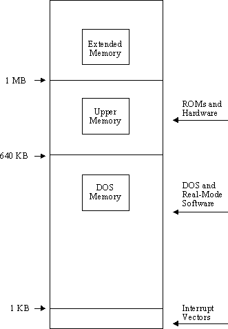

Index of Topics
- - 1 -
- 16-bit OS/2: Building and Running the Sample OS/2 1.x Application
16-bit OS/2: Creating 16-bit OS/2 1.x Applications
16-bit OS/2: Debugging the Sample OS/2 1.x Application
16-bit OS/2: The Sample Application
16-bit Windows: Building and Running the GUI Application
16-bit Windows: Building and Running the Non-GUI Application
16-bit Windows: Console Device in a Windowed Environment
16-bit Windows: Creating 16-bit Windows 3.x Applications
16-bit Windows: Debugging the GUI Application
16-bit Windows: Debugging the Non-GUI Application
16-bit Windows: Default Windowing Library Functions
16-bit Windows: Porting Non-GUI Applications to 16-bit Windows 3.x
16-bit Windows: The Sample GUI Application
16-bit Windows: The Sample Non-GUI Application
- 3 -
- 32-bit Extended DOS Application Development
32-bit OS/2: Building and Running the Sample OS/2 Application
32-bit OS/2: Creating 32-bit OS/2 Applications
32-bit OS/2: Debugging the Sample OS/2 Application
32-bit OS/2: The Sample Application
32-bit Windows: Building and Running the GUI Application
32-bit Windows: Building and Running the Non-GUI Application
32-bit Windows: Console Device in a Windowed Environment
32-bit Windows: Creating 32-bit Windows 3.x Applications
32-bit Windows: Debugging the GUI Application
32-bit Windows: Debugging the Non-GUI Application
32-bit Windows: Default Windowing Library Functions
32-bit Windows: Porting Non-GUI Applications to 32-bit Windows 3.x
32-bit Windows: The Sample GUI Application
32-bit Windows: The Sample Non-GUI Application
- A -
- Argument Passing Convention
- C -
- Commonly Asked Questions and Answers
The compiler cannot find my include files
Converting to Open Watcom F77
Creating NetWare 386 NLM Applications
- D -
- Determining my current patch level
The difference between the "d1" and "d2" compiler options
The difference between the "debug" and "d2" compiler options
DOS/4GW: 32-Bit Gates
DOS/4GW: Access to Technical Support
DOS/4GW: Addressing
DOS/4GW: Building and Running the Sample DOS/4GW Application
DOS/4GW: Chaining 16-bit and 32-bit Handlers
DOS/4GW: Changing the Defaults
DOS/4GW: Changing the Switch Mode Setting
DOS/4GW: Compatibility
DOS/4GW: Configuring DOS/4GW
DOS/4GW: Controlling Address Line 20
DOS/4GW: Coprocessor Status
DOS/4GW: Creating 32-bit DOS/4GW Applications
DOS/4GW: Debugging
DOS/4GW: Debugging the Sample DOS/4GW Application
DOS/4GW: Demand Paging Performance Tuning Services
DOS/4GW: Differences Within the DOS/4G Product Line
DOS/4GW: DOS Memory Management Services
DOS/4GW: DOS, BIOS, and Mouse Services
DOS/4GW: DOS/4G Errors
DOS/4GW: DOS/4GW Commonly Asked Questions
DOS/4GW: DOS4GW
DOS/4GW: DPMI Version
DOS/4GW: Error Messages
DOS/4GW: Fine Control of Memory Usage
DOS/4GW: Functions 25H and 35H: Interrupt Handling in Protected Mode
DOS/4GW: Getting the Address of the Interrupt Handler
DOS/4GW: Int31H Function Calls
DOS/4GW: Interrupt 21H Functions
DOS/4GW: Interrupt 31H DPMI Functions
DOS/4GW: Interrupt and Exception Handling
DOS/4GW: Interrupt Services
DOS/4GW: Kernel Error Messages
DOS/4GW: Linear Executables
DOS/4GW: Local Descriptor Table (LDT) Management Services
DOS/4GW: Memory Management
DOS/4GW: Memory Management Services
DOS/4GW: Memory Use
DOS/4GW: Page Locking Services
DOS/4GW: Physical Address Mapping
DOS/4GW: PMINFO
DOS/4GW: PRIVATXM
DOS/4GW: RMINFO
DOS/4GW: Setting Runtime Options
DOS/4GW: Specifying a Range of Extended Memory
DOS/4GW: The .VMC File
DOS/4GW: The DOS4G Environment Variable
DOS/4GW: The Linear Executable Format
DOS/4GW: The Sample Application
DOS/4GW: The Stub Program
DOS/4GW: The Tenberry Software DOS/4GW DOS Extender
DOS/4GW: Translation Services
DOS/4GW: Using Extra Memory
DOS/4GW: Using Interrupt 31H Function Calls
DOS/4GW: Utilities
DOS/4GW: Vendor Specific Extensions
DOS/4GW: Virtual Interrupt State Functions
DOS/4GW: Virtual Memory
DOS/4GW: VMM
DOS/4GW: VMM Default Parameters
DOS: Building and Running the Sample DOS Application
DOS: Creating 16-bit DOS Applications
DOS: Debugging the Sample DOS Application
DOS: The Sample Application
- H -
- How can I write directly to video memory using a DOS extender?
How do I access a FORTRAN common block from within C?
How do I call a C function that accepts a variable number of arguments?
How do I get information about free memory in the 32-bit environment?
How do I issue interrupts in a DOS/4GW application?
How do I pass a string from a C function to FORTRAN?
How do I pass a string from FORTRAN to a C function?
How do I pass integers from C to a FORTRAN function?
How do I pass integers from FORTRAN to a C function?
How more than 20 files at a time can be opened
How source files can be seen in the debugger
- I -
- Integer Type Compatibility
Inter-Language calls: C and FORTRAN
- L -
- The linker reports a "stack segment not found" error
Linking Considerations
- M -
- Memory Model Compatibility
- N -
- NT: A Multi-threaded Example
NT: Building and Running the Character-mode Application
NT: Creating a New Thread
NT: Creating a Sample Dynamic Link Library
NT: Creating Dynamic Link Libraries
NT: Creating Threads
NT: Creating Windows NT Character-mode Applications
NT: Debugging the Character-mode Application
NT: Dynamic Link Library Initialization/Termination
NT: Getting the Current Thread Identifier
NT: Programming Considerations
NT: Terminating the Current Thread
NT: The Dynamic Link Library Data Area
NT: The Sample Character-mode Application
NT: Using Dynamic Link Libraries
NT: Windows NT Character-mode Versus GUI
NT: Windows NT Dynamic Link Libraries
NT: Windows NT Multi-threaded Applications
NT: Windows NT Programming Overview
- O -
- Open Watcom FORTRAN 77 Application Development
OS/2: A Multi-threaded Example
OS/2: An Example
OS/2: Calling Presentation Manager API Functions
OS/2: Creating a New Thread
OS/2: Creating a Sample Dynamic Link Library
OS/2: Creating Dynamic Link Libraries
OS/2: Creating Threads
OS/2: Dynamic Link Library Initialization/Termination
OS/2: Getting the Current Thread Identifier
OS/2: OS/2 2.x Dynamic Link Libraries
OS/2: OS/2 2.x Multi-threaded Applications
OS/2: Porting Existing FORTRAN 77 Applications
OS/2: Programming Considerations
OS/2: Programming for OS/2 Presentation Manager
OS/2: Terminating the Current Thread
OS/2: The Dynamic Link Library Data Area
OS/2: Thread Limits
OS/2: Using Dynamic Link Libraries
- P -
- Phar Lap: Building and Running the Sample 386|DOS-Extender Application
Phar Lap: Creating 32-bit Phar Lap 386|DOS-Extender Applications
Phar Lap: Debugging the Sample 386|DOS-Extender Application
Phar Lap: The Sample Application
- R -
- Reading a stream of binary data from a file
Redefining math error handling with Open Watcom F77
Resolving an "Undefined Reference" linker error
- S -
- Special Windows API Functions
Symbol Naming Convention
- W -
- What "Stack Overflow!" means
What are the probable causes of a General Protection Fault in 32-bit applications?
What you should know about optimization
Which floating-point compiler option should I use for my application?
Why local variable values are not maintained between subprogram calls
Windows: 32-bit Extended Windows Application Development
Windows: _16 Functions
Windows: _Call16
Windows: A Sample 32-bit DLL
Windows: A Sample 32-bit DLL Using a Structure
Windows: A Working Example
Windows: All function pointers passed to Windows must be 16-bit far pointers, correct?
Windows: AllocAlias16
Windows: AllocHugeAlias16
Windows: Building the Applications
Windows: Callback Function Pointers
Windows: Calling 16-bit DLLs
Windows: Calling Functions in a 32-bit DLL from a 16-bit Application
Windows: Calling Functions in a 32-bit DLL from a 32-bit Application
Windows: Can you call 16-bit code from a 32-bit Windows application?
Windows: Compiling and Linking the Examples
Windows: Creating and Debugging Dynamic Link Libraries
Windows: Debugging a 32-bit DLL
Windows: DefineDLLEntry
Windows: DefineUserProc16
Windows: Environment Notes
Windows: Floating-point Emulation
Windows: FreeAlias16
Windows: FreeHugeAlias16
Windows: FreeIndirectFunctionHandle
Windows: GetIndirectFunctionHandle
Windows: GetProc16
Windows: GlobalAlloc and LocalAlloc
Windows: How do I add my Windows resources?
Windows: Implementation Overview
Windows: Installing the Examples under Windows
Windows: Interfacing Visual Basic and Open Watcom FORTRAN 77 DLLs
Windows: InvokeIndirectFunction
Windows: MapAliasToFlat
Windows: Multiple Instances
Windows: PASS_WORD_AS_POINTER
Windows: Pointer Handling
Windows: Pointers
Windows: ReleaseProc16
Windows: Running the Examples
Windows: Sample Visual Basic DLL Programs
Windows: SendMessage and SendDlgItemMessage
Windows: Source code for COVER16.DLL
Windows: Source Code for VBDLL32.DLL
Windows: Steps to Obtaining a 32-bit Application
Windows: Summary
Windows: System Overview
Windows: System Structure
Windows: The Open Watcom 32-bit Windows 3.x Extender
Windows: When To Convert Incoming Pointers
Windows: When To Convert Outgoing Pointers
Windows: Why are 32-bit callback routines FAR?
Windows: Why use the _16 API functions?
Windows: WIN386 Library Subprograms
Windows: WINAPI.FI
Windows: Window Sub-classing
Windows: Windows 3.x 32-bit Programming Overview
Windows: Windows 32-Bit Dynamic Link Libraries
Open Watcom FORTRAN 77 Application Development
This document contains guides to application development for several environments including 16-bit DOS, 32-bit extended
DOS, Windows 3.x, 32-bit extended Windows 3.x, Windows NT/2000/XP, Win9x, OS/2, and Novell NLMs. It also describes
mixed language (C, FORTRAN) application development. It concludes with a chapter on some general questions and the
answers to them.
This document covers the following topics:
- DOS Programming Guide
- Creating 16-bit DOS Applications
-
Creating 32-bit Phar Lap 386|DOS-Extender Applications
-
Creating 32-bit DOS/4GW Applications
-
32-bit Extended DOS Application Development
-
- The DOS/4GW DOS Extender
- The Tenberry Software DOS/4GW DOS Extender
-
Linear Executables
-
Configuring DOS/4GW
-
VMM
-
Interrupt 21H Functions
-
Interrupt 31H DPMI Functions
-
Utilities
-
Error Messages
-
DOS/4GW Commonly Asked Questions
-
- Windows 3.x Programming Guide
- Creating 16-bit Windows 3.x Applications
-
Porting Non-GUI Applications to 16-bit Windows 3.x
-
Creating 32-bit Windows 3.x Applications
-
Porting Non-GUI Applications to 32-bit Windows 3.x
-
The Open Watcom 32-bit Windows Extender
-
Windows 3.x 32-bit Programming Overview
-
Windows 32-Bit Dynamic Link Libraries
-
Interfacing Visual Basic and Open Watcom FORTRAN 77 DLLs
-
WIN386 Library Subprograms
-
32-bit Extended Windows Application Development
-
Special Windows API Functions
-
- Windows NT Programming Guide
- Windows NT Programming Overview
-
Creating Windows NT GUI Applications
-
Porting Non-GUI Applications to Windows NT GUI
-
Windows NT Multi-threaded Applications
-
Windows NT Dynamic Link Libraries
-
- OS/2 Programming Guide
- Creating 16-bit OS/2 1.x Applications
-
Creating 32-bit OS/2 Applications
-
OS/2 Multi-threaded Applications
-
OS/2 Dynamic Link Libraries
-
Programming for OS/2 Presentation Manager
-
- Novell NLM Programming Guide
- Creating NetWare 386 NLM Applications
-
- Mixed Language Programming
- Inter-Language calls: C and FORTRAN
-
- Common Problems
- Commonly Asked Questions and Answers
-
DOS: Creating 16-bit DOS Applications
This chapter describes how to compile and link 16-bit DOS applications simply and quickly.
We will illustrate the steps to creating 16-bit DOS applications by taking a small sample application and showing
you how to compile, link, run and debug it.
DOS: The Sample Application
To demonstrate the creation of 16-bit DOS applications using command-line oriented tools, we introduce a simple sample
program. For our example, we are going to use the "sieve" program.
* This program computes the prime numbers between 1 and 10,000
* using the Sieve of Eratosthenes algorithm.
IMPLICIT NONE
INTEGER UPBOUND
PARAMETER (UPBOUND=10000)
INTEGER I, K, PRIMES
LOGICAL*1 NUMBERS(2:UPBOUND)
CHARACTER*11 FORM
PARAMETER (FORM='(A,I5,A,I5)')
DO I = 2, UPBOUND
NUMBERS(I) = .TRUE.
ENDDO
PRIMES = 0
DO I = 2, UPBOUND
IF( NUMBERS(I) )THEN
PRIMES
= PRIMES + 1
DO K
= I + I, UPBOUND, I
NUMBERS(K) = .FALSE.
ENDDO
ENDIF
ENDDO
PRINT FORM, 'The Number of Primes between 1 and ', UPBOUND,
1
' are: ', PRIMES
END
The goal of this program is to count the prime numbers between 1 and 10,000. It uses the famous Sieve of
Eratosthenes algorithm to accomplish this task. We will take you through the steps necessary to produce this result.
DOS: Building and Running the Sample DOS Application
To compile and link our example program which is stored in the file sieve.for, enter the following command:
C>wfl /l=dos sieve.for
The typical messages that appear on the screen are shown in the following illustration.
C>wfl /l=dos sieve.for
Open Watcom F77/16 Compile and Link Utility
Copyright (c) 2010 the Open Watcom Contributors. All Rights Reserved.
Portions Copyright (c) 1990, 2002 Sybase, Inc. All Rights Reserved.
Source code is available under the Sybase Open Watcom Public License.
See http://www.openwatcom.org/ for details.
wfc sieve.for
Open Watcom FORTRAN 77/16 Optimizing Compiler
Copyright (c) 2010 the Open Watcom Contributors. All Rights Reserved.
Portions Copyright (c) 1984, 2002 Sybase, Inc. All Rights Reserved.
Source code is available under the Sybase Open Watcom Public License.
See http://www.openwatcom.org/ for details.
sieve.for: 21 statements, 311 bytes, 6 extensions, 0 warnings, 0 errors
Open Watcom Linker
Copyright (c) 2010 the Open Watcom Contributors. All Rights Reserved.
Portions Copyright (c) 1985, 2002 Sybase, Inc. All Rights Reserved.
Source code is available under the Sybase Open Watcom Public License.
See http://www.openwatcom.org/ for details.
loading object files
searching libraries
creating a DOS executable
Provided that no errors were encountered during the compile or link phases, the "sieve" program may now
be run.
C>sieve
The Number of Primes between 1 and 10000 are: 1229
If you examine the current directory, you will find that two files have been created. These are sieve.obj
(the result of compiling sieve.for) and sieve.exe (the result of linking sieve.obj with the appropriate
Open Watcom FORTRAN 77 libraries). It is sieve.exe that is run by DOS when you enter the "sieve"
command.
DOS: Debugging the Sample DOS Application
Let us assume that you wish to debug your application in order to locate an error in programming. In the previous
section, the "sieve" program was compiled with default compile and link options. When debugging an application,
it is useful to refer to the symbolic names of routines and variables. It is also convenient to debug at the source
line level rather than the machine language level. To do this, we must direct both the compiler and linker to include
additional debugging information in the object and executable files. Using the WFL command, this is fairly
straightforward. WFL recognizes the Open Watcom F77 compiler "debug" options and will create
the appropriate debug directives for the Open Watcom Linker.
For example, to compile and link the "sieve" program with debugging information, the following command may
be issued.
C>wfl /l=dos /d2 sieve.for
The typical messages that appear on the screen are shown in the following illustration.
C>wfl /l=dos /d2 sieve.for
Open Watcom F77/16 Compile and Link Utility
Copyright (c) 2010 the Open Watcom Contributors. All Rights Reserved.
Portions Copyright (c) 1990, 2002 Sybase, Inc. All Rights Reserved.
Source code is available under the Sybase Open Watcom Public License.
See http://www.openwatcom.org/ for details.
wfc sieve.for /d2
Open Watcom FORTRAN 77/16 Optimizing Compiler
Copyright (c) 2010 the Open Watcom Contributors. All Rights Reserved.
Portions Copyright (c) 1984, 2002 Sybase, Inc. All Rights Reserved.
Source code is available under the Sybase Open Watcom Public License.
See http://www.openwatcom.org/ for details.
sieve.for: 21 statements, 392 bytes, 6 extensions, 0 warnings, 0 errors
Open Watcom Linker
Copyright (c) 2010 the Open Watcom Contributors. All Rights Reserved.
Portions Copyright (c) 1985, 2002 Sybase, Inc. All Rights Reserved.
Source code is available under the Sybase Open Watcom Public License.
See http://www.openwatcom.org/ for details.
loading object files
searching libraries
creating a DOS executable
The "d2" option requests the maximum amount of debugging information that can be provided by the Open Watcom
F77 compiler. WFL will make sure that this debugging information is included in the executable file that
is produced by the linker.
The "bytes" value is larger than in the previous example since selection of the "d2" option results
in fewer code optimizations by default. You can request more optimization by specifying the appropriate options.
However, you do so at the risk of making it more difficult for yourself to determine the relationship between the object
code and the original source language code.
To request the Open Watcom Debugger to assist in debugging the application, the following command may be issued.
C>wd sieve
It would be too ambitious to describe the debugger in this introductory chapter so we refer you to the book entitled
Open Watcom Debugger User's Guide.
Phar Lap: Creating 32-bit Phar Lap 386|DOS-Extender Applications
This chapter describes how to compile and link 32-bit Phar Lap 386|DOS-Extender applications simply and quickly.
We will illustrate the steps to creating 32-bit Phar Lap 386|DOS-Extender applications by taking a small sample application
and showing you how to compile, link, run and debug it.
Phar Lap: The Sample Application
To demonstrate the creation of 32-bit Phar Lap 386|DOS-Extender applications using command-line oriented tools, we introduce
a simple sample program. For our example, we are going to use the "sieve" program.
* This program computes the prime numbers between 1 and 10,000
* using the Sieve of Eratosthenes algorithm.
IMPLICIT NONE
INTEGER UPBOUND
PARAMETER (UPBOUND=10000)
INTEGER I, K, PRIMES
LOGICAL*1 NUMBERS(2:UPBOUND)
CHARACTER*11 FORM
PARAMETER (FORM='(A,I5,A,I5)')
DO I = 2, UPBOUND
NUMBERS(I) = .TRUE.
ENDDO
PRIMES = 0
DO I = 2, UPBOUND
IF( NUMBERS(I) )THEN
PRIMES
= PRIMES + 1
DO K
= I + I, UPBOUND, I
NUMBERS(K) = .FALSE.
ENDDO
ENDIF
ENDDO
PRINT FORM, 'The Number of Primes between 1 and ', UPBOUND,
1
' are: ', PRIMES
END
The goal of this program is to count the prime numbers between 1 and 10,000. It uses the famous Sieve of
Eratosthenes algorithm to accomplish this task. We will take you through the steps necessary to produce this result.
Phar Lap: Building and Running the Sample 386|DOS-Extender Application
To compile and link our example program which is stored in the file sieve.for, enter the following command:
C>wfl386 /l=pharlap sieve.for
The typical messages that appear on the screen are shown in the following illustration.
C>wfl386 /l=pharlap sieve.for
Open Watcom F77/32 Compile and Link Utility
Copyright (c) 2010 the Open Watcom Contributors. All Rights Reserved.
Portions Copyright (c) 1990, 2002 Sybase, Inc. All Rights Reserved.
Source code is available under the Sybase Open Watcom Public License.
See http://www.openwatcom.org/ for details.
wfc386 sieve.for
Open Watcom FORTRAN 77/32 Optimizing Compiler
Copyright (c) 2010 the Open Watcom Contributors. All Rights Reserved.
Portions Copyright (c) 1984, 2002 Sybase, Inc. All Rights Reserved.
Source code is available under the Sybase Open Watcom Public License.
See http://www.openwatcom.org/ for details.
sieve.for: 21 statements, 172 bytes, 6 extensions, 0 warnings, 0 errors
Open Watcom Linker
Copyright (c) 2010 the Open Watcom Contributors. All Rights Reserved.
Portions Copyright (c) 1985, 2002 Sybase, Inc. All Rights Reserved.
Source code is available under the Sybase Open Watcom Public License.
See http://www.openwatcom.org/ for details.
loading object files
searching libraries
creating a Phar Lap simple executable
Provided that no errors were encountered during the compile or link phases, the "sieve" program may now
be run.
C>run386 sieve
The Number of Primes between 1 and 10000 are: 1229
If you examine the current directory, you will find that two files have been created. These are sieve.obj
(the result of compiling sieve.for) and sieve.exp (the result of linking sieve.obj with the appropriate
Open Watcom FORTRAN 77 libraries). It is sieve.exp that is run by DOS when you enter the "run386 sieve"
command.
Phar Lap: Debugging the Sample 386|DOS-Extender Application
Let us assume that you wish to debug your application in order to locate an error in programming. In the previous
section, the "sieve" program was compiled with default compile and link options. When debugging an application,
it is useful to refer to the symbolic names of routines and variables. It is also convenient to debug at the source
line level rather than the machine language level. To do this, we must direct both the compiler and linker to include
additional debugging information in the object and executable files. Using the WFL386 command, this is
fairly straightforward. WFL386 recognizes the Open Watcom F77 compiler "debug" options and
will create the appropriate debug directives for the Open Watcom Linker.
For example, to compile and link the "sieve" program with debugging information, the following command may
be issued.
C>wfl386 /l=pharlap /d2 sieve.for
The typical messages that appear on the screen are shown in the following illustration.
C>wfl386 /l=pharlap /d2 sieve.for
Open Watcom F77/32 Compile and Link Utility
Copyright (c) 2010 the Open Watcom Contributors. All Rights Reserved.
Portions Copyright (c) 1990, 2002 Sybase, Inc. All Rights Reserved.
Source code is available under the Sybase Open Watcom Public License.
See http://www.openwatcom.org/ for details.
wfc386 sieve.for /d2
Open Watcom FORTRAN 77/32 Optimizing Compiler
Copyright (c) 2010 the Open Watcom Contributors. All Rights Reserved.
Portions Copyright (c) 1984, 2002 Sybase, Inc. All Rights Reserved.
Source code is available under the Sybase Open Watcom Public License.
See http://www.openwatcom.org/ for details.
sieve.for: 21 statements, 237 bytes, 6 extensions, 0 warnings, 0 errors
Open Watcom Linker
Copyright (c) 2010 the Open Watcom Contributors. All Rights Reserved.
Portions Copyright (c) 1985, 2002 Sybase, Inc. All Rights Reserved.
Source code is available under the Sybase Open Watcom Public License.
See http://www.openwatcom.org/ for details.
loading object files
searching libraries
creating a Phar Lap simple executable
The "d2" option requests the maximum amount of debugging information that can be provided by the Open Watcom
F77 compiler. WFL386 will make sure that this debugging information is included in the executable file
that is produced by the linker.
The "bytes" value is larger than in the previous example since selection of the "d2" option results
in fewer code optimizations by default. You can request more optimization by specifying the appropriate options.
However, you do so at the risk of making it more difficult for yourself to determine the relationship between the object
code and the original source language code.
To request the Open Watcom Debugger to assist in debugging the application, the following command may be issued.
C>wd /trap=pls sieve
It would be too ambitious to describe the debugger in this introductory chapter so we refer you to the book entitled
Open Watcom Debugger User's Guide.
DOS/4GW: Creating 32-bit DOS/4GW Applications
This chapter describes how to compile and link 32-bit DOS/4GW applications simply and quickly.
We will illustrate the steps to creating 32-bit DOS/4GW applications by taking a small sample application and showing
you how to compile, link, run and debug it.
DOS/4GW: The Sample Application
To demonstrate the creation of 32-bit DOS/4GW applications using command-line oriented tools, we introduce a simple sample
program. For our example, we are going to use the "sieve" program.
* This program computes the prime numbers between 1 and 10,000
* using the Sieve of Eratosthenes algorithm.
IMPLICIT NONE
INTEGER UPBOUND
PARAMETER (UPBOUND=10000)
INTEGER I, K, PRIMES
LOGICAL*1 NUMBERS(2:UPBOUND)
CHARACTER*11 FORM
PARAMETER (FORM='(A,I5,A,I5)')
DO I = 2, UPBOUND
NUMBERS(I) = .TRUE.
ENDDO
PRIMES = 0
DO I = 2, UPBOUND
IF( NUMBERS(I) )THEN
PRIMES
= PRIMES + 1
DO K
= I + I, UPBOUND, I
NUMBERS(K) = .FALSE.
ENDDO
ENDIF
ENDDO
PRINT FORM, 'The Number of Primes between 1 and ', UPBOUND,
1
' are: ', PRIMES
END
The goal of this program is to count the prime numbers between 1 and 10,000. It uses the famous Sieve of
Eratosthenes algorithm to accomplish this task. We will take you through the steps necessary to produce this result.
DOS/4GW: Building and Running the Sample DOS/4GW Application
To compile and link our example program which is stored in the file sieve.for, enter the following command:
C>wfl386 /l=dos4g sieve.for
The typical messages that appear on the screen are shown in the following illustration.
C>wfl386 /l=dos4g sieve.for
Open Watcom F77/32 Compile and Link Utility
Copyright (c) 2010 the Open Watcom Contributors. All Rights Reserved.
Portions Copyright (c) 1990, 2002 Sybase, Inc. All Rights Reserved.
Source code is available under the Sybase Open Watcom Public License.
See http://www.openwatcom.org/ for details.
wfc386 sieve.for
Open Watcom FORTRAN 77/32 Optimizing Compiler
Copyright (c) 2010 the Open Watcom Contributors. All Rights Reserved.
Portions Copyright (c) 1984, 2002 Sybase, Inc. All Rights Reserved.
Source code is available under the Sybase Open Watcom Public License.
See http://www.openwatcom.org/ for details.
sieve.for: 21 statements, 172 bytes, 6 extensions, 0 warnings, 0 errors
Open Watcom Linker
Copyright (c) 2010 the Open Watcom Contributors. All Rights Reserved.
Portions Copyright (c) 1985, 2002 Sybase, Inc. All Rights Reserved.
Source code is available under the Sybase Open Watcom Public License.
See http://www.openwatcom.org/ for details.
loading object files
searching libraries
creating a DOS/4G executable
Provided that no errors were encountered during the compile or link phases, the "sieve" program may now
be run.
C>sieve
The Number of Primes between 1 and 10000 are: 1229
If you examine the current directory, you will find that two files have been created. These are sieve.obj
(the result of compiling sieve.for) and sieve.exe (the result of linking sieve.obj with the appropriate
Open Watcom FORTRAN 77 libraries). It is sieve.exe that is run by DOS when you enter the "sieve"
command.
DOS/4GW: Debugging the Sample DOS/4GW Application
Let us assume that you wish to debug your application in order to locate an error in programming. In the previous
section, the "sieve" program was compiled with default compile and link options. When debugging an application,
it is useful to refer to the symbolic names of routines and variables. It is also convenient to debug at the source
line level rather than the machine language level. To do this, we must direct both the compiler and linker to include
additional debugging information in the object and executable files. Using the WFL386 command, this is
fairly straightforward. WFL386 recognizes the Open Watcom F77 compiler "debug" options and
will create the appropriate debug directives for the Open Watcom Linker.
For example, to compile and link the "sieve" program with debugging information, the following command may
be issued.
C>wfl386 /l=dos4g /d2 sieve.for
The typical messages that appear on the screen are shown in the following illustration.
C>wfl386 /l=dos4g /d2 sieve.for
Open Watcom F77/32 Compile and Link Utility
Copyright (c) 2010 the Open Watcom Contributors. All Rights Reserved.
Portions Copyright (c) 1990, 2002 Sybase, Inc. All Rights Reserved.
Source code is available under the Sybase Open Watcom Public License.
See http://www.openwatcom.org/ for details.
wfc386 sieve.for /d2
Open Watcom FORTRAN 77/32 Optimizing Compiler
Copyright (c) 2010 the Open Watcom Contributors. All Rights Reserved.
Portions Copyright (c) 1984, 2002 Sybase, Inc. All Rights Reserved.
Source code is available under the Sybase Open Watcom Public License.
See http://www.openwatcom.org/ for details.
sieve.for: 21 statements, 237 bytes, 6 extensions, 0 warnings, 0 errors
Open Watcom Linker
Copyright (c) 2010 the Open Watcom Contributors. All Rights Reserved.
Portions Copyright (c) 1985, 2002 Sybase, Inc. All Rights Reserved.
Source code is available under the Sybase Open Watcom Public License.
See http://www.openwatcom.org/ for details.
loading object files
searching libraries
creating a DOS/4G executable
The "d2" option requests the maximum amount of debugging information that can be provided by the Open Watcom
F77 compiler. WFL386 will make sure that this debugging information is included in the executable file
that is produced by the linker.
The "bytes" value is larger than in the previous example since selection of the "d2" option results
in fewer code optimizations by default. You can request more optimization by specifying the appropriate options.
However, you do so at the risk of making it more difficult for yourself to determine the relationship between the object
code and the original source language code.
To request the Open Watcom Debugger to assist in debugging the application, the following command may be issued.
C>wd /trap=rsi sieve
It would be too ambitious to describe the debugger in this introductory chapter so we refer you to the book entitled
Open Watcom Debugger User's Guide.
32-bit Extended DOS Application Development
The purpose of this chapter is to anticipate common programming questions for 32-bit extended DOS application development.
Note that these programming solutions may be DOS-extender specific and therefore may not work for other DOS extenders.
The following topics are discussed in this chapter:
- How can I write directly to video memory using DOS/4GW?
- How do I issue interrupts in a DOS/4GW application?
- How do I get information about free memory with DOS/4GW?
Please refer to the DOS Protected-Mode Interface (DPMI) Specification for information on DPMI services.
In the past, the DPMI specification could be obtained free of charge by contacting Intel Literature JP26 at 800-548-4725
or by writing to the address below. We have been advised that the DPMI specification is no longer available in printed
form.
Intel Literature JP26
3065 Bowers Avenue
P.O. Box 58065
Santa Clara, California
U.S.A. 95051-8065
However, the DPMI 1.0 specification can be obtained from the Intel ftp site. Here is the URL.
ftp://ftp.intel.com/pub/IAL/software_specs/dpmiv1.zip
This ZIP file contains a Postscript version of the DPMI 1.0 specification.
How can I write directly to video memory using a DOS extender?
Many programmers require access to video RAM in order to directly manipulate data on the screen. Under DOS, it was
standard practice to use a far pointer, with the segment part of the far pointer set to the screen segment. Under DOS
extenders, this practice is not so standard. Each DOS extender provides its own method for accessing video memory.
The following program demonstrates the method used with DOS/4GW.
* FSCREEN.FOR
* The following program shows how to access screen memory
* from a FORTRAN program under the DOS/4GW DOS extender.
* Compile & Link: wfl386 -l=dos4g fscreen
program screen
* Allocatable arrays must be declared by specifying their
* dimensions using colons only (see Open Watcom FORTRAN 77
* Language Reference on the ALLOCATE statement for details).
character*1 screen(:,:)
integer SCRSIZE, i
parameter ( SCRSIZE = 80*25 )
* Under DOS/4GW, the first megabyte of physical memory - the
* real memory - is mapped as a shared linear address space.
* This allows your application to access video RAM using its
* linear address. The DOS segment:offset of B800:0000
* corresponds to a linear address of B8000.
allocate( screen(0:1,0:SCRSIZE-1), location='B8000'x
)
do i = 0, SCRSIZE - 1
screen(0,i) = '*'
enddo
end
How do I issue interrupts in a DOS/4GW application?
The Open Watcom F77 library files contain the FINTR subroutine which allows the user to perform interrupt calls within
a FORTRAN 77 program. This subroutine is described in the Subprogram Library section of the Open Watcom FORTRAN
77 User's Guide.
The following sample program illustrates the use of the FINTR subroutine to set up the register information required
for Interrupt 21h. The register information is loaded into the regs structure. This structure is defined in the
DOS.FI file located in the \WATCOM\SRC\FORTRAN\DOS directory. Assign values to the register elements according to the
interrupt call requirements. For example, Interrupt 21h, function 4Eh needs valid values for the AH, ECX, DS and EDX
to set up the registers for the Interrupt 21h call. This procedure can be used to perform any interrupt calls that
are supported in protected mode by DOS/4GW.
* DTA.FOR
* This program demonstrates the use of the FINTR
* function to list the files of the current directory.
* Interrupt 21 Functions for FIND FIRST, FIND NEXT,
* and GET DTA are used.
* Compile & Link: set finclude=\watcom\src\fortran\dos
*
wfl386 -l=dos4g dta
*$pragma aux GetDS = "mov ax,ds" value [ax]
program dta
implicit integer*2 (i-n)
integer*2 res
integer*2 GetDS
integer*4 dir,addr
integer*1 dta(:)
character fname*1(12), fname2*12
equivalence (fname, fname2)
* DTA is declared as a FAR array. When referencing an array
* element, the pointer to the array is a FAR pointer. With a
* character variable, the result is a pointer to a string
* control block (SCB). The run-time library expects the SCB
* to contain a near pointer. To get around the problem, we
* define the DTA as a byte array, then use the CHAR function
* to get the character equivalent for printing a filename.
*$pragma array dta far
include 'dos.fi'
*
* Listing of current directory
*
call fsystem( 'dir/w *.*'//char(0) )
dir = loc( '*.*'//char(0) )
i = 0
10 i = i + 1
if( i .eq. 1 )then
*
* Find first file
*
AH = '4E'x
ECX = 0
DS = GetDS()
EDX = dir
else
*
* Find next file
*
AH = '4F'x
endif
call fintr( '21'x, regs )
res = AX
if( res .eq. 0 )then
*
* Extract filename from DTA
*
AH = '2F'x
call fintr( '21'x,
regs )
addr = ISHL(
IAND( INT( ES ), '0000FFFF'x ), 16 )
addr = IOR( addr,
IAND( INT( BX ), '0000FFFF'x ) )
allocate( dta(0:42),
location=addr )
fname2 = ' '
do j = 30, 41
if( dta(j) .eq. 0 ) goto 20
fname(j - 29) = char( dta(j) )
enddo
20 print *, fname2
deallocate( dta )
goto 10
endif
end
Under a virtual memory system, programmers are often interested in the amount of physical memory they can allocate.
Information about the amount of free memory that is available is always provided under a DPMI host, however, the manner in
which this information is provided may differ under various environments. Keep in mind that in a multi-tasking environment,
the information returned to your task from the DPMI host can easily become obsolete if other tasks allocate memory independently
of your task.
DOS/4GW provides a DPMI interface through interrupt 0x31. This allows you to use DPMI service 0x0500 to get
free memory information. The following program illustrates this procedure.
* FMEMORY.FOR
* This example shows how to get information about free
* memory using DPMI call 0500h under DOS/4GW using Open Watcom
* FORTRAN 77. Note that only the first field of the
* structure is guaranteed to contain a valid value; any
* field not returned by DOS/4GW is set to -1 (0FFFFFFFFh).
* Compile & Link: set finclude=\watcom\src\fortran\dos
*
wfl386 -l=dos4g fmemory
* Pragma to get the default data segment
*$pragma aux GetDS = "mov ax,ds" value [ax] modify exact [ax]
program memory
implicit none
include 'dos.fi'
structure /meminfo/
integer*4 LargestBlockAvail
integer*4 MaxUnlockedPage
integer*4 LargestLockablePage
integer*4 LinAddrSpace
integer*4 NumFreePagesAvail
integer*4 NumPhysicalPagesFree
integer*4 TotalPhysicalPages
integer*4 FreeLinAddrSpace
integer*4 SizeOfPageFile
integer*4 Reserved1
integer*4 Reserved2
end structure
* Set up the register information for the interrupt call
record /meminfo/ MemInfo
integer interrupt_no
integer*2 GetDS
parameter( interrupt_no='31'x)
DS = FS = GS = 0
EAX = '00000500'x
ES = GetDS()
EDI = loc(MemInfo)
call fintr( interrupt_no, regs)
* Report the information returned by the DPMI host
print *,'------------------------------------------'
print *,'Largest available block (in bytes): ',
& Meminfo.LargestBlockAvail
print *,'Maximum unlocked page allocation: ',
& MemInfo.MaxUnlockedPage
print *,'Pages that can be allocated and locked: ',
& MemInfo.LargestLockablePage
print *,'Total linear address space including' //
& ' allocated
pages:', MemInfo.LinAddrSpace
print *,'Number of free pages available: ',
& MemInfo.NumFreePagesAvail
print *,'Number of physical pages not in use: ',
& MemInfo.NumPhysicalPagesFree
print *,'Total physical pages managed by host: ',
& MemInfo.TotalPhysicalPages
print *,'Free linear address space (pages): ',
& MemInfo.FreeLinAddrSpace
print *,'Size of paging/file partition (pages): ',
& MemInfo.SizeOfPageFile
end
DOS/4GW: The Tenberry Software DOS/4GW DOS Extender
The chapters in this section describe the 32-bit Tenberry Software DOS/4GW DOS Extender which is provided with
the Open Watcom F77 package. DOS/4GW is a subset of Tenberry Software's DOS/4G product. DOS/4GW
is customized for use with the Open Watcom F77 package. Key differences are:
- DOS/4GW will only execute programs built with a Open Watcom 32-bit compiler such as Open Watcom F77 and linked
with its run-time libraries.
- The DOS/4GW virtual memory manager (VMM), included in the package, is restricted to 32MB of memory.
- DOS/4GW does not provide extra functionality such as TSR capability and VMM performance tuning enhancements.
If your application has requirements beyond those provided by DOS/4GW, you may wish to acquire DOS/4GW Professional
or DOS/4G from:
Tenberry Software, Inc.
PO Box 20050
Fountain Hills, Arizona
U.S.A 85269-0050
WWW: http://www.tenberry.com/dos4g/
Email: info@tenberry.com
Phone: 1.480.767.8868
Fax: 1.480.767.8709
Programs developed to use the restricted version of DOS/4GW which is included in the Open Watcom F77 package
can be distributed on a royalty-free basis, subject to the licensing terms of the product.
DOS/4GW: Linear Executables
To build a linear executable, compile and link it as described in the chapter entitled "Creating 32-bit DOS/4GW Executables".
The resulting file will not run independently: you can run it under the Open Watcom Debugger, Tenberry Software
Instant-D debugger, or with the standalone "DOS4GW.EXE".
DOS/4GW works with files that use the Linear Executable (LE) file format. The format represents a protected-mode
program in the context of a 32-bit 386 runtime environment with linear to physical address translation hardware enabled.
It uses a flat address space.
This file format is similar to the Segmented Executable (NE) format used in OS/2 1.x and MS Windows. Both support
Dynamic Linking, Resources, and are geared toward protected-mode programs. Both formats use tables of "counted
ASCII" names, and they use similar relocation formats.
Both formats begin with a DOS style stub program that sophisticated loaders skip. This stub program executes
when the DOS/4GW loader is not present, displaying the message, This program cannot run in DOS mode.
When the Open Watcom Linker is used to link a DOS/4GW application, it automatically replaces the default stub
program with one that calls DOS4GW.
DOS/4GW: The Stub Program
The stub at the beginning of a linear executable is a real-mode program that you can modify as you like. For example,
you can:
- make the stub program do a checksum on the "DOS4GW.EXE" file to make sure it's the correct version.
- copy protect your program.
- specify a search path for the "DOS4GW.EXE" file.
- add command line arguments.
The SRC directory contains source code for a sample stub program. "WSTUB.C" is a simple example, a good
base to start from when you construct your own stub. Please note that you will require a 16-bit C compiler to compile
a new stub program. Following is the code in "WSTUB.C":
#include <stdio.h>
#include <stdlib.h>
#include <process.h>
#include <errno.h>
#include <string.h>
/* Add environment strings to be searched here */
char *paths_to_check[] = {
"DOS4GPATH",
"PATH"};
char *dos4g_path()
{
static char fullpath[80];
int i;
for( i = 0;
i < sizeof( paths_to_check ) / sizeof(
paths_to_check[0] );
i++ ) {
_searchenv( "dos4gw.exe", paths_to_check[i],
fullpath );
if( fullpath[0] ) return( &fullpath
);
}
for( i = 0;
i < sizeof( paths_to_check ) / sizeof(
paths_to_check[0] );
i++ ) {
_searchenv( "dos4g.exe", paths_to_check[i],
fullpath );
if( fullpath[0] ) return( &fullpath
);
}
return( "dos4gw.exe" );
}
main( int argc, char *argv[] )
{
char *av[4];
auto char cmdline[128];
av[0] = dos4g_path();
/* Locate the DOS/4G loader */
av[1] = argv[0];
/* name of executable to run */
av[2] = getcmd( cmdline );
/* command line */
av[3] = NULL;
/* end of list */
#ifdef QUIET
putenv( "DOS4G=QUIET" ); /* disables
DOS/4G Copyright banner */
#endif
execvp( av[0], av );
puts( "Stub exec failed:" );
puts( av[0] );
puts( strerror( errno ) );
exit( 1 );
/* indicate error */
}
If you do not have a C compiler, you can create an assembly language version of the above sample stub program and
use it to create your own version of the stub program.
DOS/4GW: Memory Use
This section explains how a DOS/4GW application uses the memory on a 386-based PC/AT. The basic memory layout
of an AT machine consists of 640KB of DOS memory, 384KB of upper memory, and an undetermined amount of extended memory.
DOS memory and upper memory together compose real memory, the memory that can be addressed when the processor is running
in real mode.

Figure 1. Basic Memory Layout
Under DOS/4GW, the first megabyte of physical memory - the real memory - is mapped as a shared linear address
space. This allows your application to use absolute addresses in real memory, to access video RAM or BIOS ROM, for
example. Because the real memory is available to all processes, you are not guaranteed to be able to allocate a particular
area in real memory: another process may have allocated it already.
Most code and data is placed in a paged linear address space starting at 4MB. The linear address space starts
at 4MB, the first address in the second page table, to avoid conflicts with VCPI system software.
This split mapping - an executable that is linked to start at 4MB in the linear address space, with the first MB in
the address space mapped to the first MB of physical memory - is called a split flat model.
The illustration below shows the layout of physical memory on the left, and the layout of the linear address space
on the right.

Figure 2. Physical Memory/Linear Address Space
The 1KB label in the diagram indicates the top of the real-mode interrupt vectors. 4KB marks the end of the
first page.
DOS/4GW: Configuring DOS/4GW
This chapter explains various options that can be specified with the DOS4G environment variable including how to
suppress the banner that is displayed by DOS/4GW at startup. It also explains how to use the DOS16M environment
variable to select the switch mode setting, if necessary, and to specify the range of extended memory in which DOS/4GW
will operate. DOS/4GW is based on Tenberry Software's DOS/16M 16-bit Protected-Mode support; hence the DOS16M
environment variable name remains unchanged.
DOS/4GW: The DOS4G Environment Variable
A number of options can be selected by setting the DOS4G environment variable. The syntax for setting options
is:
set DOS4G=option1,option2,...
Do not insert a space between DOS4G and the equal sign. A space to the right of the equal sign is optional.
- Options:
-
QUIET
- Use this option to suppress the DOS/4GW banner.
The banner that is displayed by DOS/4GW at startup can be suppressed by issuing the following command:
set DOS4G=quiet
Note: Use of the quiet switch is only permitted pursuant to the terms and conditions of the WATCOM
Software License Agreement and the additional redistribution rights described in the Getting Started manual.
Under these terms, suppression of the copyright by using the quiet switch is not permitted for applications which you
distribute to others.
VERBOSE
- Use this option to maximize the information available for postmortem debugging.
Before running your application, issue the following command:
set DOS4G=verbose
Reproduce the crash and record the output.
NULLP
- Use this option to trap references to the first sixteen bytes of physical memory.
Before running your application, issue the following command:
set DOS4G=nullp
To select a combination of options, list them with commas as separators.
Example:
set DOS4G=nullp,verbose
DOS/4GW: Changing the Switch Mode Setting
In almost all cases, DOS/4GW programs can detect the type of machine that is running and automatically choose an
appropriate real- to protected-mode switch technique. For the few cases in which this default setting does not work
we provide the DOS16M DOS environment variable, which overrides the default setting.
Change the switch mode settings by issuing the following command:
set DOS16M=value
Do not insert a space between DOS16M and the equal sign. A space to the right of the equal sign is optional.
The table below lists the machines and the settings you would use with them. Many settings have mnemonics, listed
in the column "Alternate Name", that you can use instead of the number. Settings that you must set with the
DOS16M variable have the notation req'd in the first column. Settings you may use are marked option,
and settings that will automatically be set are marked auto.
Alternate
Status Machine
Setting Name
Comment
auto 386/486 w/ DPMI 0
None
Set automatically if DPMI is active
req'd NEC 98-series 1
9801
Must be set for NEC 98-series
auto PS/2 2
None
Set automatically for PS/2
auto 386/486
3
386,
80386 Set automatically for 386 or 486
auto 386 INBOARD None
386 with Intel Inboard
req'd Fujitsu FMR-70 5
None
Must be set for Fujitsu FMR-70
auto 386/486 w/ VCPI 11
None
Set automatically if VCPI detected
req'd Hitachi B32 14
None
Must be set for Hitachi B32
req'd OKI if800
15 None
Must be set for OKI if800
option IBM PS/55 16
None
May be needed for some PS/55s
The following procedure shows you how to test the switch mode setting.
- If you have one of the machines listed below, set the DOS16M environment variable to the value shown for that machine
and specify a range of extended memory. For example, if your machine is a NEC 98-series, set DOS16M=1 @2M-4M.
See the section entitled DOS/4GW: Fine Control of Memory Usage
in this chapter for more information about setting the memory range.
Machine
Setting
NEC 98-series 1
Fujitsu FMR-60,-70 5
Hitachi B32 14
OKI if800
15
Before running DOS/4GW applications, check the switch mode setting by following this procedure:
- Run PMINFO and note the switch setting reported on the last line of the display. (PMINFO, which reports on the protected-mode
resources available to your programs, is described in more detail in the chapter entitled DOS/4GW: Utilities)
If PMINFO runs, the setting is usable on your machine.
- If you changed the switch setting, add the new setting to your AUTOEXEC.BAT file.
Note: PMINFO will run successfully on 286 machines. If your DOS/4GW application does not run,
and PMINFO does, check the CPU type reported on the first line of the display.
You are authorized (and encouraged) to distribute PMINFO to your customers. You may also include a copy of this
section in your documentation.
DOS/4GW: Fine Control of Memory Usage
In addition to setting the switch mode as described above, the DOS16M environment variable enables you to specify
which portion of extended memory DOS/4GW will use. The variable also allows you to instruct DOS/4GW to
search for extra memory and use it if it is present.
DOS/4GW: Specifying a Range of Extended Memory
Normally, you don't need to specify a range of memory with the DOS16M variable. You must use the variable,
however, in the following cases:
- You are running on a Fujitsu FMR-series, NEC 98-series, OKI if800-series or Hitachi B-series machine.
- You have older programs that use extended memory but don't follow one of the standard disciplines.
- You want to shell out of DOS/4GW to use another program that requires extended memory.
If none of these conditions applies to you, you can skip this section.
The general syntax is:
set DOS16M= [switch_mode] [@start_address [- end_address]] [:size]
In the syntax shown above, start_address, end_address and size represent numbers, expressed in decimal
or in hexadecimal (hex requires a 0x prefix). The number may end with a K to indicate an address or size in
kilobytes, or an M to indicate megabytes. If no suffix is given, the address or size is assumed to be in kilobytes.
If both a size and a range are specified, the more restrictive interpretation is used.
The most flexible strategy is to specify only a size. However, if you are running with other software that does
not follow a convention for indicating its use of extended memory, and these other programs start before DOS/4GW,
you will need to calculate the range of memory used by the other programs and specify a range for DOS/4GW programs
to use.
DOS/4GW ignores specifications (or parts of specifications) that conflict with other information about extended
memory use. Below are some examples of memory usage control:
- set DOS16M= 1 @2m-4m
- Mode 1, for NEC 98-series machines, and use extended memory between 2.0 and 4.0MB.
set DOS16M= :1M
- Use the last full megabyte of extended memory, or as much as available limited to 1MB.
set DOS16M= @2m
- Use any extended memory available above 2MB.
set DOS16M= @ 0 - 5m
- Use any available extended memory from 0.0 (really 1.0) to 5.0MB.
set DOS16M= :0
- Use no extended memory.
As a default condition DOS/4GW applications take all extended memory that is not otherwise in use. Multiple
DOS/4GW programs that execute simultaneously will share the reserved range of extended memory. Any non-DOS/4GW
programs started while DOS/4GW programs are executing will find that extended memory above the start of the DOS/4GW
range is unavailable, so they may not be able to run. This is very safe. There will be a conflict only if the
other program does not check the BIOS configuration call (Interrupt 15H function 88H, get extended memory size).
To create a private pool of extended memory for your DOS/4GW application, use the PRIVATXM program, described
in the chapter entitled DOS/4GW: Utilities.
The default memory allocation strategy is to use extended memory if available, and overflow into DOS (low) memory.
In a VCPI or DPMI environment, the start_address and end_address arguments are not meaningful.
DOS/4GW memory under these protocols is not allocated according to specific addresses because VCPI and DPMI automatically
prevent address conflicts between extended memory programs. You can specify a size for memory managed by VCPI
or DPMI, but DOS/4GW will not necessarily allocate this memory from the highest available extended memory address,
as it does for memory managed under other protocols.
Some machines contain extra non-extended, non-conventional memory just below 16MB. When DOS/4GW runs on a
Compaq 386, it automatically uses this memory because the memory is allocated according to a certain protocol, which DOS/4GW
follows. Other machines have no protocol for allocating this memory. To use the extra memory that may exist on
these machines, set DOS16M with the + option.
set DOS16M=+
Setting the + option causes DOS/4GW to search for memory in the range from FA0000 to FFFFFF and determine whether
the memory is usable. DOS/4GW does this by writing into the extra memory and reading what it has written.
In some cases, this memory is mapped for DOS or BIOS usage, or for other system uses. If DOS/4GW finds extra
memory that is mapped this way, and is not marked read-only, it will write into that memory. This will cause a crash,
but won't have any other effect on your system.
DOS/4GW: Setting Runtime Options
The DOS16M environment variable sets certain runtime options for all DOS/4GW programs running on the same
system.
To set the environment variable, the syntax is:
set DOS16M=[switch_mode_setting]^options.
Note: Some command line editing TSRs, such as CED, use the caret (^) as a delimiter. If you want
to set DOS16M using the syntax above while one of these TSRs is resident, modify the TSR to use a different delimiter.
These are the options:
- 0x01
- check A20 line -- This option forces DOS/4GW to wait until the A20 line is enabled before switching to protected
mode. When DOS/4GW switches to real mode, this option suspends your program's execution until the A20 line is
disabled, unless an XMS manager (such as HIMEM.SYS) is active. If an XMS manager is running, your program's execution
is suspended until the A20 line is restored to the state it had when the CPU was last in real mode. Specify this option
if you have a machine that runs DOS/4GW but is not truly AT-compatible. For more information on the A20 line,
see the section entitled DOS/4GW: Controlling Address Line 20.
0x02
- prevent initialization of VCPI -- By default, DOS/4GW searches for a VCPI server and, if one is present, forces
it on. This option is useful if your application does not use EMS explicitly, is not a resident program, and may be
used with 386-based EMS simulator software.
0x04
- directly pass down keyboard status calls -- When this option is set, status requests are passed down immediately and
unconditionally. When disabled, pass-downs are limited so the 8042 auxiliary processor does not become overloaded by
keyboard polling loops.
0x10
- restore only changed interrupts -- Normally, when a DOS/4GW program terminates, all interrupts are restored
to the values they had at the time of program startup. When you use this option, only the interrupts changed by the
DOS/4GW program are restored.
0x20
- set new memory to 00 -- When DOS/4GW allocates a new segment or increases the size of a segment, the memory
is zeroed. This can help you find bugs having to do with uninitialized memory. You can also use it to provide
a consistent working environment regardless of what programs were run earlier. This option only affects segment allocations
or expansions that are made through the DOS/4GW kernel (with DOS function 48H or 4AH). This option does not
affect memory allocated with a compiler's malloc function.
0x40
- set new memory to FF -- When DOS/4GW allocates a new segment or increases the size of a segment, the memory
is set to 0xFF bytes. This is helpful in making reproducible cases of bugs caused by using uninitialized memory.
This option only affects segment allocations or expansions that are made through the DOS/4GW kernel (with DOS function
48H or 4AH). This option does not affect memory allocated with a compiler's malloc function.
0x80
- new selector rotation -- When DOS/4GW allocates a new selector, it usually looks for the first available (unused)
selector in numerical order starting with the highest selector used when the program was loaded. When this option is
set, the new selector search begins after the last selector that was allocated. This causes new selectors to rotate
through the range. Use this option to find references to stale selectors, i.e., segments that have been cancelled
or freed.
DOS/4GW: Controlling Address Line 20
This section explains how DOS/4GW uses address line 20 (A20) and describes the related DOS16M environment
variable settings. It is unlikely that you will need to use these settings.
Because the 8086 and 8088 chips have 20-bit address spaces, their highest addressable memory location is one byte
below 1MB. If you specify an address at 1MB or over, which would require a twenty-first bit to set, the address wraps
back to zero. Some parts of DOS depend on this wrap, so on the 286 and 386, the twenty-first address bit is disabled.
To address extended memory, DOS/4GW enables the twenty-first address bit (the A20 line). The A20 line
must be enabled for the CPU to run in protected mode, but it may be either enabled or disabled in real mode.
By default, when DOS/4GW returns to real mode, it disables the A20 line. Some software depends on the
line being enabled. DOS/4GW recognizes the most common software in this class, the XMS managers (such as HIMEM.SYS),
and enables the A20 line when it returns to real mode if an XMS manager is present. For other software that requires
the A20 line to be enabled, use the A20 option. The A20 option makes DOS/4GW restore the A20
line to the setting it had when DOS/4GW switched to protected mode. Set the environment variable as follows:
set DOS16M=A20
To specify more than one option on the command line, separate the options with spaces.
The DOS16M variable also lets you to specify the length of the delay between a DOS/4GW instruction to
change the status of the A20 line and the next DOS/4GW operation. By default, this delay is 1 loop instruction
when DOS/4GW is running on a 386 machine. In some cases, you may need to specify a longer delay for a machine
that will run DOS/4GW but is not truly AT-compatible. To change the delay, set DOS16M to the desired
number of loop instructions, preceded by a comma:
set DOS16M=,loops
DOS/4GW: VMM
The Virtual Memory Manager (VMM) uses a swap file on disk to augment RAM. With VMM you can use more memory than
your machine actually has. When RAM is not sufficient, part of your program is swapped out to the disk file until it
is needed again. The combination of the swap file and available RAM is the virtual memory.
Your program can use VMM if you set the DOS environment variable, DOS4GVM , as follows. To set the
DOS4GVM environment variable, use the format shown below.
set DOS4GVM= [option[#value]] [option[#value]]
A "#" is used with options that take values since the DOS command shell will not accept "=".
If you set DOS4GVM equal to 1, the default parameters are used for all options.
Example:
C>set DOS4GVM=1
DOS/4GW: VMM Default Parameters
VMM parameters control the options listed below.
- MINMEM
- The minimum amount of RAM managed by VMM. The default is 512KB.
MAXMEM
- The maximum amount of RAM managed by VMM. The default is 4MB.
SWAPMIN
- The minimum or initial size of the swap file. If this option is not used, the size of the swap file is based on
VIRTUALSIZE (see below).
SWAPINC
- The size by which the swap file grows.
SWAPNAME
- The swap file name. The default name is "DOS4GVM.SWP". By default the file is in the root directory
of the current drive. Specify the complete path name if you want to keep the swap file somewhere else.
DELETESWAP
- Whether the swap file is deleted when your program exits. By default the file is not deleted. Program startup
is quicker if the file is not deleted.
VIRTUALSIZE
- The size of the virtual memory space. The default is 16MB.
DOS/4GW: Changing the Defaults
You can change the defaults in two ways.
- Specify different parameter values as arguments to the DOS4GVM environment variable, as shown in the example below.
set DOS4GVM=deleteswap maxmem#8192
- Create a configuration file with the filetype extension ".VMC", and use that as an argument to the DOS4GVM
environment variable, as shown below.
set DOS4GVM=@NEW4G.VMC
DOS/4GW: The .VMC File
A ".VMC" file contains VMM parameters and settings as shown in the example below. Comments are permitted.
Comments on lines by themselves are preceded by an exclamation point (!). Comments that follow option settings
are preceded by white space. Do not insert blank lines: processing stops at the first blank line.
!Sample .VMC file
!This file shows the default parameter values.
minmem = 512 At least 512K
bytes of RAM is required.
maxmem = 4096 Uses no more than
4MB of RAM
virtualsize = 16384 Swap file plus allocated memory is 16MB
!To delete the swap file automatically when the program exits, add
!deleteswap
!To store the swap file in a directory called SWAPFILE, add
!swapname = c:\swapfile\dos4gvm.swp
DOS/4GW: Interrupt 21H Functions
When you call an Interrupt 21H function under DOS/4GW, the 32-bit registers in which you pass values are translated
into the appropriate 16-bit registers, since DOS works only with 16 bits. However, you can use 32-bit values in your
DOS calls. You can allocate blocks of memory larger than 64KB or use an address with a 32-bit offset, and DOS/4GW
will translate the call appropriately, to use 16-bit registers. When the Interrupt 21H function returns, the value
is widened - placed in a 32-bit register, with the high order bits zeroed.
DOS/4GW uses the following rules to manage registers:
- When you pass a parameter to an Interrupt 21H function that expects a 16-bit quantity in a general register (for example,
AX), pass a 32-bit quantity in the corresponding extended register (for example, EAX). When a DOS function returns
a 16-bit quantity in a general register, expect to receive it (with high-order zero bits) in the corresponding extended register.
- When an Interrupt 21H function expects to receive a 16:16 pointer in a segment:general register pair (for example, ES:BX),
supply a 16:32 pointer using the same segment register and the corresponding extended general register (ES:EBX).
DOS/4GW will copy data and translate pointers so that DOS ultimately receives a 16:16 real-mode pointer in the correct
registers.
- When DOS returns a 16:16 real-mode pointer, DOS/4GW translates the segment value into an appropriate protected-mode
selector and generates a 32-bit offset that results in a 16:32 pointer to the same location in the linear address space.
- Many DOS functions return an error code in AX if the function fails. DOS/4GW checks the status of the carry
flag, and if it is set, indicating an error, zero-extends the code for EAX. It does not change any other registers.
- If the value is passed or returned in an 8-bit register (AL or AH, for example), DOS/4GW puts the value in the
appropriate location and leaves the upper half of the 32-bit register untouched.
The table below lists all the Interrupt 21h functions. For each, it shows the registers that are widened or narrowed.
Footnotes provide additional information about some of the interrupts that require special handling. Following
the table is a section that provides a detailed explanation of interrupt handling under DOS/4GW.
Function
Purpose
Managed Registers
00H
Terminate Process None
01H
Character Input with Echo None
02H
Character Output None
03H
Auxiliary Input None
04H
Auxiliary Output None
05H
Print Character None
06H
Direct Console I/O None
07H Unfiltered Character Input Without Echo None
08H
Character Input Without Echo None
09H
Display String EDX
0AH
Buffered Keyboard Input EDX
0BH
Check Keyboard Status None
0CH
Flush Buffer, Read Keyboard EDX
0DH
Disk Reset
None
0EH
Select Disk
None
0FH
Open File with FCB EDX
10H
Close File with FCB EDX
11H
Find First File EDX
12H
Find Next File EDX
13H
Delete File
EDX
14H
Sequential Read EDX
15H
Sequential Write EDX
16H
Create File with FCB EDX
17H
Rename File
EDX
19H
Get Current Disk None
1AH
Set DTA Address EDX
1BH
Get Default Drive Data Returns in EBX, ECX, and EDX
1CH
Get Drive Data Returns in
EBX, ECX, and EDX
21H
Random Read
EDX
22H
Random Write
EDX
23H
Get File Size EDX
24H
Set Relative Record EDX
25H
Set Interrupt Vector EDX
26H Create New Program Segment Prefix
None
27H
Random Block Read EDX, returns in ECX
28H
Random Block Write EDX, returns in ECX
29H
Parse Filename ESI, EDI,
returns in EAX, ESI and EDI (1.)
2AH
Get
Date Returns in ECX
2BH
Set
Date None
2CH
Get
Time None
2DH
Set
Time None
2EH
Set/Reset Verify Flag None
2FH
Get DTA Address Returns in EBX
30H
Get MS-DOS Version Number Returns in ECX
31H
Terminate and Stay Resident None
33H
Get/Set Control-C Check Flag None
34H
Return Address of InDOS Flag Returns in EBX
35H
Get Interrupt Vector Returns in EBX
36H
Get Disk Free Space Returns in EAX, EBX, ECX, and EDX
38H
Get/Set Current Country EDX, returns in EBX
39H
Create Directory EDX
3AH
Remove Directory EDX
3BH
Change Current Directory EDX
3CH
Create File with Handle EDX, returns in EAX
3DH
Open File with Handle EDX, returns in EAX
3EH
Close File
None
3FH
Read File or Device EBX, ECX, EDX, returns in EAX (2.)
40H
Write File or Device EBX, ECX, EDX, returns in EAX (2.)
41H
Delete File
EDX
42H
Move File Pointer Returns in EDX, EAX
43H
Get/Set File Attribute EDX, returns in ECX
44H
IOCTL (3.)
00H Get Device Information Returns in EDX
01H SetDevice Information
None
02H Read Control Data from CDD
EDX, returns in EAX
03H Write Control Data to CDD
EDX, returns in EAX
04H Read Control Data from BDD
EDX, returns in EAX
05H Write Control Data to BDD
EDX, returns in EAX
06H Check Input Status
None
07H Check Output Status
None
08H Check if Block Device is Removeable
Returns in EAX
09H Check if Block Device is Remote
Returns in EDX
0AH Check if Handle is Remote Returns in EDX
0BH Change Sharing Retry Count
None
0CH Generic I/O Control for Character Devices EDX
0DH Generic I/O Control for Block Devices EDX
0EH Get Logical Drive Map
None
0FH Set Logical Drive Map
None
45H
Duplicate File Handle Returns in EAX
46H
Force Duplicate File Handle None
47H
Get Current Directory ESI
48H
Allocate Memory Block Returns in EAX
49H
Free Memory Block None
4AH
Resize Memory Block None
4BH Load and Execute
Program (EXEC) EBX, EDX (4.)
4CH Terminate Process with Return Code
None
4DH Get Return Code of Child
Process None
4EH
Find First File EDX
4FH
Find Next File None
52H
Get List of Lists (not supported)
54H
Get Verify Flag None
56H
Rename File
EDX, EDI
57H
Get/Set Date/Time of File Returns in ECX, and EDX
58H
Get/Set Allocation Strategy Returns in EAX
59H Get Extended
Error Information Returns in EAX
5AH
Create Temporary File EDX, returns in EAX and EDX
5BH
Create New File EDX, returns in
EAX
5CH
Lock/Unlock File Region None
5EH Network Machine Name/Printer
Setup
00H Get Machine Name
EDX
02H Set Printer Setup String
ESI
03H Get Printer Setup String EDI, returns in ECX
5FH
Get/Make Assign List Entry
02H Get Redirection List Entry
ESI, EDI, returns in ECX
03H Redirect Device
ESI, EDI
04H Cancel Device Redirection
ESI
62H Get Program Segment Prefix Address
Returns in EBX
63H Get Lead Byte Table (version 2.25 only) Returns in ESI
65H Get Extended Country Information
EDI
66H
Get or Set Code Page None
67H
Set Handle Count None
This list of functions is excerpted from The MS-DOS Encyclopedia, Copyright (c) 1988 by Microsoft Press.
All Rights Reserved.
- For Function 29H, DS:ESI and ES:EDI contain pointer values that are not changed by the call.
- You can read and write quantities larger than 64KB with Functions 3FH and 40H. DOS/4GW breaks your request
into chunks smaller than 64KB, and calls the DOS function once for each chunk.
- You can't transfer more than 64KB using Function 44h, subfunctions 02H, 03H, 04H, or 05H. DOS/4GW does not
break larger requests into DOS-sized chunks, as it does for Functions 3FH and 40H.
- When you call Function 4B under DOS/4GW, you pass it a data structure that contains 16:32 bit pointers.
DOS/4GW translates these into 16:16 bit pointers in the structure it passes to DOS.
DOS/4GW: Functions 25H and 35H: Interrupt Handling in Protected Mode
By default, interrupts that occur in protected mode are passed down: the entry in the IDT points to code in DOS/4GW
that switches the CPU to real mode and resignals the interrupt. If you install an interrupt handler using Interrupt
21H, Function 25H, that handler will get control of any interrupts that occur while the processor is in protected mode.
If the interrupt for which you installed the handler is in the autopassup range, your handler will also get control
of interrupts signalled in real mode.
The autopassup range runs from 08H to 2EH inclusive, but excluding 21H. If the interrupt is in the autopassup
range, the real-mode vector will be modified when you install the protected-mode handler to point to code in the DOS/4GW
kernel. This code switches the processor to protected mode and resignals the interrupt-where your protected-mode handler
will get control.
DOS/4GW: 32-Bit Gates
The DOS/4GW kernel always assigns a 32-bit gate for the interrupt handlers it installs. It does not distinguish
between 16-bit and 32-bit handlers for consistency with DPMI.
This 32-bit gate points into the DOS/4GW kernel. When DOS/4GW handles the interrupt, it switches
to its own 16-bit stack, and from there it calls the interrupt handler (yours or the default). This translation is
transparent to the handler, with one exception: since the current stack is not the one on which the interrupt occurred,
the handler cannot look up the stack for the address at which the interrupt occurred.
DOS/4GW: Chaining 16-bit and 32-bit Handlers
If your program hooks an interrupt, write a normal service routine that either handles the interrupt and IRETs or chains
to the previous handler. As part of handling the interrupt, your handler can PUSHF/CALL to the previous handler.
The handler must IRET (or IRETD) or chain.
For each protected-mode interrupt, DOS/4GW maintains separate chains of 16-bit and 32-bit handlers. If
your 16-bit handler chains, the previous handler is a 16-bit program. If your 32-bit handler chains, the previous handler
is a 32-bit program.
If a 16-bit program hooks a given interrupt before any 32-bit programs hook it, the 16-bit chain is executed first.
If all the 16-bit handlers unhook later and a new 16-bit program hooks the interrupt while 32-bit handlers are still
outstanding, the 32-bit handlers will be executed first.
If the first program to hook an interrupt is 32-bit, the 32-bit chain is executed first.
DOS/4GW: Getting the Address of the Interrupt Handler
When you signal Interrupt 21H, Function 35, it always returns a non-null address even if no other program of your bitness
(i.e., 16-bit or 32-bit) has hooked the interrupt. The address points to a dummy handler that looks to you as though
it does an IRET to end the chain. This means that you can't find an unused interrupt by looking for a NULL pointer.
Since this technique is most frequently used by programs that are looking for an unclaimed real-mode interrupt
on which to install a TSR, it shouldn't cause you problems.
DOS/4GW: Interrupt 31H DPMI Functions
When a DOS/4GW application runs under a DPMI host, such as Windows 3.1 in enhanced mode, an OS/2 virtual DOS machine,
386Max (with DEBUG=DPMIXCOPY), or QEMM/QDPMI (with EXTCHKOFF), the DPMI host provides the DPMI services, not DOS/4GW.
The DPMI host also provides virtual memory, if any. Performance (speed and memory use) under different DPMI hosts
varies greatly due to the quality of the DPMI implementation.
DPMI services are accessed using Interrupt 31H.
The following describes the services provided by DOS/4GW and DOS/4GW Professional in the absence of a DPMI
host. DOS/4GW supports many of the common DPMI system services. Not all of the services described below
are supported by other DPMI hosts.
Some of the information in this chapter was obtained from the the DOS Protected-Mode Interface (DPMI) specification.
It is no longer in print; however the DPMI 1.0 specification can be obtained from the Intel ftp site. Here is
the URL.
ftp://ftp.intel.com/pub/IAL/software_specs/dpmiv1.zip
This ZIP file contains a Postscript version of the DPMI 1.0 specification.
DOS/4GW: Using Interrupt 31H Function Calls
Interrupt 31H DPMI function calls can be used only by protected-mode programs.
The general ground rules for Interrupt 31H calls are as follows:
- All Interrupt 31H calls modify the AX register. Unsupported or unsuccessful calls return an error code in AX.
Other registers are saved unless they contain specified return values.
- All Interrupt 31H calls modify flags: Unsupported or unsuccessful calls return with the carry flag set. Successful
calls clear the carry flag. Only memory management and interrupt flag management calls modify the interrupt flag.
- Memory management calls can enable interrupts.
- All calls are reentrant.
The flag and register information for each call is listed in the following descriptions of supported Interrupt 31H function
calls.
DOS/4GW: Int31H Function Calls
The Interrupt 31H subfunction calls supported by DOS/4GW are listed below by category:
- Local Descriptor Table (LDT) management services
- DOS memory management services
- Interrupt services
- Translation services
- DPMI version
- Memory management services
- Page locking services
- Demand paging performance tuning services
- Physical address mapping
- Virtual interrupt state functions
- Vendor specific extensions
- Coprocessor status
Only the most commonly used Interrupt 31H function calls are supported in this version.
DOS/4GW: Local Descriptor Table (LDT) Management Services
- Function 0000H
- This function allocates a specified number of descriptors from the LDT and returns the base selector. Pass the following
information:
- AX = 0000H
-
CX = number of descriptors to be allocated
-
If the call succeeds, the carry flag is clear and the base selector is returned in AX. If the call fails, the carry
flag is set.
An allocated descriptor is set to the present data type, with a base and limit of zero. The privilege level
of an allocated descriptor is set to match the code segment privilege level of the application. To find out the privilege
level of a descriptor, use the lar instruction.
Allocated descriptors must be filled in by the application. If more than one descriptor is allocated, the returned
selector is the first of a contiguous array. Use Function 0003H to get the increment for the next selector in the array.
Function 0001H
- This function frees the descriptor specified. Pass the following information:
- AX = 0001H
-
BX = the selector to free
-
Use the selector returned with function 0000h when the descriptor was allocated. To free an array of descriptors,
call this function for each descriptor. Use Function 0003H to find out the increment for each descriptor in the array.
If the call succeeds, the carry flag is clear; if it fails, the carry flag is set.
You can use this function to free the descriptors allocated for the program's initial CS, DS, and SS segments, but
you should not free other segments that were not allocated with Function 0000H or Function 000DH.
Function 0002H
- This function converts a real-mode segment to a descriptor that a protected-mode program can address. Pass the following
information:
- AX = 0002H
-
BX = real-mode segment address
-
If the call succeeds, it clears the carry flag and returns the selector mapped to the real-mode segment in AX. If
the call fails, the carry flag is set.
If you call this function more than once with the same real-mode segment address, you get the same selector value
each time. The descriptor limit is set to 64KB.
The purpose of this function is to give protected-mode programs easy access to commonly used real-mode segments.
However, because you cannot modify or free descriptors created by this function, it should be used infrequently. Do
not use this function to get descriptors for private data areas.
To examine real-mode addresses using the same selector, first allocate a descriptor, and then use Function 0007H to
change the linear base address.
Function 0003H
- This function returns the increment value for the next selector. Use this function to get the value you add to the base
address of an allocated array of descriptors to get the next selector address. Pass the following information:
- AX = 0003H
-
This call always succeeds. The increment value is returned in AX. This value is always a power of two, but
no other assumptions can be made.
Function 0006H
- This function gets the linear base address of a selector. Pass the following information:
- AX = 0006H
-
BX = selector
-
If the call succeeds, the carry flag is clear and CX:DX contains the 32-bit linear base address of the segment.
If the call fails, it sets the carry flag.
If the selector you specify in BX is invalid, the call fails.
Function 0007H
- This function changes the base address of a specified selector. Only descriptors allocated through Function 0000H should
be modified. Pass the following information:
- AX = 0007H
-
BX = selector
-
CX:DX = the new 32-bit linear base address for the segment
-
If the call succeeds, the carry flag is clear; if unsuccessful, the carry flag is set.
If the selector you specify in BX is invalid, the call fails.
Function 0008H
- This function sets the upper limit of a specified segment. Use this function to modify descriptors allocated with Function
0000H only. Pass the following information:
- AX = 0008H
-
BX = selector
-
CX:DX = 32-bit segment limit
-
If the call succeeds, the carry flag is clear; if unsuccessful, the carry flag is set.
The call fails if the specified selector is invalid, or if the specified limit cannot be set.
Segment limits greater than 1MB must be page-aligned. This means that limits greater than 1MB must have the
low 12 bits set.
To get the limit of a segment, use the 32-bit form of lsl for segment limits greater than 64KB.
Function 0009H
- This function sets the descriptor access rights. Use this function to modify descriptors allocated with Function 0000H
only. To examine the access rights of a descriptor, use the lar instruction. Pass the following information:
- AX = 0009H
-
BX = selector
-
CL = Access rights/type byte
-
CH = 386 extended access rights/type byte
-
If the call succeeds, the carry flag is clear; if unsuccessful, the carry flag is set. If the selector you specify
in BX is invalid, the call fails. The call also fails if the access rights/type byte does not match the format and
meet the requirements shown in the figures below.
The access rights/type byte passed in CL has the format shown in the figure below.

Figure 3. Access Rights/Type
The extended access rights/type byte passed in CH has the following format.

Figure 4. Extended Access Rights/Type
Function 000AH
- This function creates an alias to a code segment. This function creates a data descriptor that has the same base and
limit as the specified code segment descriptor. Pass the following information:
- AX = 000AH
-
BX = code segment selector
-
If the call succeeds, the carry flag is clear and the new data selector is returned in AX. If the call fails, the
carry flag is set. The call fails if the selector passed in BX is not a valid code segment.
To deallocate an alias to a code segment, use Function 0001H.
After the alias is created, it does not change if the code segment descriptor changes. For example, if the base
or limit of the code segment change later, the alias descriptor stays the same.
Function 000BH
- This function copies the descriptor table entry for a specified descriptor. The copy is written into an 8-byte buffer.
Pass the following information:
- AX = 000BH
-
BX = selector
-
ES:EDI = a pointer to the 8-byte buffer for the descriptor copy
-
If the call succeeds, the carry flag is clear and ES:EDI contains a pointer to the buffer that contains a copy of the
descriptor. If the call fails, the carry flag is set. The call fails if the selector passed in BX is invalid
or unallocated.
Function 000CH
- This function copies an 8-byte buffer into the LDT for a specified descriptor. The descriptor must first have been allocated
with Function 0000H. Pass the following information:
- AX = 000CH
-
BX = selector
-
ES:EDI = a pointer to the 8-byte buffer containing the descriptor
-
If the call succeeds, the carry flag is clear; if it fails, the carry flag is set. The call fails if the descriptor
passed in BX is invalid.
The type byte, byte 5, has the same format and requirements as the access rights/type byte passed to Function 0009H in
CL. The format is shown in the first figure presented with the description of Function 0009H.
The extended type byte, byte 6, has the same format and requirements as the extended access rights/type byte passed
to Function 0009H in CH, except that the limit field can have any value, and the low order bits marked reserved are
used to set the upper 4 bits of the descriptor limit. The format is shown in the second figure presented with the description
of Function 0009H.
Function 000DH
- This function allocates a specific LDT descriptor. Pass the following information:
- AX = 000DH
-
BX = selector
-
If the call succeeds, the carry flag is clear and the specified descriptor is allocated. If the call fails, the
carry flag is set.
The call fails if the specified selector is already in use, or if it is not a valid LDT descriptor. The first
10h (16 decimal) descriptors are reserved for this function, and should not be used by the host. Some of these descriptors
may be in use, however, if another client application is already loaded.
To free the descriptor, use Function 0001H.
DOS/4GW: DOS Memory Management Services
- Function 0100H
- This function allocates memory from the DOS free memory pool. This function returns both the real-mode segment and one
or more descriptors that can be used by protected-mode applications. Pass the following information:
- AX = 0100H
-
BX = the number of paragraphs (16-byte blocks) requested
-
If the call succeeds, the carry flag is clear. AX contains the initial real-mode segment of the allocated block
and DX contains the base selector for the allocated block.
If the call fails, the carry flag is set. AX contains the DOS error code. If memory is damaged, code 07H
is returned. If there is not enough memory to satisfy the request, code 08H is returned. BX contains the number
of paragraphs in the largest available block of DOS memory.
If you request a block larger than 64KB, contiguous descriptors are allocated. Use Function 0003H to find the
value of the increment to the next descriptor. The limit of the first descriptor is set to the entire block.
Subsequent descriptors have a limit of 64KB, except for the final descriptor, which has a limit of blocksize MOD 64KB.
You cannot modify or deallocate descriptors allocated with this function. Function 101H deallocates the descriptors
automatically.
Function 0101H
- This function frees a DOS memory block allocated with function 0100H. Pass the following information:
- AX = 0101H
-
DX = selector of the block to be freed
-
If the call succeeds, the carry flag is clear.
If the call fails, the carry flag is set and the DOS error code is returned in AX. If the incorrect segment
was specified, code 09H is returned. If memory control blocks are damaged, code 07H is returned.
All descriptors allocated for the specified memory block are deallocated automatically and cannot be accessed correctly
after the block is freed.
Function 0102H
- This function resizes a DOS memory block allocated with function 0100H. Pass the following information:
- AX = 0102H
-
BX = the number of paragraphs (16-byte blocks) in the resized block
-
DX = selector of block to resize
-
If the call succeeds, the carry flag is clear.
If the call fails, the carry flag is set, the maximum number of paragraphs available is returned in BX, and the DOS
error code is returned in AX. If memory code blocks are damaged, code 07H is returned. If there isn't enough
memory to increase the size as requested, code 08H is returned. If the incorrect segment is specified, code 09h is
returned.
Because of the difficulty of finding additional contiguous memory or descriptors, this function is not often used
to increase the size of a memory block. Increasing the size of a memory block might well fail because other DOS allocations
have used contiguous space. If the next descriptor in the LDT is not free, allocation also fails when the size of a
block grows over the 64KB boundary.
If you shrink the size of a memory block, you may also free some descriptors allocated to the block. The initial
selector remains unchanged, however; only the limits of subsequent selectors will change.
DOS/4GW: Interrupt Services
- Function 0200H
- This function gets the value of the current task's real-mode interrupt vector for the specified interrupt. Pass the
following information:
- AX = 0200H
-
BL = interrupt number
-
This call always succeeds. All 100H (256 decimal) interrupt vectors are supported by the host. When the call
returns, the carry flag is clear, and the segment:offset of the real-mode interrupt handler is returned in CX:DX.
Because the address returned in CX is a segment, and not a selector, you cannot put it into a protected-mode segment
register. If you do, a general protection fault may occur.
Function 0201H
- This function sets the value of the current task's real-mode interrupt vector for the specified interrupt. Pass the
following information:
- AX = 0201H
-
BL = interrupt number
-
CX:DX = segment:offset of the real-mode interrupt handler
-
If the call succeeds, the carry flag is clear; if it fails, the carry flag is set.
The address passed in CX:DX should be a real-mode segment:offset, such as function 0200H returns. For
this reason, the interrupt handler must reside in DOS addressable memory. You can use Function 0100H to allocate DOS
memory. This version does not support the real-mode callback address function.
If you are hooking a hardware interrupt, you have to lock all segments involved. These segments include the
segment in which the interrupt handler runs, and any segment it may touch at interrupt time.
Function 0202H
- This function gets the processor exception handler vector. This function returns the CS:EIP of the current protected-mode
exception handler for the specified exception number. Pass the following information:
- AX = 0202H
-
BL = exception/fault number (00h - 1Fh)
-
If the call succeeds, the carry flag is clear and the selector:offset of the protected-mode exception handler
is returned in CX:EDX. If it fails, the carry flag is set.
The value returned in CX is a valid protected-mode selector, not a real-mode segment.
Function 0203H
- This function sets the processor exception handler vector. This function allows protected-mode applications to intercept
processor exceptions that are not handled by the DPMI environment. Programs may wish to handle exceptions such as "not
present segment faults" which would otherwise generate a fatal error. Pass the following information:
- AX = 0203H
-
BL = exception/fault number (00h - 1Fh)
-
CX:EDX = selector:offset of the exception handler
-
If the call succeeds, the carry flag is clear. If it fails, the carry flag is set.
The address passed in CX must be a valid protected-mode selector, such as Function 204H returns, and not a real-mode
segment. A 32-bit implementation must supply a 32-bit offset in the EDX register. If the handler chains to the
next handler, it must use a 32-bit interrupt stack frame to do so.
The handler should return using a far return instruction. The original SS:ESP, CS:EIP and flags on the stack,
including the interrupt flag, will be restored.
All fault stack frames have an error code. However the error code is only valid for exceptions 08h, 0Ah, 0Bh,
0Ch, 0Dh, and 0Eh.
The handler must preserve and restore all registers.
The exception handler will be called on a locked stack with interrupts disabled. The original SS, ESP, CS, and
EIP will be pushed on the exception handler stack frame.
The handler must either return from the call by executing a far return or jump to the next handler in the chain (which
will execute a far return or chain to the next handler).
The procedure can modify any of the values on the stack pertaining to the exception before returning. This can
be used, for example, to jump to a procedure by modifying the CS:EIP on the stack. Note that the procedure must not
modify the far return address on the stack - it must return to the original caller. The caller will then restore the
flags, CS:EIP and SS:ESP from the stack frame.
If the DPMI client does not handle an exception, or jumps to the default exception handler, the host will reflect
the exception as an interrupt for exceptions 0, 1, 2, 3, 4, 5 and 7. Exceptions 6 and 8 - 1Fh will be treated as fatal
errors and the client will be terminated.
Exception handlers will only be called for exceptions that occur in protected mode.
Function 0204H
- This function gets the CS:EIP selector:offset of the current protected-mode interrupt handler for a specified interrupt
number. Pass the following information:
- AX = 0204H
-
BL = interrupt number
-
This call always succeeds. All 100H (256 decimal) interrupt vectors are supported by the host. When the call
returns, the carry flag is clear and CX:EDX contains the protected-mode selector:offset of the exception handler.
A 32-bit offset is returned in the EDX register.
Function 0205H
- This function sets the address of the specified protected-mode interrupt vector. Pass the following information:
- AX = 0205H
-
BL = interrupt number
-
CX:EDX = selector:offset of the exception handler
-
If the call succeeds, the carry flag is clear; if it fails, the carry flag is set.
The address passed in CX must be a valid protected-mode selector, such as Function 204H returns, and not a real-mode
segment. A 32-bit implementation must supply a 32-bit offset in the EDX register. If the handler chains to the
next handler, it must use a 32-bit interrupt stack frame to do so.
DOS/4GW: Translation Services
These services are provided so that protected-mode programs can call real-mode software that DPMI does not support directly.
The protected-mode program must set up a data structure with the appropriate register values. This "real-mode
call structure" is shown below.
Offset Register
00H EDI
04H ESI
08H EBP
0CH Reserved by system
10H EBX
14H EDX
18H ECX
1CH EAX
20H Flags
22H ES
24H DS
26H FS
28H GS
2AH IP
2CH CS
2EH SP
30H SS
After the call or interrupt is complete, all real-mode registers and flags except SS, SP, CS, and IP will be copied
back to the real-mode call structure so that the caller can examine the real-mode return values.
The values in the segment registers should be real-mode segments, not protected-mode selectors.
The translation services will provide a real-mode stack if the SS:SP fields are zero. However, the stack provided
is relatively small. If the real-mode procedure/interrupt routine uses more than 30 words of stack space then you should
provide your own real-mode stack.
- Function 0300H
- This function simulates a real-mode interrupt. This function simulates an interrupt in real mode. It will invoke
the CS:IP specified by the real-mode interrupt vector and the handler must return by executing an iret. Pass
the following information:
- AX = 0300H
-
BL = interrupt number
-
BH = flags
- Bit 0 = 1 resets the interrupt controller and A20 line. Other flags are reserved and must be 0.
CX = number of words to copy from protected-mode stack to real-mode stack
-
ES:EDI = the selector:offset of real-mode call structure
-
If the call fails, the carry flag is set.
If the call succeeds, the carry flag is clear and ES:EDI contains the selector:offset of the modified real-mode
call structure.
The CS:IP in the real-mode call structure is ignored by this service. The appropriate interrupt handler will
be called based on the value passed in BL.
The flags specified in the real-mode call structure will be pushed on the real-mode stack iret frame.
The interrupt handler will be called with the interrupt and trace flags clear.
It is up to the caller to remove any parameters that were pushed on the protected-mode stack.
The flag to reset the interrupt controller and the A20 line is ignored by DPMI implementations that run in Virtual
8086 mode. It causes DPMI implementations that return to real mode to set the interrupt controller and A20 address
line hardware to its normal real-mode state.
Function 0301H
- (DOS/4GW Professional only) This function calls a real-mode procedure with a FAR return frame. The called procedure
must execute a FAR return when it completes. Pass the following information:
- AX = 0301H
-
BH = flags
- Bit 0 = 1 resets the interrupt controller and A20 line. Other flags reserved and must be 0.
CX = Number of words to copy from protected-mode to real-mode stack
-
ES:EDI = selector:offset of real-mode call structure
-
If the call succeeds, the carry flag is clear and ES:EDI contains the selector:offset of modified real-mode call
structure.
If the call fails, the carry flag is set.
Notes:
- The CS:IP in the real-mode call structure specifies the address of the real-mode procedure to call.
- The real-mode procedure must execute a FAR return when it has completed.
- If the SS:SP fields are zero then a real-mode stack will be provided by the DPMI host. Otherwise, the real-mode
SS:SP will be set to the specified values before the procedure is called.
- When the Int 31h returns, the real-mode call structure will contain the values that were returned by the real-mode procedure.
- It is up to the caller to remove any parameters that were pushed on the protected-mode stack.
- The flag to reset the interrupt controller and A20 line is ignored by DPMI implementations that run in Virtual 8086 mode.
It causes DPMI implementations that return to real mode to set the interrupt controller and A20 address line hardware
to its normal real-mode state.
Function 0302H
- (DOS/4GW Professional only) This function calls a real-mode procedure with an iret frame. The called procedure
must execute an iret when it completes. Pass the following information:
- AX = 0302H
-
BH = flags
- Bit 0 = 1 resets the interrupt controller and A20 line. Other flags reserved and must be 0.
CX = Number of words to copy from protected-mode to real-mode stack
-
ES:EDI = selector:offset of real-mode call structure
-
If the call succeeds, the carry flag is clear and ES:EDI contains the selector:offset of modified real-mode call
structure.
If the call fails, the carry flag is set.
Notes:
- The CS:IP in the real-mode call structure specifies the address of the real-mode procedure to call.
- The real-mode procedure must execute an iret when it has completed.
- If the SS:SP fields are zero then a real-mode stack will be provided by the DPMI host. Otherwise, the real-mode
SS:SP will be set to the specified values before the procedure is called.
- When the Int 31h returns, the real-mode call structure will contain the values that were returned by the real-mode procedure.
- The flags specified in the real-mode call structure will be pushed the real-mode stack iret frame. The
procedure will be called with the interrupt and trace flags clear.
- It is up to the caller to remove any parameters that were pushed on the protected-mode stack.
- The flag to reset the interrupt controller and A20 line is ignored by DPMI implementations that run in Virtual 8086 mode.
It causes DPMI implementations that return to real mode to set the interrupt controller and A20 address line hardware
to its normal real-mode state.
Function 0303H
- (DOS/4GW Professional only) This function allocates a real-mode callback address. This service is used to obtain a unique
real-mode SEG:OFFSET that will transfer control from real mode to a protected-mode procedure.
At times it is necessary to hook a real-mode interrupt or device callback in a protected-mode driver. For example,
many mouse drivers call an address whenever the mouse is moved. Software running in protected mode can use a real-mode
callback to intercept the mouse driver calls. Pass the following information:
- AX = 0303H
-
DS:ESI = selector:offset of procedure to call
-
ES:EDI = selector:offset of real-mode call structure
-
If the call succeeds, the carry flag is clear and CX:DX contains the segment:offset of real-mode callback address.
If the call fails, the carry flag is set.
- Callback Procedure Parameters
-
Interrupts disabled
DS:ESI = selector:offset of real-mode SS:SP
ES:EDI = selector:offset of real-mode call structure
SS:ESP = Locked protected-mode API stack
All other registers undefined
Return from Callback Procedure
-
Execute an IRET to return
ES:EDI = selector:offset of real-mode call structure
to restore (see note)
Notes:
- Since the real-mode call structure is static, you must be careful when writing code that may be reentered. The simplest
method of avoiding reentrancy is to leave interrupts disabled throughout the entire call. However, if the amount of
code executed by the callback is large then you will need to copy the real-mode call structure into another buffer.
You can then return with ES:EDI pointing to the buffer you copied the data to - it does not have to point to the original
real mode call structure.
- The called procedure is responsible for modifying the real-mode CS:IP before returning. If the real-mode CS:IP is
left unchanged then the real-mode callback will be executed immediately and your procedure will be called again. Normally
you will want to pop a return address off of the real-mode stack and place it in the real-mode CS:IP. The example code
in the next section demonstrates chaining to another interrupt handler and simulating a real-mode iret.
- To return values to the real-mode caller, you must modify the real-mode call structure.
- Remember that all segment values in the real-mode call structure will contain real-mode segments, not selectors.
If you need to examine data pointed to by a real-mode seg:offset pointer, you should not use the segment to selector service
to create a new selector. Instead, allocate a descriptor during initialization and change the descriptor's base to
16 times the real-mode segment's value. This is important since selectors allocated though the segment to selector
service can never be freed.
- DPMI hosts should provide a minimum of 16 callback addresses per task.
The following code is a sample of a real-mode interrupt hook. It hooks the DOS Int 21h and returns an error for
the delete file function (AH=41h). Other calls are passed through to DOS. This example is somewhat silly but
it demonstrates the techniques used to hook a real mode interrupt. Note that since DOS calls are reflected from protected
mode to real mode, the following code will intercept all DOS calls from both real mode and protected mode.
;******************************************************
; This procedure gets the current Int 21h real-mode
; Seg:Offset, allocates a real-mode callback address,
; and sets the real-mode Int 21h vector to the call-
; back address.
;******************************************************
Initialization_Code:
;
; Create a code segment alias to save data in
;
mov ax, 000Ah
mov bx, cs
int 31h
jc ERROR
mov ds, ax
ASSUMES DS,_TEXT
;
; Get current Int 21h real-mode SEG:OFFSET
;
mov ax, 0200h
mov bl, 21h
int 31h
jc ERROR
mov [Orig_Real_Seg],
cx
mov [Orig_Real_Offset],
dx
;
; Allocate a real-mode callback
;
mov ax, 0303h
push ds
mov bx, cs
mov ds, bx
mov si, OFFSET My_Int_21_Hook
pop es
mov di, OFFSET My_Real_Mode_Call_Struc
int 31h
jc ERROR
;
; Hook real-mode int 21h with the callback address
;
mov ax, 0201h
mov bl, 21h
int 31h
jc ERROR
;******************************************************
;
; This is the actual Int 21h hook code. It will return
; an "access denied" error for all calls made in real
; mode to delete a file. Other calls will be passed
; through to DOS.
;
; ENTRY:
; DS:SI -> Real-mode SS:SP
; ES:DI -> Real-mode call structure
; Interrupts disabled
;
; EXIT:
; ES:DI -> Real-mode call structure
;
;******************************************************
My_Int_21_Hook:
cmp es:[di.RealMode_AH],
41h
jne Chain_To_DOS
;
; This is a delete file call (AH=41h). Simulate an
; iret on the real-mode stack, set the real-mode
; carry flag, and set the real-mode AX to 5 to indicate
; an access denied error.
;
cld
lodsw
; Get real-mode ret IP
mov es:[di.RealMode_IP],
ax
lodsw
; Get real-mode ret CS
mov es:[di.RealMode_CS],
ax
lodsw
; Get real-mode flags
or ax, 1
; Set carry flag
mov es:[di.RealMode_Flags],
ax
add es:[di.RealMode_SP],
6
mov es:[di.RealMode_AX],
5
jmp My_Hook_Exit
;
; Chain to original Int 21h vector by replacing the
; real-mode CS:IP with the original Seg:Offset.
;
Chain_To_DOS:
mov ax, cs:[Orig_Real_Seg]
mov es:[di.RealMode_CS],
ax
mov ax, cs:[Orig_Real_Offset]
mov es:[di.RealMode_IP],
ax
My_Hook_Exit:
iret
Function 0304H
- (DOS/4GW Professional only) This function frees a real-mode callback address that was allocated through the allocate real-mode
callback address service. Pass the following information:
- AX = 0304H
-
CX:DX = Real-mode callback address to free
-
If the call succeeds, the carry flag is clear; if it fails, the carry flag is set.
Notes:
- Real-mode callbacks are a limited resource. Your code should free any break point that it is no longer using.
DOS/4GW: DPMI Version
- Function 0400H
- This function returns the version of DPMI services supported. Note that this is not necessarily the version of any operating
system that supports DPMI. It should be used by programs to determine what calls are legal in the current environment.
Pass the following information:
- AX = 0400H
-
The information returned is:
- AH = Major version
-
AL = Minor version
-
BX = Flags
- Bit 0 = 1 if running under an 80386 DPMI implementation. Bit 1 = 1 if processor is returned to real mode for reflected
interrupts (as opposed to Virtual 8086 mode). Bit 2 = 1 if virtual memory is supported. Bit 3 is reserved and
undefined. All other bits are zero and reserved for later use.
CL = Processor type
-
02 = 80286
03 = 80386
04 = 80486
05 = Pentium
DH = Current value of virtual master PIC base interrupt
-
DL = Current value of virtual slave PIC base interrupt
-
Carry flag clear (call cannot fail)
-
DOS/4GW: Memory Management Services
- Function 0500H
- This function gets information about free memory. Pass the following information:
- AX = 0500H
-
ES:EDI = the selector:offset of a 30H byte buffer.
-
If the call fails, the carry flag is set.
If the call succeeds, the carry flag is clear and ES:EDI contains the selector:offset of a buffer with the
structure shown in the figure below.
Offset Description
00H Largest available block,
in bytes
04H Maximum unlocked page
allocation
08H Largest block of memory
(in pages) that
could
be
allocated and then locked
0CH Total linear address
space size, in pages,
including
already
allocated pages
10H Total number of free
pages and pages
currently
unlocked
and available for paging out
14H Number of physical
pages not in use
18H Total number of physical
pages managed by host
1CH Free linear address
space, in pages
20H Size of paging/file
partition, in pages
24H - Reserved
2FH
Only the first field of the structure is guaranteed to contain a valid value. Any field that is not returned
by DOS/4GW is set to -1 (0FFFFFFFFH).
Function 0501H
- This function allocates and commits linear memory. Pass the following information:
- AX = 0501H
-
BX:CX = size of memory to allocate, in bytes.
-
If the call succeeds, the carry flag is clear, BX:CX contains the linear address of the allocated memory, and SI:DI contains
the memory block handle used to free or resize the block. If the call fails, the carry flag is set.
No selectors are allocated for the memory block. The caller must allocate and initialize selectors needed to
access the memory.
If VMM is present, the memory is allocated as unlocked, page granular blocks. Because of the page granularity,
memory should be allocated in multiples of 4KB.
Function 0502H
- This function frees a block of memory allocated through function 0501H. Pass the following information:
- AX = 0502H
-
SI:DI = handle returned with function 0501H when memory was allocated
-
If the call succeeds, the carry flag is clear; if it fails, the carry flag is set. You must also free any selectors
allocated to point to the freed memory block.
Function 0503H
- This function resizes a block of memory allocated through the 0501H function. If you resize a block of linear memory,
it may have a new linear address and a new handle. Pass the following information:
- AX = 0503H
-
BX:CX = new size of memory block, in bytes
-
SI:DI = handle returned with function 0501H when memory was allocated
-
If the call succeeds, the carry flag is clear, BX:CX contains the new linear address of the memory block, and SI:DI contains
the new handle of the memory block. If the call fails, the carry flag is set.
If either the linear address or the handle has changed, update the selectors that point to the memory block.
Use the new handle instead of the old one.
You cannot resize a memory block to zero bytes.
DOS/4GW: Page Locking Services
These services are only useful under DPMI implementations that support virtual memory. Although memory ranges are
specified in bytes, the actual unit of memory that will be locked will be one or more pages. Page locks are maintained
as a count. When the count is decremented to zero, the page is unlocked and can be swapped to disk. This means
that if a region of memory is locked three times then it must be unlocked three times before the pages will be unlocked.
- Function 0600H
- This function locks a specified linear address range. Pass the following information:
- AX = 0600H
-
BX:CX = starting linear address of memory to lock
-
SI:DI = size of region to lock (in bytes)
-
If the call fails, the carry flag is set and none of the memory will be locked.
If the call succeeds, the carry flag is clear. If the specified region overlaps part of a page at the beginning
or end of a region, the page(s) will be locked.
Function 0601H
- This function unlocks a specified linear address range that was previously locked using the "lock linear region"
function (0600h). Pass the following information:
- AX = 0601H
-
BX:CX = starting linear address of memory to unlock
-
SI:DI = size of region to unlock (in bytes)
-
If the call fails, the carry flag is set and none of the memory will be unlocked. An error will be returned if the
memory was not previously locked or if the specified region is invalid.
If the call succeeds, the carry flag is clear. If the specified region overlaps part of a page at the beginning
or end of a region, the page(s) will be unlocked. Even if the call succeeds, the memory will remain locked if the lock
count is not decremented to zero.
Function 0604H
- This function gets the page size for Virtual Memory (VM) only. This function returns the size of a single memory page
in bytes. Pass the following information:
- AX = 0604H
-
If the call succeeds, the carry flag is clear and BX:CX = Page size in bytes.
If the call fails, the carry flag is set.
Some applications will discard memory objects or will not access objects for long periods of time. These services
can be used to improve the performance of demand paging.
Although these functions are only relevant for DPMI implementations that support virtual memory, other implementations
will ignore these functions (it will always return carry clear). Therefore your code can always call these functions
regardless of the environment it is running under.
Since both of these functions are simply advisory functions, the operating system may choose to ignore them.
In any case, your code should function properly even if the functions fail.
- Function 0702H
- (DOS/4GW Professional only) This function marks a page as a demand paging candidate. This function is used to inform
the operating system that a range of pages should be placed at the head of the page out candidate list. This will force
these pages to be swapped to disk ahead of other pages even if the memory has been accessed recently. However, all
memory contents will be preserved.
This is useful, for example, if a program knows that a given piece of data will not be accessed for a long period of time.
That data is ideal for swapping to disk since the physical memory it now occupies can be used for other purposes.
Pass the following information:
- AX = 0702H
-
BX:CX = Starting linear address of pages to mark
-
SI:DI = Number of bytes to mark as paging candidates
-
If the call succeeds, the carry flag is clear; if it fails, the carry flag is set.
Notes:
- This function does not force the pages to be swapped to disk immediately.
- Partial pages will not be discarded.
Function 0703H
- (DOS/4GW Professional only) This function discards page contents. This function discards the entire contents of a given
linear memory range. It is used after a memory object that occupied a given piece of memory has been discarded.
The contents of the region will be undefined the next time the memory is accessed. All values previously stored
in this memory will be lost. Pass the following information:
- AX = 0703H
-
BX:CX = Starting linear address of pages to discard
-
SI:DI = Number of bytes to discard
-
If the call succeeds, the carry flag is clear; if it fails, the carry flag is set.
Notes:
- Partial pages will not be discarded.
DOS/4GW: Physical Address Mapping
Memory mapped devices such as network adapters and displays sometimes have memory mapped at physical addresses that lie
outside of the normal 1Mb of memory that is addressable in real mode. Under many implementations of DPMI, all addresses
are linear addresses since they use the paging mechanism of the 80386. This service can be used by device drivers to
convert a physical address into a linear address. The linear address can then be used to access the device memory.
- Function 0800H
- This function is used for Physical Address Mapping.
Some implementations of DPMI may not support this call because it could be used to circumvent system protection.
This call should only be used by programs that absolutely require direct access to a memory mapped device.
Pass the following information:
- AX = 0800H
-
BX:CX = Physical address of memory
-
SI:DI = Size of region to map in bytes
-
If the call succeeds, the carry flag is clear and BX:CX = Linear Address that can be used to access the physical memory.
If the call fails, the carry flag is set.
Notes:
- Under DPMI implementations that do not use the 80386 paging mechanism, the call will always succeed and the address returned
will be equal to the physical address parameter passed into this function.
- It is up to the caller to build an appropriate selector to access the memory.
- Do not use this service to access memory that is mapped in the first megabyte of address space (the real-mode addressable
region).
Function 0801H
- This function is used to free Physical Address Mapping. Pass the following information:
- AX = 0801H
-
BX:CX = Linear address returned by Function 0800H.
-
If the call succeeds, the carry flag is clear; if it fails, the carry flag is set.
Notes:
- The client should call this function when it is finished using a device previously mapped to linear addresses with the
Physical Address Mapping function (Function 0800H).
DOS/4GW: Virtual Interrupt State Functions
Under many implementations of DPMI, the interrupt flag in protected mode will always be set (interrupts enabled).
This is because the program is running under a protected operating system that cannot allow programs to disable physical
hardware interrupts. However, the operating system will maintain a "virtual" interrupt state for protected-mode
programs. When the program executes a CLI instruction, the program's virtual interrupt state will be disabled, and
the program will not receive any hardware interrupts until it executes an STI to reenable interrupts (or calls service 0901h).
When a protected-mode program executes a PUSHF instruction, the real processor flags will be pushed onto the stack.
Thus, examining the flags pushed on the stack is not sufficient to determine the state of the program's virtual interrupt
flag. These services enable programs to get and modify the state of their virtual interrupt flag.
The following sample code enters an interrupt critical section and then restores the virtual interrupt state to it's
previous state.
;
; Disable interrupts and get previous interrupt state
;
mov ax, 0900h
int 31h
;
; At this point AX = 0900h or 0901h
;
.
.
.
;
; Restore previous state (assumes AX unchanged)
;
int 31h
- Function 0900H
- This function gets and disables Virtual Interrupt State. This function will disable the virtual interrupt flag and return
the previous state of the virtual interrupt flag. Pass the following information:
- AX = 0900H
-
After the call, the carry flag is clear (this function always succeeds) and virtual interrupts are disabled.
AL = 0 if virtual interrupts were previously disabled.
AL = 1 if virtual interrupts were previously enabled.
Notes:
- AH will not be changed by this procedure. Therefore, to restore the previous state, simply execute an Int 31h.
Function 0901H
- This function gets and enables the Virtual Interrupt State. This function will enable the virtual interrupt flag and
return the previous state of the virtual interrupt flag. Pass the following information:
- AX = 0901H
-
After the call, the carry flag is clear (this function always succeeds) and virtual interrupts are enabled.
AL = 0 if virtual interrupts were previously disabled.
AL = 1 if virtual interrupts were previously enabled.
Notes:
- AH will not be changed by this procedure. Therefore, to restore the previous state, simply execute an Int 31h.
Function 0902H
- This function gets the Virtual Interrupt State. This function will return the current state of the virtual interrupt
flag. Pass the following information:
- AX = 0902H
-
After the call, the carry flag is clear (this function always succeeds).
AL = 0 if virtual interrupts are disabled.
AL = 1 if virtual interrupts are enabled.
DOS/4GW: Vendor Specific Extensions
Some DOS extenders provide extensions to the standard set of DPMI calls. This call is used to obtain an address
which must be called to use the extensions. The caller points DS:ESI to a null terminated string that specifies the
vendor name or some other unique identifier to obtain the specific extension entry point.
- Function 0A00H
- This function gets Tenberry Software's API Entry Point. Pass the following information:
- AX = 0A00H
-
DS:ESI = Pointer to null terminated string "RATIONAL DOS/4G"
-
If the call succeeds, the carry flag is clear and ES:EDI = Extended API entry point. DS, FS, GS, EAX, EBX, ECX,
EDX, ESI, and EBP may be modified.
If the call fails, the carry flag is set.
Notes:
- Execute a far call to call the API entry point.
- All extended API parameters are specified by the vendor.
- The string comparison used to return the API entry point is case sensitive.
DOS/4GW: Coprocessor Status
- Function 0E00H
- This function gets the coprocessor status. Pass the following information:
- AX = 0E00H
-
If the call succeeds, the carry flag is clear and AX contains the coprocessor status.
- Bit
- Significance
0
- MPv (MP bit in the virtual MSW/CR0).
0 = Numeric coprocessor is disabled for this client.
1 = Numeric coprocessor is disabled for this client.
1
- EMv (EM bit in the virtual MSW/CR0).
0 = Client is not emulating coprocessor instructions.
1 = Client is emulating coprocessor instructions.
2
- MPr (MP bit from the actual MSW/CR0).
0 = Numeric coprocessor is not present.
1 = Numeric coprocessor is present.
1
- EMr (EM bit from the actual MSW/CR0).
0 = Host is not emulating coprocessor instructions.
1 = Host is emulating coprocessor instructions.
4-7
- Coprocessor type.
00H = no coprocessor.
02H = 80287
03H = 80387
04H = 80486 with numeric coprocessor
05H = Pentium
8-15
- Not applicable.
If the call fails, the carry flag is set.
Notes:
- If the real EM (EMr) bit is set, the host is supplying or is capable of supplying floating-point emulation.
- If the MPv bit is not set, the host may not need to save the coprocessor state for this virtual machine to improve system
performance.
- The MPr bit setting should be consistent with the setting of the coprocessor type information. Ignore MPr bit information
if it is in conflict with the coprocessor type information.
- If the virtual EM (EMv) bit is set, the host delivers all coprocessor exceptions to the client, and the client is performing
its own floating-point emulation (wether or not a coprocessor is present or the host also has a floating-point emulator).
In other words, if the EMv bit is set, the host sets the EM bit in the real CR0 while the virtual machine is active,
and reflects coprocessor not present faults (int 7) to the virtual machine.
- A client can determine the CPU type with int 31H Function 0400H, but a client should not draw any conclusions about the
presence or absence of a coprocessor based on the CPU type alone.
Function 0E01H
- This function sets coprocessor emulation. Pass the following information:
- AX = 0E01H
-
BX = coprocessor bits
-
- Bit
- Significance
0
- New value of MPv bit for client's virtual CR0.
0 = Disable numeric coprocessor for this client.
1 = Enable numeric coprocessor for this client.
1
- New value of EMv bit for client's virtual CR0.
0 = client will not supply coprocessor emulation.
1 = client will supply coprocessor emulation.
2-15
- Not applicable.
If the call succeeds, the carry flag is clear; if it fails, the carry flag is set.
DOS/4GW: Utilities
This chapter describes the Tenberry Software DOS/4GW utility programs provided with the Open Watcom F77 package.
Each program is described using the following format:
- Purpose:
- This is a brief statement of what the utility program does. More specific information is provided under "Notes".
Syntax:
- This shows the syntax of the program. The fixed portion of each command is in a typewriter font, while variable
parts of the command are in italics. Optional parts are enclosed in [brackets].
Notes:
- These are explanatory remarks noting major features and possible pitfalls. We explain anything special that you might
need to know about the program.
See Also:
- This is a cross-reference to any information that is related to the program.
Example:
- You'll find one or more sample uses of the utility program with an explanation of what the program is doing.
Some of the utilities are DOS/4GW-based, protected-mode programs. To determine which programs run in protected
mode and which in real, run the program. If you see the DOS/4GW banner, the program runs in protected mode.
DOS/4GW: DOS4GW
- Purpose:
- Loads and executes linear executables.
Syntax:
- linear_executable
Notes:
- The stub program at the beginning of the linear executable invokes this program, which loads the linear executable and starts
up the DOS extender. The stub program must be able to find DOS4GW: make sure it is in the path.
DOS/4GW: PMINFO
- Purpose:
- Measures the performance of protected/real-mode switching and extended memory.
Syntax:
- PMINFO.EXE
Notes:
- We encourage you to distribute this program to your users.
The time-based measurements made by PMINFO may vary slightly from run to run.
Example:
- The following example shows the output of the PMINFO program on a 386 AT-compatible machine.
C>pminfo
Protected Mode and Extended Memory Performance Measurement -- 5.00
Copyright (c) Tenberry
Software, Inc. 1987 - 1993
DOS memory Extended memory CPU performance equivalent to 67.0 MHz 80486
---------- ---------------
736
8012 K bytes configured (according to BIOS).
640
15360 K bytes physically present (SETUP).
651
7887 K bytes available for DOS/16M programs.
22.0 (3.0) 18.9 (4.0) MB/sec word transfer rate
(wait states).
42.9 (3.0) 37.0 (4.0) MB/sec 32-bit transfer rate
(wait states).
Overall cpu and memory performance (non-floating point) for typical
DOS programs is 10.36 1.04 times an 8MHz IBM PC/AT.
Protected/Real switch rate = 36156/sec (27 usec/switch, 15 up + 11 down),
DOS/16M switch mode 11 (VCPI).
The top information line shows that the CPU performance is equivalent to a 67.0 MHz 80486. Below are the configuration
and timings for both the DOS memory and extended memory. If the computer is not equipped with extended memory, or none
is available for DOS/4GW, the extended memory measurements may be omitted ("--").
The line "according to BIOS" shows the information provided by the BIOS (interrupts 12h and 15h function
88h). The line "SETUP", if displayed, is the configuration obtained directly from the CMOS RAM as set by
the computer's setup program. It is displayed only if the numbers are different from those in the BIOS line.
They will be different for computers where the BIOS has reserved memory for itself or if another program has allocated some
memory and is intercepting the BIOS configuration requests to report less memory available than is physically configured.
The "DOS/16M memory range", if displayed, shows the low and high addresses available to DOS/4GW in
extended memory.
Below the configuration information is information on the memory speed (transfer rate). PMINFO tries
to determine the memory architecture. Some architectures will perform well under some circumstances and poorly under
others; PMINFO will show both the best and worst cases. The architectures detected are cache, interleaved, page-mode
(or static column), and direct. Measurements are made using 32-bit accesses and reported as the number of megabytes
per second that can be transferred. The number of wait states is reported in parentheses. The wait states can
be a fractional number, like 0.5, if there is a wait state on writes but not on reads. Memory bandwidth (i.e., how
fast the CPU can access memory) accounts for 60% to 70% of the performance for typical programs (that are not heavily dependent
on floating-point math).
A performance metric developed by Tenberry Software is displayed, showing the expected throughput for the computer
relative to a standard 8MHz IBM PC/AT (disk accesses and floating point are excluded). Finally, the speed with which
the computer can switch between real and protected mode is displayed, both as the maximum number of round-trip switches that
can occur per second, and the time for a single round-trip switch, broken out into the real-to-protected (up) and protected-to-real
(down) components.
DOS/4GW: PRIVATXM
- Purpose:
- Creates a private pool of memory for DOS/4GW programs.
Syntax:
- PRIVATXM [-r]
Notes:
- This program may be distributed to your users.
Without PRIVATXM, a DOS/4GW program that starts up while another DOS/4GW program is active uses the pool
of memory built by the first program. The new program cannot change the parameters of this memory pool, so setting
DOS16M to increase the size of the pool has no effect. To specify that the two programs use different pools of
memory, use PRIVATXM.
PRIVATXM marks the active DOS/4GW programs as private, preventing subsequent DOS/4GW programs from using
the same memory pool. The first DOS/4GW program to start after PRIVATXM sets up a new pool of memory for itself
and any subsequent DOS/4GW programs. To release the memory used by the private programs, use the PRIVATXM
-r option.
PRIVATXM is a TSR that requires less than 500 bytes of memory. It is not supported under DPMI.
Example:
- The following example creates a 512KB memory pool that is shared by two DOS/4GW TSRs. Subsequent DOS/4GW
programs use a different memory pool.
- C>set DOS16M= :512
- Specifies the size of the memory pool.
C>TSR1
- Sets up the memory pool at startup.
C>TSR2
- This TSR shares the pool built by TSR1.
C>PRIVATXM
- Makes subsequent DOS/4GW programs use a new memory pool.
C>set DOS16M=
- Specifies an unlimited size for the new pool.
C>PROGRAM3
- This program uses the new memory pool.
C>PRIVATXM -R
- Releases the 512KB memory pool used by the TSRs. (If the TSRs shut down, their memory is not released unless PRIVATXM
is released.)
DOS/4GW: RMINFO
- Purpose:
- Supplies configuration information and the basis for real/protected-mode switching in your machine.
Syntax:
- RMINFO.EXE
Notes:
- This program may be distributed to your users.
RMINFO starts up DOS/4GW, but stops your machine just short of switching from real mode to protected mode and displays
configuration information about your computer. The information shown by RMINFO can help determine why DOS/4GW
applications won't run on a particular machine. Run RMINFO if PMINFO does not run to completion.
Example:
- The following example shows the output of the RMINFO program on an 386 AT-compatible machine.
C>rminfo
DOS/16M Real Mode Information Program 5.00
Copyright (C) Tenberry Software, Inc. 1987 - 1993
Machine and Environment:
Processor:
i386, coprocessor present
Machine type:
10 (AT-compatible)
A20 now:
enabled
A20 switch rigor:
disabled
DPMI host found
Switching Functions:
To PM switch:
DPMI
To RM switch:
DPMI
Nominal switch mode: 0
Switch control flags: 0000
Memory Interfaces:
DPMI may provide:
16384K returnable
Contiguous DOS memory: 463K
The information provided by RMINFO includes:
- Machine and Environment:
-
Processor:
- processor type, coprocessor present/not present
Machine type:
-
(NEC 9801)
(PS/2-compatible)
(AT-compatible)
(FM R)
(AT&T 6300+)
(AT-compatible)
(C&T 230 chipset)
(AT-compatible)
(AT-compatible)
(Acer)
(Zenith)
(Hitachi)
(Okidata)
(PS/55)
A20 now:
- Current state of Address line 20.
A20 switch rigor:
- Whether DOS4GW rigorously controls enabling and disabling of Address line 20 when switching modes.
PS feature flag
-
XMS host found
- Whether your system has any software using extended memory under the XMS discipline.
VCPI host found
- Whether your system has any software using extended memory under the VCPI discipline.
page table 0 at: x000h
-
DPMI host found
-
DOS/16M resident with private/public memory
-
- Switching Functions:
-
A20 switching:
-
To PM switch:
- reset catch:
pre-PM prep:
post-PM-switch:
To RM switch:
-
pre-RM prep:
reset method:
post-reset:
reset uncatch:
Nominal switch mode: x
-
Switch control flags: xxxxh
-
- Memory Interfaces:
-
(VCPI remapping in effect)
-
DPMI may provide: xxxxxK returnable
-
VCPI may provide: xxxxxK returnable
-
Top-down
-
Other16M
-
Forced
-
Contiguous DOS memory:
-
DOS/4GW: Error Messages
The following lists DOS/4G error messages, with descriptions of the circumstances in which the error is most likely to
occur, and suggestions for remedying the problem. Some error messages pertaining to features - like DLLs - that are
not supported in DOS/4GW will not arise with that product. In the following descriptions, references to DOS/4G,
DOS4G, or DOS4G.EXE may be replaced by DOS/4GW, DOS4GW, or DOS4GW.EXE should the error message arise when using DOS/4GW.
DOS/4GW: Kernel Error Messages
This section describes error messages from the DOS/16M kernel embedded in DOS/4G. Kernel error messages may occur
because of severe resource shortages, corruption of DOS4GW.EXE, corruption of memory, operating system incompatibilities,
or internal errors in DOS/4GW. All of these messages are quite rare.
- 0. involuntary switch to real mode
-
The computer was in protected mode but switched to real mode without going through DOS/16M. This error most often
occurs because of an unrecoverable stack segment exception (stack overflow), but can also occur if the Global Descriptor
Table or Interrupt Descriptor Table is corrupted. Increase the stack size, recompile your program with stack overflow
checking, or look into ways that the descriptor tables may have been overwritten.
1. not enough extended memory
-
2. not a DOS/16M executable <filename>
-
DOS4G.EXE, or a bound DOS/4G application, has probably been corrupted in some way. Rebuild or recopy the file.
3. no DOS memory for transparent segment
-
4. cannot make transparent segment
-
5. too many transparent segments
-
6. not enough memory to load program
-
There is not enough memory to load DOS/4G. Make more memory available and try again.
7. no relocation segment
-
8. cannot open file <filename>
-
The DOS/16M loader cannot load DOS/4G, probably because DOS has run out of file units. Set a larger FILES= entry
in CONFIG.SYS, reboot, and try again.
9. cannot allocate tstack
-
There is not enough memory to load DOS/4G. Make more memory available and try again.
10. cannot allocate memory for GDT
-
There is not enough memory to load DOS/4G. Make more memory available and try again.
11. no passup stack selectors -- GDT too small
-
This error indicates an internal error in DOS/4G or an incompatibility with other software.
12. no control program selectors -- GDT too small
-
This error indicates an internal error in DOS/4G or an incompatibility with other software.
13. cannot allocate transfer buffer
-
There is not enough memory to load DOS/4G. Make more memory available and try again.
14. premature EOF
-
DOS4G.EXE, or a bound DOS/4G application, has probably been corrupted in some way. Rebuild or recopy the file.
15. protected mode available only with 386 or 486
-
DOS/4G requires an 80386 (or later) CPU. It cannot run on an 80286 or earlier CPU.
16. cannot run under OS/2
-
17. system software does not follow VCPI or DPMI specifications
-
Some memory resident program has put your 386 or 486 CPU into Virtual 8086 mode. This is done to provide special
memory services to DOS programs, such as EMS simulation (EMS interface without EMS hardware) or high memory. In this
mode, it is not possible to switch into protected mode unless the resident software follows a standard that DOS/16M supports
(DPMI, VCPI, and XMS are the most common). Contact the vendor of your memory management software.
18. you must specify an extended memory range (SET DOS16M= )
-
On some Japanese machines that are not IBM AT-compatible, and have no protocol for managing extended memory, you must
set the DOS16M environment variable to specify the range of available extended memory.
19. computer must be AT- or PS/2- compatible
-
20. unsupported DOS16M switchmode choice
-
21. requires DOS 3.0 or later
-
22. cannot free memory
-
This error probably indicates that memory was corrupted during execution of your program.
23. no memory for VCPI page table
-
There is not enough memory to load DOS/4G. Make more memory available and try again.
24. VCPI page table address incorrect
-
This is an internal error.
25. cannot initialize VCPI
-
This error indicates an incompatibility with other software. DOS/16M has detected that VCPI is present, but VCPI
returns an error when DOS/16M tries to initialize the interface.
26. 8042 timeout
-
27. extended memory is configured but it cannot be allocated
-
28. memory error, avail loop
-
This error probably indicates that memory was corrupted during execution of your program. Using an invalid or stale
alias selector may cause this error. Incorrect manipulation of segment descriptors may also cause it.
29. memory error, out of range
-
This error probably indicates that memory was corrupted during execution of your program. Writing through an invalid
or stale alias selector may cause this error.
30. program must be built -AUTO for DPMI
-
31. protected mode already in use in this DPMI virtual machine
-
32. DPMI host error (possibly insufficient memory)
-
33. DPMI host error (need 64K XMS)
-
34. DPMI host error (cannot lock stack)
-
Any of these errors (32, 33, 34) probably indicate insufficient memory under DPMI. Under Windows, you might try
making more physical memory available by eliminating or reducing any RAM drives or disk caches. You might also try
editing DEFAULT.PIF so that at least 64KB of XMS memory is available to non-Windows programs. Under OS/2, you want
to increase the DPMI_MEMORY_LIMIT in the DOS box settings.
35. General Protection Fault
-
This message probably indicates an internal error in DOS/4G. Faults generated by your program should cause error
2001 instead.
36. The DOS16M.386 virtual device driver was never loaded
-
37. Unable to reserve selectors for DOS16M.386 Windows driver
-
38. Cannot use extended memory: HIMEM.SYS not version 2
-
This error indicates an incompatibility with an old version of HIMEM.SYS.
39. An obsolete version of DOS16M.386 was loaded
-
40. not enough available extended memory (XMIN)
-
This message probably indicates an incompatibility with your memory manager or its configuration. Try configuring
the memory manager to provide more extended memory, or change memory managers.
DOS/4GW: DOS/4G Errors
- 1000 "can't hook interrupts"
-
A DPMI host has prevented DOS/4G from loading. Please contact Tenberry Technical Support.
1001 "error in interrupt chain"
-
DOS/4G internal error. Please contact Tenberry Technical Support.
1003 "can't lock extender kernel in memory"
-
DOS/4G couldn't lock the kernel in physical memory, probably because of a memory shortage.
1004 "syntax is DOS4G <executable.xxx>"
-
You must specify a program name.
1005 "not enough memory for dispatcher data"
-
There is not enough memory for DOS/4G to manage user-installed interrupt handlers properly. Free some memory for
the DOS/4G application.
1007 "can't find file <program> to load"
-
DOS/4G could not open the specified program. Probably the file didn't exist. It is possible that DOS ran out
of file handles, or that a network or similar utility has prohibited read access to the program. Make sure that the
file name was spelled correctly.
1008 "can't load executable format for file <filename> [<error code>]"
-
DOS/4G did not recognize the specified file as a valid executable file. DOS/4G can load linear executables (LE and
LX) and EXPs (BW). The error code is for Tenberry Software's use.
1009 "program <filename> is not bound"
-
This message does not occur in DOS/4G, only DOS/4GW Professional; the latter requires that the DOS extender be bound to
the program file. The error signals an attempt to load
1010 "can't initialize loader <loader> [<error code>]"
-
DOS/4G could not initialize the named loader, probably because of a resource shortage. Try making more memory available.
If that doesn't work, please contact Tenberry Technical Support. The error code is for Tenberry Software' use.
1011 "VMM initialization error [<error code>]"
-
DOS/4G could not initialize the Virtual Memory Manager, probably because of a resource shortage. Try making more
memory available. If that doesn't work, please contact Tenberry Technical Support. The error code is for Tenberry
Software' use.
1012 "<filename> is not a WATCOM program"
-
This message does not occur in DOS/4G, only DOS/4GW and DOS/4GW Professional. Those extenders only support WATCOM
32-bit compilers.
1013 "int 31h initialization error"
-
DOS/4G was unable to initialize the code that handles Interrupt 31h, probably because of an internal error. Please
call Tenberry Technical Support.
1100 "assertion \"<statement>\" failed (<file>:<line>)"
-
DOS/4G internal error. Please contact Tenberry Technical Support.
1200 "invalid EXP executable format"
-
DOS/4G tried to load an EXP, but couldn't. The executable file is probably corrupted.
1201 "program must be built -AUTO for DPMI"
-
Under DPMI, DOS/4G can only load EXPs that have been linked with the GLU -AUTO or -DPMI switch.
1202 "can't allocate memory for GDT"
-
There is not enough memory available for DOS/4G to build a Global Descriptor Table. Make more memory available.
1203 "premature EOF"
-
DOS/4G tried to load an EXP but couldn't. The file is probably corrupted.
1204 "not enough memory to load program"
-
There is not enough memory available for DOS/4G to load your program. Make more memory available.
1301 "invalid linear executable format"
-
DOS/4G cannot recognize the program file as a LINEXE format. Make sure that you specified the correct file name.
1304 "file I/O seek error"
-
DOS/4G was unable to seek to a file location that should exist. This usually indicates truncated program files or
problems with the storage device from which your program loads. Run CHKDSK or a similar utility to begin determining
possible causes.
1305 "file I/O read error"
-
DOS/4G was unable to read a file location that should contain program data. This usually indicates truncated program
files or problems with the storage device from which your program loads. Run CHKDSK or a similar utility to begin determining
possible causes.
1307 "not enough memory"
-
As it attempted to load your program, DOS/4G ran out of memory. Make more memory available, or enable VMM.
1308 "can't load requested program"
-
1309 "can't load requested program"
-
1311 "can't load requested program"
-
1312 "can't load requested program"
-
DOS/4G cannot load your program for some reason. Contact Tenberry Technical Support.
1313 "can't resolve external references"
-
DOS/4G was unable to resolve all references to DLLs for the requested program, or the program contained unsupported fixup
types. Use EXEHDR or a similar LINEXE dump utility to see what references your program makes and what special fixup
records might be present.
1314 "not enough lockable memory"
-
As it attempted to load your program, DOS/4G encountered a refusal to lock a virtual memory region. Some memory
must be locked in order to handle demand-load page faults. Make more physical memory available.
1315 "can't load requested program"
-
1316 "can't load requested program"
-
DOS/4G cannot load your program for some reason. Contact Tenberry Technical Support.
1317 "program has no stack"
-
DOS/4G reports this error when you try to run a program with no stack. Rebuild your program, building in a stack.
2000 "deinitializing twice"
-
DOS/4G internal error. Please contact Tenberry Technical Support.
2001 "exception <exception_number> (<exception_description>) at
- <selector:offset>"
Your program has generated an exception. For information about interpreting this message, see the file COMMON.DOC.
2002 "transfer stack overflow at <selector:offset>"
-
Your program has overflowed the DOS/4G transfer stack. For information about interpreting this message, see the
file COMMON.DOC.
2300 " can't find <DLL>.<ordinal> - referenced from <module>"
-
DOS/4G could not find the ordinal listed in the specified DLL, or it could not find the DLL at all. Correct or remove
the reference, and make sure that DOS/4G can find the DLL.
DOS/4G looks for DLLs in the following directories:
- The directory specified by the Libpath32 configuration option (which defaults to the directory of the main application
file).
- The directory or directories specified by the LIBPATH32 environment variable.
- Directories specified in the PATH.
2301 "can't find <DLL>.<name> - referenced from <module>"
-
DOS/4G could not find the entry point named in the specified module. Correct or remove the reference, and make sure
that DOS/4G can find the DLL.
2302 "DLL modules not supported"
-
This DOS/4GW Professional error message arises when an application references or tries to explicitly load a DLL.
DOS/4GW Professional does not support DLLs.
2303 "internal LINEXE object limit reached"
-
DOS/4G currently handles a maximum of 128 LINEXE objects, including all .DLL and .EXE files. Most .EXE or .DLL files
use only three or four objects. If possible, reduce the number of objects, or contact Tenberry Technical Support.
2500 "can't connect to extender kernel"
-
DOS/4G internal error. Please contact Tenberry Technical Support.
2503 "not enough disk space for swapping - <count> byes required"
-
VMM was unable to create a swap file of the required size. Increase the amount of disk space available.
2504 "can't create swap file \<filename>\""
-
VMM was unable to create the swap file. This could be because the swap file is specified for a nonexistent drive
or on a drive that is read-only. Set the SWAPNAME parameter to change the location of the swap file.
2505 "not enough memory for <table>"
-
VMM was unable to get sufficient extended memory for internal tables. Make more memory available. If <table>
is page buffer, make more DOS memory available.
2506 "not enough physical memory (minmem)"
-
There is less physical memory available than the amount specified by the MINMEM parameter. Make more memory available.
2511 "swap out error [<error code>]"
-
Unknown disk error. The error code is for Tenberry Software' use.
2512 "swap in error [<error code>]"
-
Unknown disk error. The error code is for Tenberry Software' use.
2514 "can't open trace file"
-
VMM could not open the VMM.TRC file in the current directory for writing. If the directory already has a VMM.TRC
file, delete it. If not, there may not be enough memory on the drive for the trace file, or DOS may not have any more
file handles.
2520 "can't hook int 31h"
-
DOS/4G internal error. Please contact Tenberry Technical Support.
2523 "page fault on non-present mapped page"
-
Your program references memory that has been mapped to a nonexistent physical device, using DPMI function 508h.
Make sure the device is present, or remove the reference.
2524 "page fault on uncommitted page"
-
Your program references memory reserved with a call to DPMI function
504h, but never committed (using a DPMI 507h or 508h call). Commit
- the memory before you reference it.
3301 "unhandled EMPTYFWD, GATE16, or unknown relocation"
-
3302 "unhandled ALIAS16 reference to unaliased object"
-
3304 "unhandled or unknown relocation"
-
If your program was built for another platform that supports the LINEXE format, it may contain a construct that DOS/4G
does not currently support, such as a call gate. This message may also occur if your program has a problem mixing 16-
and 32-bit code. A linker error is another likely cause.
DOS/4GW: DOS/4GW Commonly Asked Questions
The following information has been provided by Tenberry Software, Inc. for their DOS/4GW and DOS/4GW Professional
product. The content of this chapter has been edited by Open Watcom. In most cases, the information is applicable
to both products.
This chapter covers the following topics:
- Access to technical support
- Differences within the DOS/4G product line
- Addressing
- Interrupt and exception handling
- Memory management
- DOS, BIOS, and mouse services
- Virtual memory
- Debugging
- Compatibility
DOS/4GW: Access to Technical Support
- 1a. How to reach technical support.
-
Here are the various ways you may contact Tenberry Software for technical support.
WWW: http://www.tenberry.com/dos4g/
Email: 4gwhelp@tenberry.com
Phone: 1.480.767.8868
Fax: 1.480.767.8709
Mail: Tenberry Software, Inc.
PO Box 20050
Fountain Hills, Arizona
U.S.A 85269-0050
PLEASE GIVE YOUR SERIAL NUMBER WHEN YOU CONTACT TENBERRY.
1b. When to contact Open Watcom, when to contact Tenberry.
-
Since DOS/4GW Professional is intended to be completely compatible with DOS/4GW, you may wish to ascertain whether your
program works properly under DOS/4GW before contacting Tenberry Software for technical support. (This is likely to
be the second question we ask you, after your serial number.)
If your program fails under both DOS/4GW and DOS/4GW Professional, and you suspect your own code or a problem compiling
or linking, you may wish to contact Open Watcom first. Tenberry Software support personnel are not able to help you
with most programming questions, or questions about using the Open Watcom tools.
If your program only fails with DOS/4GW Professional, you have probably found a bug in DOS/4GW Professional, so please
contact us right away.
1c. Telephone support.
-
Tenberry Software's hours for telephone support are 9am-6pm EST. Please note that telephone support is free for
the first 30 days only. A one-year contract for continuing telephone support on DOS/4GW Professional is US$500 per
developer, including an update subscription for one year, to customers in the United States and Canada; for overseas customers,
the price is $600. Site licenses may be negotiated.
There is no time limit on free support by fax, mail, or electronic means.
1d. References.
-
The DOS/4GW documentation from Open Watcom is the primary reference for DOS/4GW Professional as well. Another useful
reference is the DPMI specification. In the past, the DPMI specification could be obtained free of charge by contacting
Intel Literature. We have been advised that the DPMI specification is no longer available in printed form.
However, the DPMI 1.0 specification can be obtained at:
http://www.delorie.com/djgpp/doc/dpmi/
Online HTML as well as a downloadable archive are provided.
DOS/4GW: Differences Within the DOS/4G Product Line
- 2a. DOS/4GW Professional versus DOS/4GW
-
DOS/4GW Professional was designed to be a higher-performance version of DOS/4GW suitable for commercial applications.
Here is a summary of the advantages of DOS/4GW Professional with respect to DOS/4GW:
- Extender binds to the application program file
- Extender startup time has been reduced
- Support for Open Watcom floating-point emulator has been optimized
- Virtual memory manager performance has been greatly improved
- Under VMM, programs are demand loaded
- Virtual address space is 4 GB instead of 32 MB
- Extender memory requirements have been reduced by more than 50K
- Extender disk space requirements have been reduced by 40K
- Can omit virtual memory manager to save 50K more disk space
- Support for INT 31h functions 301h-304h and 702h-703h
DOS/4GW Professional is intended to be fully compatible with programs written for DOS/4GW 1.9 and up. The only functional
difference is that the extender is bound to your program instead of residing in a separate file. Not only does this
help reduce startup time, but it eliminates version-control problems when someone has both DOS/4GW and DOS/4GW Professional
applications present on one machine.
2b. DOS/4GW Professional versus DOS/4G.
-
DOS/4GW Professional is not intended to provide any other new DOS extender functionality. Tenberry Software's top-of-the-line
32-bit extender, DOS/4G, is not sold on a retail basis but is of special interest to developers who require more flexibility
(such as OEMs). DOS/4G offers these additional features beyond DOS/4GW and DOS/4GW Professional:
- Complete documentation
- DLL support
- TSR support
- Support for INT 31h functions 301h-306h, 504h-50Ah, 702h-703h
- A C language API that offers more control over interrupt handling and program loading, as well as making it easier to
use the extender
- An optional (more protected) nonzero-based flat memory model
- Remappable error messages
- More configuration options
- The D32 debugger, GLU linker, and other tools
- Support for other compilers besides Open Watcom
- A higher level of technical support
- Custom work is available (e.g., support for additional executable formats, operating system API emulations, mixed 16-bit
and 32-bit code)
Please contact Tenberry Software if you have questions about other products (present or future) in the DOS/4G line.
2c. DPMI functions supported by DOS/4GW.
-
Note that when a DOS/4GW application runs under a DPMI host, such as Windows 3.1 in enhanced mode, an OS/2 virtual DOS
machine, 386Max (with DEBUG=DPMIXCOPY), or QDPMI (with EXTCHKOFF), the DPMI host provides the DPMI services, not DOS/4GW.
The DPMI host also provides virtual memory, if any. Performance (speed and memory use) under different DPMI hosts
varies greatly due to the quality of the DPMI implementation.
These are the services provided by DOS/4GW and DOS/4GW Professional in the absence of a DPMI host.
- 0000
- Allocate LDT Descriptors
0001
- Free LDT Descriptor
0002
- Map Real-Mode Segment to Descriptor
0003
- Get Selector Increment Value
0006
- Get Segment Base Address
0007
- Set Segment Base Address
0008
- Set Segment Limit
0009
- Set Descriptor Access Rights
000A
- Create Alias Descriptor
000B
- Get Descriptor
000C
- Set Descriptor
000D
- Allocate Specific LDT Descriptor
0100
- Allocate DOS Memory Block
0101
- Free DOS Memory Block
0102
- Resize DOS Memory Block
0200
- Get Real-Mode Interrupt Vector
0201
- Set Real-Mode Interrupt Vector
0202
- Get Processor Exception Handler
0203
- Set Processor Exception Handler
0204
- Get Protected-Mode Interrupt Vector
0205
- Set Protected-Mode Interrupt Vector
0300
- Simulate Real-Mode Interrupt
0301
- Call Real-Mode Procedure with Far Return Frame (DOS/4GW Professional only)
0302
- Call Real-Mode Procedure with IRET Frame (DOS/4GW Professional only)
0303
- Allocate Real-Mode Callback Address (DOS/4GW Professional only)
0304
- Free Real-Mode Callback Address (DOS/4GW Professional only)
0400
- Get DPMI Version
0500
- Get Free Memory Information
0501
- Allocate Memory Block
0502
- Free Memory Block
0503
- Resize Memory Block
0600
- Lock Linear Region
0601
- Unlock Linear Region
0604
- Get Page Size (VM only)
0702
- Mark Page as Demand Paging Candidate (DOS/4GW Professional only)
0703
- Discard Page Contents (DOS/4GW Professional only)
0800
- Physical Address Mapping
0801
- Free Physical Address Mapping
0900
- Get and Disable Virtual Interrupt State
0901
- Get and Enable Virtual Interrupt State
0902
- Get Virtual Interrupt State
0A00
- Get Tenberry Software API Entry Point
0E00
- Get Coprocessor Status
0E01
- Set Coprocessor Emulation
DOS/4GW: Addressing
- 3a. Converting between pointers and linear addresses.
-
Because DOS/4GW uses a zero-based flat memory model, converting between pointers and linear addresses is trivial.
A pointer value is always relative to the current segment (the value in CS for a code pointer, or in DS or SS for a data
pointer). The segment bases for the default DS, SS, and CS are all zero. Hence a near pointer is exactly the
same thing as a linear address: a null pointer points to linear address 0, and a pointer with value 0x10000 points
to linear address 0x10000.
3b. Converting between code and data pointers.
-
Because DS and CS have the same base address, they are natural aliases for each other. To create a data alias for
a code pointer, merely create a data pointer and set it equal to the code pointer. It's not necessary for you to create
your own alias descriptor. Similarly, to create a code alias for a data pointer, merely create a code pointer and set
it equal to the data pointer.
3c. Converting between pointers and low memory addresses.
-
Linear addresses under 1 MB map directly to physical memory. Hence the real-mode interrupt vector table is at address
0, the BIOS data segment is at address 0x400, the monochrome video memory is at address 0xB0000, and the color video memory
is at address 0xB8000. To read and write any of these, you can just use a pointer set to the proper address.
You don't need to create a far pointer, using some magic segment value.
3d. Converting between linear and physical addresses.
-
Linear addresses at or above 1 MB do not map directly to physical memory, so you can not in general read or write extended
memory directly, nor can you tell how a particular block of extended memory has been used.
DOS/4GW supports the DPMI call INT 31h/800h, which maps physical addresses to linear addresses. In other words,
if you have a peripheral device in your machine that has memory at a physical address of 256 MB, you can issue this call
to create a linear address that points to that physical memory. The linear address is the same thing as a near pointer
to the memory and can be manipulated as such.
There is no way in a DPMI environment to determine the physical address corresponding to a given linear address.
This is part of the design of DPMI. You must design your application accordingly.
3e. Null pointer checking.
-
DOS/4GW will trap references to the first sixteen bytes of physical memory if you set the environment variable DOS4G=NULLP.
This is currently the only null-pointer check facility provided by DOS/4GW.
As of release 1.95, DOS/4GW traps both reads and writes. Prior to this, it only trapped writes.
You may experience problems if you set DOS4G=NULLP and use some versions of the Open Watcom Debugger with a 1.95 or
later extender. These problems have been corrected in later versions of the Open Watcom Debugger.
DOS/4GW: Interrupt and Exception Handling
- 4a. Handling asynchronous interrupts.
-
Under DOS/4GW, there is a convenient way to handle asynchronous interrupts and an efficient way to handle them.
Because your CPU may be in either protected mode (when 32-bit code is executing) or real mode (a DOS or BIOS call)
when a hardware interrupt comes in, you have to be prepared to handle interrupts in either mode. Otherwise, you may
miss interrupts.
You can handle both real-mode and protected-mode interrupts with a single handler, if 1) the interrupt is in the auto-passup
range, 8 to 2Eh; and 2) you install a handler with INT 21h/25h or _dos_setvect(); 3) you do not install a handler for the
same interrupt using any other mechanism. DOS/4GW will route both protected-mode interrupts and real-mode interrupts
to your protected-mode handler. This is the convenient way.
The efficient way is to install separate real-mode and protected-mode handlers for your interrupt, so your CPU won't
need to do unnecessary mode switches. Writing a real-mode handler is tricky; all you can reasonably expect to do is
save data in a buffer and IRET. Your protected-mode code can periodically check the buffer and process any queued data.
(Remember, protected-mode code can access data and execute code in low memory, but real-mode code can't access data
or execute code in extended memory.)
For performance, it doesn't matter how you install the real-mode handler, but we recommend the DPMI function INT 31h/201h
for portability.
It does matter how you install the protected-mode handler. You can't install it directly into the IDT, because
a DPMI provider must distinguish between interrupts and exceptions and maintain separate handler chains. Installing
with INT 31h/205h is the recommended way to install your protected-mode handler for both performance and portability.
If you install a protected-mode handler with INT 21h/25h, both interrupts and exceptions will be funneled to your
handler, to mimic DOS. Since DPMI exception handlers and interrupt handlers are called with different stack frames,
DOS/4GW executes a layer of code to cover these differences up; the same layer is used to support the DOS/4G API (not part
of DOS/4GW). This layer is the reason that hooking with INT 21h/25h is less efficient than hooking with INT 31h/205h.
4b. Handling asynchronous interrupts in the second IRQ range.
-
Because the second IRQ range (normally INTs 70h-77h) is outside the DOS/4GW auto-passup range (8-2Eh, excluding 21h) you
may not handle these interrupts with a single handler, as described above (the "convenient" method). You
must install separate real-mode and protected-mode handlers (the "efficient" method).
DOS/4G does allow you to specify additional passup interrupts, however.
4c. Asynchronous interrupt handlers and DPMI.
-
The DPMI specification requires that all code and data referenced by a hardware interrupt handler MUST be locked at interrupt
time. A DPMI virtual memory manager can use the DOS file system to swap pages of memory to and from the disk; because
DOS is not reentrant, a DPMI host is not required to be able to handle page faults during asynchronous interrupts.
Use INT 31h/600h (Lock Linear Region) to lock an address range in memory.
If you fail to lock all of your code and data, your program may run under DOS/4GW, but fail under the DOS/4GW Virtual
Memory Manager or under another DPMI host such as Windows or OS/2.
You should also lock the code and data of a mouse callback function.
4d. Open Watcom signal() function and Ctrl-Break.
-
In earlier versions of the Open Watcom C/C++ library, there was a bug that caused signal(SIGBREAK) not to work.
Calling signal(SIGBREAK) did not actually install an interrupt handler for Ctrl-Break (INT 1Bh), so Ctrl-Break would terminate
the application rather than invoking the signal handler.
With these earlier versions of the library, you could work around this problem by hooking INT 1Bh directly.
With release 10.0, this problem has been fixed.
4e. More tips on writing hardware interrupt handlers.
-
- It's more like handling interrupts in real mode than not.
The same problems arise when writing hardware interrupt handlers for protected mode as arise for real mode.
We assume you know how to write real-mode handlers; if our suggestions don't seem clear, you might want to brush up on real-mode
interrupt programming.
- Minimize the amount of time spent in your interrupt handlers.
When your interrupt handlers are called, interrupts are disabled. This means that no other system tasks can
be performed until you enable interrupts (an STI instruction) or until your handler returns. In general, it's a good
idea to handle interrupts as quickly as possible.
- Minimize the amount of time spent in the DOS extender by installing separate real-mode and protected-mode handlers.
If you use a passup interrupt handler, so that interrupts received in real mode are resignalled in protected mode
by the extender, your application has to switch from real mode to protected mode to real mode once per interrupt. Mode
switching is a time-consuming process, and interrupts are disabled during a mode switch. Therefore, if you're concerned
about performance, you should install separate handlers for real-mode and protected-mode interrupts, eliminating the mode
switch.
- If you can't just set a flag and return, enable interrupts (STI).
Handlers that do more than just set a flag or store data in a buffer should re-enable interrupts as soon as it's safe
to do so. In other words, save your registers on the stack, establish your addressing conventions, switch stacks if
you're going to - and then enable interrupts (STI), to give priority to other hardware interrupts.
- If you enable interrupts (STI), you should disable interrupts (CLI).
Because some DPMI hosts virtualize the interrupt flag, if you do an STI in your handler, you should be sure to do
a CLI before you return. (CLI, then switch back to the original stack if you switched away, then restore registers,
then IRET.) If you don't do this, the IRET will not necessarily restore the previous interrupt flag state, and your program
may crash. This is a difference from real-mode programming, and it tends to show up as a problem when you try running
your program in a Windows or OS/2 DOS box for the first time (but not before).
- Add a reentrancy check.
If your handler doesn't complete its work by the time the next interrupt is signalled, then interrupts can quickly
nest to the point of overflowing the transfer stack. This is a design flaw in your program, not in the DOS extender;
a real-mode DOS program can have exactly the same behavior. If you can conceive of a situation where your interrupt
handler can be called again before the first instance returns, you need to code in a reentrancy check of some sort (before
you switch stacks and enable interrupts (STI), obviously).
Remember that interrupts can take different amounts of time to execute on different machines; the CPU manufacturer,
CPU speed, speed of memory accesses, and CMOS settings (e.g. "system BIOS shadowing") can all affect performance
in subtle ways. We recommend you program defensively and always check for unexpected reentry, to avoid transfer stack
overflows.
- Switch to your own stack.
Interrupt handlers are called on a stack that typically has only a small amount of stack available (512 bytes or less).
If you need to use more stack than this, you have to switch to your own stack on entry into the handler, and switch
back before returning.
If you want to use C run-time library functions, which are compiled for flat memory model (SS == DS, and the base
of CS == the base of DS), you need to switch back to a stack in the flat data segment first.
Note that switching stacks by itself won't prevent transfer stack overflows of the kind described above.
DOS/4GW: Memory Management
- 5a. Using the realloc() function.
-
In versions of Open Watcom C/C++ prior to 9.5b, there was a bug in the library implementation of realloc() under DOS/4GW
and DOS/4GW Professional. This bug was corrected by Open Watcom in the 9.5b release.
5b. Using all of physical memory.
-
DOS/4GW Professional is currently limited to 64 MB of physical memory. We do not expect to be able to fix this problem
for at least six months. If you need more than 64 MB of memory, you must use virtual memory.
DOS/4GW: DOS, BIOS, and Mouse Services
- 6a. Speeding up file I/O.
-
The best way to speed up DOS file I/O in DOS/4GW is to write large blocks (up to 65535 bytes, or the largest number that
will fit in a 16-bit int) at a time from a buffer in low memory. In this case, DOS/4GW has to copy the least amount
of data and make the fewest number of DOS calls in order to process the I/O request.
Low memory is allocated through INT 31h/0100h, Allocate DOS Memory Block. You can convert the real-mode segment
address returned by INT 31h/0100h to a pointer (suitable for passing to setvbuf()) by shifting it left four bits.
6b. Spawning.
-
It is possible to spawn one DOS/4GW application from another. However, two copies of the DOS extender will be loaded
into memory. DOS/4G supports loading of multiple programs atop a single extender, as well as DLLs.
6c. Mouse callbacks.
-
DOS/4GW Professional now supports the INT 31h interface for managing real-mode callbacks. However, you don't need
to bother with them for their single most important application: mouse callback functions. Just register your
protected-mode mouse callback function as you would in real mode, by issuing INT 33h/0Ch with the event mask in CX and the
function address in ES:EDX, and your function will work as expected.
Because a mouse callback function is called asynchronously, the same locking requirement exists for a mouse callback
function as for a hardware interrupt handler. See (4c) above.
6d. VESA support.
-
While DOS/4GW automatically handles most INT 10h functions so that you can you can issue them from protected mode, it
does not translate the INT 10h VESA extensions. The workaround is to use INT 31h/300h (Simulate Real-Mode Interrupt).
DOS/4GW: Virtual Memory
- 7a. Testing for the presence of VMM.
-
INT 31h/400h returns a value (BX, bit 2) that tells if virtual memory is available. Under a DPMI host such as Windows
3.1, this will be the host's virtual memory manager, not DOS/4GW's.
You can test for the presence of a DOS/4G-family DOS extender with INT 31h/0A00h, with a pointer to the null-terminated
string "RATIONAL DOS/4G" in DS:ESI. If the function returns with carry clear, a DOS/4G-family extender is
running.
7b. Reserving memory for a spawned application.
-
If you spawn one DOS/4GW application from another, you should set the DELETESWAP configuration option (i.e., SET DOS4GVM=deleteswap)
so that the two applications don't try to use the same swap file. You should also set the MAXMEM option low enough
so that the parent application doesn't take all available physical memory; memory that's been reserved by the parent application
is not available to the child application.
7c. Instability under VMM.
-
A program that hooks hardware interrupts, and works fine without VMM but crashes sporadically with it, probably needs
to lock the code and data for its hardware interrupt handlers down in memory. DOS/4GW does not support page faults
during hardware interrupts, because DOS services may not be available at that time. See (4c) and (6c) above.
Memory can be locked down with INT 31h/600h (Lock Linear Region).
7d. Running out of memory with a huge virtual address space.
-
Because DOS/4GW has to create page tables to describe your virtual address space, we recommend that you set your VIRTUALSIZE
parameter just large enough to accommodate your program. If you set your VIRTUALSIZE to 4 GB, the physical memory occupied
by the page tables will be 4 MB, and that memory will not be available to DOS/4GW.
7e. Reducing the size of the swap file.
-
DOS/4GW will normally create a swap file equal to your VIRTUALSIZE setting, for efficiency. However, if you set
the SWAPMIN parameter to a size (in KB), DOS/4GW will start with a swap file of that size, and will grow the swap file when
it has to. The SWAPINC value (default 64 KB) controls the incremental size by which the swap file will grow.
7f. Deleting the swap file.
-
The DELETESWAP option has two effects: telling DOS/4GW to delete the swap file when it exits, and causing DOS/4GW
to provide a unique swap file name if an explicit SWAPNAME setting was not given.
DELETESWAP is required if one DOS/4GW application is to spawn another; see (7b) above.
7g. Improving demand-load performance of large static arrays.
-
DOS/4GW demand-loading feature normally cuts the load time of a large program drastically. However, if your program
has large amounts of global, zero-initialized data (storage class BSS), the Open Watcom startup code will explicitly zero
it (version 9.5a or earlier). Because the zeroing operation touches every page of the data, the benefits of demand-loading
are lost.
Demand loading can be made fast again by taking advantage of the fact that DOS/4GW automatically zeroes pages of BSS
data as they are loaded. You can make this change yourself by inserting a few lines into the startup routine, assembling
it (MASM 6.0 will work), and listing the modified object module first when you link your program.
Here are the changes for \watcom\src\startup\386\cstart3r.asm (startup module from the C/C++ 9.5 compiler,
library using register calling conventions). You can modify the workaround easily for other Open Watcom compilers:
...
; cstart3r.asm, circa line 332
; end of _BSS segment
(start of STACK)
mov ecx,offset DGROUP:_end
; start of _BSS segment
mov edi,offset DGROUP:_edata
;-------------------------------; RSI OPTIMIZATION
mov eax, edi
; minimize _BSS initialization loop
or eax, 0FFFh
; compute address of first page after
inc eax
; start of _BSS
cmp eax, ecx
; if _BSS extends onto that page,
jae allzero
; then we can rely on the loader
mov ecx, eax
; zeroing the remaining pages
allzero:
;
;-------------------------------; END RSI OPTIMIZATION
sub ecx,edi
; calc # of bytes in _BSS segment
mov dl,cl
; save bottom 2 bits of count in edx
shr ecx,2
; calc # of dwords
sub eax,eax
; zero the _BSS segment
rep stosd
; ...
mov cl,dl
; get bottom 2 bits of count
and cl,3
; ...
rep stosb
; ...
...
Note that the 9.5b and later versions of the Open Watcom C library already contain this enhancement.
7h. How should I configure VM for best performance?
-
Here are some recommendations for setting up the DOS/4GW virtual memory manager.
- VIRTUALSIZE
- Set to no more than twice the total amount of memory (virtual and otherwise) your program requires. If your program
has 16 MB of code and data, set to 32 MB. (There is only a small penalty for setting this value larger than you will
need, but your program won't run if you set it too low.) See (7d) above.
MINMEM
- Set to the minimum hardware requirement for running your application. (If you require a 2 MB machine, set to 2048).
MAXMEM
- Set to the maximum amount of memory you want your application to use. If you don't spawn any other applications, set
this large (e.g., 32000) to make sure you can use all available physical memory. If you do spawn, see (7b) above.
SWAPMIN
- Don't use this if you want the best possible VM performance. The trade-off is that DOS/4GW will create a swap file as
big as your VIRTUALSIZE.
SWAPINC
- Don't use this if you want the best possible VM performance.
DELETESWAP
- DOS/4GW's VM will start up slightly slower if it has to create the swap file afresh each time. However, unless your
swap file is very large, DELETESWAP is a reasonable choice; it may be required if you spawn another DOS/4GW program at the
same time. See (7b) above.
DOS/4GW: Debugging
- 8a. Attempting to debug a bound application.
-
You can't debug a bound application. The 4GWBIND utility (included with DOS/4GW Professional) will allow you to
take apart a bound application so that you can debug it:
4GWBIND -U <boundapp.exe> <yourapp.exe>
8b. Debugging with an old version of the Open Watcom debugger.
-
DOS/4GW supports versions 8.5 and up of the Open Watcom C, C++ and FORTRAN compilers. However, in order to debug
your unbound application with a Open Watcom debugger, you must have version 9.5a or later of the debugger.
If you have an older version of the debugger, we strongly recommend that you contact Open Watcom to upgrade your compiler
and tools. The only way to debug a DOS/4GW Professional application with an old version of the debugger is to rename
4GWPRO.EXE to DOS4GW.EXE and make sure that it's either in the current directory or the first DOS4GW.EXE on the DOS PATH.
Tenberry will not provide technical support for this configuration; it's up to you to keep track of which DOS extender
is which.
8c. Meaning of "unexpected interrupt" message/error 2001.
-
In version 1.95 of DOS/4GW, we revised the "unexpected interrupt" message to make it easier to understand.
For example, the message:
Unexpected interrupt 0E (code 0) at 168:10421034
is now printed:
error (2001): exception 0Eh (page fault) at 168:10421034
followed by a register dump, as before.
This message indicates that the processor detected some form of programming error and signaled an exception, which
DOS/4GW trapped and reported. Exceptions which can be trapped include:
00h divide by zero
01h debug exception OR null pointer used
03h breakpoint
04h overflow
05h bounds
06h invalid opcode
07h device not available
08h double fault
09h overrun
0Ah invalid TSS
0Bh segment not present
0Ch stack fault
0Dh general protection fault
0Eh page fault
When you receive this message, this is the recommended course of action:
- Record all of the information from the register dump.
- Determine the circumstances under which your program fails.
- Consult your debugger manual, or an Intel 386, 486 or Pentium Programmer's Reference Manual, to determine the circumstances
under which the processor will generate the reported exception.
- Get the program to fail under your debugger, which should stop the program as soon as the exception occurs.
- Determine from the exception context why the processor generated an exception in this particular instance.
8d. Meaning of "transfer stack overflow" message/error 2002.
-
In version 1.95 of DOS/4GW, we added more information to the "transfer stack overflow" message. The message
(which is now followed by a register dump) is printed:
error (2002): transfer stack overflow
on interrupt <number> at <address>
This message means DOS/4GW detected an overflow on its interrupt handling stack. It usually indicates either
a recursive fault, or a hardware interrupt handler that can't keep up with the rate at which interrupts are occurring.
The best way to understand the problem is to use the VERBOSE option in DOS/4GW to dump the interrupt history on the transfer
stack; see (8e) below.
8e. Making the most of a DOS/4GW register dump.
-
If you can't understand your problem by running it under a debugger, the DOS/4GW register dump is your best debugging
tool. To maximize the information available for postmortem debugging, set the environment variable DOS4G to VERBOSE,
then reproduce the crash and record the output.
Here's a typical register dump with VERBOSE turned on, with annotations.
1 DOS/4GW error (2001): exception 0Eh (page fault)
at 170:0042C1B2
2 TSF32: prev_tsf32 67D8
3 SS 178 DS 178 ES
178 FS 0 GS 20
EAX 1F000000 EBX 0 ECX 43201C EDX
E
ESI E EDI 0
EBP 431410 ESP 4313FC
CS:IP 170:0042C1B2 ID 0E COD 0 FLG
10246
4 CS= 170, USE32, page granular, limit FFFFFFFF, base 0, acc
CF9B
SS= 178, USE32, page granular, limit FFFFFFFF, base
0, acc CF93
DS= 178, USE32, page granular, limit FFFFFFFF, base
0, acc CF93
ES= 178, USE32, page granular, limit FFFFFFFF, base
0, acc CF93
FS= 0, USE16, byte granular, limit
0, base 15, acc 0
GS= 20, USE16, byte granular, limit FFFF, base
6AA0, acc 93
5 CR0: PG:1 ET:1 TS:0 EM:0 MP:0 PE:1 CR2: 1F000000 CR3: 9067
6 Crash address (unrelocated) = 1:000001B2
7 Opcode stream: 8A 18 31 D2 88 DA EB 0E 50 68 39 00 43 00 E8 1D
Stack:
8 0178:004313FC 000E 0000 0000 0000 C2D5 0042 C057 0042 0170 0000 0000 0000
0178:00431414 0450 0043 0452 0043 0000 0000 1430 0043 CBEF 0042 011C 0000
0178:0043142C C568 0042 0000 0000 0000 0000 0000 0000 F248 0042 F5F8 0042
0178:00431444 0000 0000 0000 0000 0000 0000 0000 0000 0000 0000 0000 0000
0178:0043145C 0000 0000 0000 0000 0000 0000 0000 0000 0000 0000 0000 0000
0178:00431474 0000 0000 0000 0000 0000 0000 0000 0000 0000 0000 0000 0000
9 Last 4 ints: 21 @ 170:42CF48/21 @ 170:42CF48/21 @ 170:42CF48/E @ 170:42C1B2/
- The error message includes a synopsis of the problem. In this case, the processor signaled a page fault exception
while executing at address 170:0042C1B2.
- The prev_tsf32 field is not usually of interest.
- These are the register values at the time of the exception. The interrupt number and error code (pushed on the stack
by the processor for certain exceptions) are also printed.
- The descriptors referenced by each segment register are described for your convenience. USE32 segments in general
belong to your program; USE16 segments generally belong to the DOS extender. Here, CS points to your program's code
segment, and SS, DS, and ES point to your data segment. FS is NULL and GS points to a DOS extender segment.
- The control register information is not of any general interest, except on a page fault, when CR2 contains the address
value that caused the fault. Since EAX in this case contains the same value, an attempt to dereference EAX could have
caused this particular fault.
- If the crash address (unrelocated) appears, it tells you where the crash occurred relative to your program's link map.
You can therefore tell where a crash occurred even if you can't reproduce the crash in a debugger.
- The opcode stream, if it appears, shows the next 16 bytes from the code segment at the point of the exception. If
you disassemble these instructions, you can tell what instructions caused the crash, even without using a debugger.
In this case, 8A 18 is the instruction mov bl,[eax].
- 72 words from the top of the stack, at the point of the exception, may be listed next. You may be able to recognize
function calls or data from your program on the stack.
- The four interrupts least to most recently handled by DOS/4GW in protected mode are listed next. In this example,
the last interrupt issued before the page fault occurred was an INT 21h (DOS call) at address 170:42CF48. Sometimes,
this information provides helpful context.
Here's an abridged register dump from a stack overflow.
DOS/4GW error (2002): transfer stack overflow
on interrupt 70h at 170:0042C002
TSF32: prev_tsf32 48C8
SS C8 DS 170 ES
28 FS 0 GS
20
EAX AAAAAAAA EBX BBBBBBBB ECX CCCCCCCC EDX DDDDDDDD
ESI 51515151 EDI D1D1D1D1 EBP B1B1B1B1 ESP 4884
1 CS:IP 170:0042C002 ID 70 COD 0 FLG
2
...
2 Previous TSF:
TSF32: prev_tsf32 498C
SS C8 DS 170 ES
28 FS 0 GS
20
EAX AAAAAAAA EBX BBBBBBBB ECX CCCCCCCC EDX DDDDDDDD
ESI 51515151 EDI D1D1D1D1 EBP B1B1B1B1 ESP 4960
3 CS:IP 170:0042C002 ID 70 COD 0 FLG
2
...
Previous TSF:
TSF32: prev_tsf32 67E4
SS 178 DS 170 ES
28 FS 0 GS
20
EAX AAAAAAAA EBX BBBBBBBB ECX CCCCCCCC EDX DDDDDDDD
ESI 51515151 EDI D1D1D1D1 EBP B1B1B1B1 ESP 42FFE0
4 CS:IP 170:0042C039 ID 70 COD 0 FLG
202
5 Opcode stream: CF 66 B8 62 25 66 8C CB 66 8E DB BA 00 C0 42 00
Last 4 ints: 70 @ 170:42C002/70 @ 170:42C002/70 @ 170:42C002/70 @ 170:42C002/
- We overflowed the transfer stack while trying to process an interrupt 70h at 170:0042C002.
- The entire interrupt history from the transfer stack is printed next. The prev_tsf32 numbers increase as we progress
from most recent to least recent interrupt. All of these interrupts are still pending, which is why we ran out of stack
space.
- Before we overflowed the stack, we got the same interrupt at the same address. For a recursive interrupt situation,
this is typical.
- The oldest frame on the transfer stack shows the recursion was touched off at a slightly different address. Looking
at this address may help you understand the recursion.
- The opcode stream and last four interrupt information comes from the newest transfer stack frame, not the oldest.
DOS/4GW: Compatibility
- 9a. Running DOS/4GW applications from inside Lotus 1-2-3.
-
In order to run DOS/4GW applications while "shelled out" from Lotus 1-2-3, you must use the PRIVATXM program
included with your Open Watcom compiler. Otherwise, 1-2-3 will take all of the memory on your machine and prevent DOS/4GW
from using it.
Before starting 1-2-3, you must set the DOS16M environment variable to limit Lotus' memory use (see your Open Watcom
manual). After shelling out, you must run PRIVATXM, then clear the DOS16M environment variable before running your
application.
9b. EMM386.EXE provided with DOS 6.0.
-
We know of at least three serious bugs in the EMM386.EXE distributed with MS-DOS 6.0, one involving mis-counting the amount
of available memory, one involving mapping too little of the High Memory Area (HMA) into its page tables, and one involving
allocation of EMS memory. Version 1.95 of DOS/4GW contains workarounds for some of these problems.
If you are having problems with DOS/4GW and you are using an EMM386.EXE dated 3-10-93 at 6:00:00, or later, you may
wish to try the following workarounds, in sequence, until the problem goes away.
- Configure EMM386 with both the NOEMS and NOVCPI options.
- Convert the DEVICEHIGH statements in your CONFIG.SYS to DEVICE statements, and remove the LH (Load High) commands from
your AUTOEXEC.BAT.
- Run in a Windows DOS box.
- Replace EMM386 with another memory manager, such as QEMM-386, 386Max, or an older version of EMM386.
- Run with HIMEM.SYS alone.
You may also wish to contact Microsoft Corporation to inquire about the availability of a fix.
9c. Spawning under OS/2 2.1.
-
We know of a bug in OS/2 2.1 that prevents one DOS/4GW application from spawning another over and over again. The
actual number of repeated spawns that are possible under OS/2 varies from machine to machine, but is generally about 30.
This bug also affects programs running under other DOS extenders, and we have not yet found a workaround, other than
linking your two programs together as a single program.
9d. "DPMI host error: cannot lock stack".
-
This error message almost always indicates insufficient memory, rather than a real incompatibility. If you see it
under an OS/2 DOS box, you probably need to edit your DOS Session settings and make DPMI_MEMORY_LIMIT larger.
9e. Bug in Novell TCPIP driver.
-
Some versions of a program from Novell called TCPIP.EXE, a real-mode program, will cause the high words of EAX and EDX
to be altered during a hardware interrupt. This bug breaks protected-mode software (and other real-mode software that
uses the 80386 registers). Novell has released a newer version of TCPIP that fixes the problem; contact Novell to obtain
the fix.
9f. Bugs in Windows NT.
-
The initial release of Windows NT includes a DPMI host, DOSX.EXE, with several serious bugs, some of which apparently
cannot be worked around. We cannot warranty operation of DOS/4GW under Windows NT at this time, but we are continuing
to exercise our best efforts to work around these problems.
You may wish to contact Microsoft Corporation to inquire about the availability of a new version of DOSX.EXE.
16-bit Windows: Creating 16-bit Windows 3.x Applications
This chapter describes how to compile and link 16-bit Windows 3.x applications simply and quickly. In this chapter,
we look at applications written to exploit the Windows 3.x Application Programming Interface (API).
We will illustrate the steps to creating 16-bit Windows 3.x applications by taking a small sample application and
showing you how to compile, link, run and debug it.
16-bit Windows: The Sample GUI Application
To demonstrate the creation of 16-bit Windows 3.x applications, we introduce a simple sample program. For our example,
we are going to use the "sieve" program.
*$include winapi.fi
*$noreference
INTEGER*2 FUNCTION FWINMAIN( hInstance, hPrevInstance,
&
lpszCmdLine,
nCmdShow )
*$reference
IMPLICIT NONE
INTEGER*2 hInstance, hPrevInstance, nCmdShow
INTEGER*4 lpszCmdLine
include 'windows.fi'
* This program computes the prime numbers between 1 and 10,000
* using the Sieve of Eratosthenes algorithm.
INTEGER UPBOUND
PARAMETER (UPBOUND=10000)
INTEGER I, K, PRIMES
LOGICAL*1 NUMBERS(2:UPBOUND)
CHARACTER*11 FORM
CHARACTER*60 BUFFER
PARAMETER (FORM='(A,I5,A,I5)')
DO I = 2, UPBOUND
NUMBERS(I) = .TRUE.
ENDDO
PRIMES = 0
DO I = 2, UPBOUND
IF( NUMBERS(I) )THEN
PRIMES
= PRIMES + 1
DO K
= I + I, UPBOUND, I
NUMBERS(K) = .FALSE.
ENDDO
ENDIF
ENDDO
WRITE(BUFFER, FORM) 'The Number of Primes between
1 and ',
& UPBOUND, ' are: ', PRIMES
CALL MessageBox( 0, BUFFER,
&
'Sieve of Eratosthenes'c,
&
MB_OK .OR. MB_TASKMODAL )
END
The goal of this program is to count the prime numbers between 1 and 10,000. It uses the famous Sieve of
Eratosthenes algorithm to accomplish this task. We will take you through the steps necessary to produce this result.
16-bit Windows: Building and Running the GUI Application
To compile and link our example program which is stored in the file sieve.for, enter the following command:
C>wfl -l=windows -win sieve.for
The typical messages that appear on the screen are shown in the following illustration.
C>wfl -l=windows -win sieve.for
Open Watcom F77/16 Compile and Link Utility
Copyright (c) 2010 the Open Watcom Contributors. All Rights Reserved.
Portions Copyright (c) 1990, 2002 Sybase, Inc. All Rights Reserved.
Source code is available under the Sybase Open Watcom Public License.
See http://www.openwatcom.org/ for details.
wfc sieve.for -win
Open Watcom FORTRAN 77/16 Optimizing Compiler
Copyright (c) 2010 the Open Watcom Contributors. All Rights Reserved.
Portions Copyright (c) 1984, 2002 Sybase, Inc. All Rights Reserved.
Source code is available under the Sybase Open Watcom Public License.
See http://www.openwatcom.org/ for details.
sieve.for: 4305 statements, 356 bytes, 1524 extensions, 0 warnings, 0 errors
Open Watcom Linker
Copyright (c) 2010 the Open Watcom Contributors. All Rights Reserved.
Portions Copyright (c) 1985, 2002 Sybase, Inc. All Rights Reserved.
Source code is available under the Sybase Open Watcom Public License.
See http://www.openwatcom.org/ for details.
loading object files
searching libraries
creating a Windows 16-bit executable
If you examine the current directory, you will find that two files have been created. These are sieve.obj
(the result of compiling sieve.for) and sieve.exe (the result of linking sieve.obj with the appropriate
Open Watcom FORTRAN 77 libraries).
The resultant 16-bit Windows 3.x application SIEVE.EXE can now be run under Windows 3.x.
16-bit Windows: Debugging the GUI Application
Let us assume that you wish to debug your application in order to locate an error in programming. In the previous
section, the "sieve" program was compiled with default compile and link options. When debugging an application,
it is useful to refer to the symbolic names of routines and variables. It is also convenient to debug at the source
line level rather than the machine language level. To do this, we must direct both the compiler and linker to include
additional debugging information in the object and executable files. Using the WFL command, this is fairly
straightforward. WFL recognizes the Open Watcom F77 compiler "debug" options and will create
the appropriate debug directives for the Open Watcom Linker.
For example, to compile and link the "sieve" program with debugging information, the following command may
be issued.
C>wfl -l=windows -win -d2 sieve.for
The typical messages that appear on the screen are shown in the following illustration.
C>wfl -l=windows -win -d2 sieve.for
Open Watcom F77/16 Compile and Link Utility
Copyright (c) 2010 the Open Watcom Contributors. All Rights Reserved.
Portions Copyright (c) 1990, 2002 Sybase, Inc. All Rights Reserved.
Source code is available under the Sybase Open Watcom Public License.
See http://www.openwatcom.org/ for details.
wfc sieve.for -win -d2
Open Watcom FORTRAN 77/16 Optimizing Compiler
Copyright (c) 2010 the Open Watcom Contributors. All Rights Reserved.
Portions Copyright (c) 1984, 2002 Sybase, Inc. All Rights Reserved.
Source code is available under the Sybase Open Watcom Public License.
See http://www.openwatcom.org/ for details.
sieve.for: 4305 statements, 467 bytes, 1524 extensions, 0 warnings, 0 errors
Open Watcom Linker
Copyright (c) 2010 the Open Watcom Contributors. All Rights Reserved.
Portions Copyright (c) 1985, 2002 Sybase, Inc. All Rights Reserved.
Source code is available under the Sybase Open Watcom Public License.
See http://www.openwatcom.org/ for details.
loading object files
searching libraries
creating a Windows 16-bit executable
The "d2" option requests the maximum amount of debugging information that can be provided by the Open Watcom
F77 compiler. WFL will make sure that this debugging information is included in the executable file that
is produced by the linker.
The "bytes" value is larger than in the previous example since selection of the "d2" option results
in fewer code optimizations by default. You can request more optimization by specifying the appropriate options.
However, you do so at the risk of making it more difficult for yourself to determine the relationship between the object
code and the original source language code.
To request the Open Watcom Debugger to assist in debugging the application, select the Open Watcom Debugger icon.
It would be too ambitious to describe the debugger in this introductory chapter so we refer you to the book entitled
Open Watcom Debugger User's Guide.
There are more extensive examples of Windows applications written in FORTRAN 77 in the \WATCOM\SAMPLES\FORTRAN\WIN
directory. The example programs are ELLIPSE.FOR and FWCOPY.FOR.
16-bit Windows: Porting Non-GUI Applications to 16-bit Windows 3.x
Generally, an application that is to run in a windowed environment must be written in such a way as to exploit the Windows
Application Programming Interface (API). To take an existing character-based (i.e., non-graphical) application that
ran under a system such as DOS and adapt it to run under Windows can require some considerable effort. There is a steep
learning curve associated with the API function libraries.
This chapter describes how to create a Windows application quickly and simply from an application that does not use
the Windows API. The application will make use of Open Watcom's default windowing support.
Suppose you have a set of FORTRAN 77 applications that previously ran under a system like DOS and you now wish to
run them under Windows 3.x. To achieve this, you can simply recompile your application with the appropriate options
and link with the appropriate libraries. We provide a default windowing system that turns your character-mode application
into a simple Windows 3.x Graphical User Interface (GUI) application.
Normally, a Windows 3.x GUI application makes use of user-interface tools such as menus, icons, scroll bars, etc.
However, an application that was not designed as a windowed application (such as a DOS application) can run as a GUI
application. This is achieved by our default windowing system. The following sections describe the default windowing
system.
16-bit Windows: Console Device in a Windowed Environment
In a FORTRAN 77 application that runs under DOS, unit 5 and unit 6 are connected to the standard input and
standard output devices respectively. It is not a recommended practice to read directly from the standard input device
or write to the standard output device when running in a windowed environment. For this reason, a default windowing
environment is created for FORTRAN 77 applications that read from unit 5 or write to unit 6. When your
application is started, a window is created in which output to unit 6 is displayed and input from unit 5 is
requested.
In addition to the standard I/O device, it is also possible to perform I/O to the console by explicitly opening a
file whose name is "CON". When this occurs, another window is created and displayed. This window is
different from the one created for standard input and standard output. In fact, every time you open the console device
a different window is created. This provides a simple multi-windowing system for multiple streams of data to and from
the console device.
16-bit Windows: The Sample Non-GUI Application
To demonstrate the creation of 16-bit Windows 3.x applications, we introduce a simple sample program. For our example,
we are going to use the "sieve" program.
* This program computes the prime numbers between 1 and 10,000
* using the Sieve of Eratosthenes algorithm.
IMPLICIT NONE
INTEGER UPBOUND
PARAMETER (UPBOUND=10000)
INTEGER I, K, PRIMES
LOGICAL*1 NUMBERS(2:UPBOUND)
CHARACTER*11 FORM
PARAMETER (FORM='(A,I5,A,I5)')
DO I = 2, UPBOUND
NUMBERS(I) = .TRUE.
ENDDO
PRIMES = 0
DO I = 2, UPBOUND
IF( NUMBERS(I) )THEN
PRIMES
= PRIMES + 1
DO K
= I + I, UPBOUND, I
NUMBERS(K) = .FALSE.
ENDDO
ENDIF
ENDDO
PRINT FORM, 'The Number of Primes between 1 and ', UPBOUND,
1
' are: ', PRIMES
END
The goal of this program is to count the prime numbers between 1 and 10,000. It uses the famous Sieve of
Eratosthenes algorithm to accomplish this task. We will take you through the steps necessary to produce this result.
16-bit Windows: Building and Running the Non-GUI Application
Very little effort is required to port an existing FORTRAN 77 application to Windows 3.x.
You must compile and link the file sieve.for specifying the "bw" option.
C>wfl -l=windows -bw -win sieve.for
The typical messages that appear on the screen are shown in the following illustration.
C>wfl -l=windows -bw -win sieve.for
Open Watcom F77/16 Compile and Link Utility
Copyright (c) 2010 the Open Watcom Contributors. All Rights Reserved.
Portions Copyright (c) 1990, 2002 Sybase, Inc. All Rights Reserved.
Source code is available under the Sybase Open Watcom Public License.
See http://www.openwatcom.org/ for details.
wfc sieve.for -bw -win
Open Watcom FORTRAN 77/16 Optimizing Compiler
Copyright (c) 2010 the Open Watcom Contributors. All Rights Reserved.
Portions Copyright (c) 1984, 2002 Sybase, Inc. All Rights Reserved.
Source code is available under the Sybase Open Watcom Public License.
See http://www.openwatcom.org/ for details.
sieve.for: 21 statements, 311 bytes, 6 extensions, 0 warnings, 0 errors
Open Watcom Linker
Copyright (c) 2010 the Open Watcom Contributors. All Rights Reserved.
Portions Copyright (c) 1985, 2002 Sybase, Inc. All Rights Reserved.
Source code is available under the Sybase Open Watcom Public License.
See http://www.openwatcom.org/ for details.
loading object files
searching libraries
creating a Windows 16-bit executable
If you examine the current directory, you will find that two files have been created. These are sieve.obj
(the result of compiling sieve.for) and sieve.exe (the result of linking sieve.obj with the appropriate
Open Watcom FORTRAN 77 libraries).
The resultant 16-bit Windows 3.x application SIEVE.EXE can now be run under Windows 3.x as a Windows GUI
application.
16-bit Windows: Debugging the Non-GUI Application
Let us assume that you wish to debug your application in order to locate an error in programming. In the previous
section, the "sieve" program was compiled with default compile and link options. When debugging an application,
it is useful to refer to the symbolic names of routines and variables. It is also convenient to debug at the source
line level rather than the machine language level. To do this, we must direct both the compiler and linker to include
additional debugging information in the object and executable files. Using the WFL command, this is fairly
straightforward. WFL recognizes the Open Watcom F77 compiler "debug" options and will create
the appropriate debug directives for the Open Watcom Linker.
For example, to compile and link the "sieve" program with debugging information, the following command may
be issued.
C>wfl -l=windows -bw -win -d2 sieve.for
The typical messages that appear on the screen are shown in the following illustration.
C>wfl -l=windows -bw -win -d2 sieve.for
Open Watcom F77/16 Compile and Link Utility
Copyright (c) 2010 the Open Watcom Contributors. All Rights Reserved.
Portions Copyright (c) 1990, 2002 Sybase, Inc. All Rights Reserved.
Source code is available under the Sybase Open Watcom Public License.
See http://www.openwatcom.org/ for details.
wfc sieve.for -bw -win -d2
Open Watcom FORTRAN 77/16 Optimizing Compiler
Copyright (c) 2010 the Open Watcom Contributors. All Rights Reserved.
Portions Copyright (c) 1984, 2002 Sybase, Inc. All Rights Reserved.
Source code is available under the Sybase Open Watcom Public License.
See http://www.openwatcom.org/ for details.
sieve.for: 21 statements, 392 bytes, 6 extensions, 0 warnings, 0 errors
Open Watcom Linker
Copyright (c) 2010 the Open Watcom Contributors. All Rights Reserved.
Portions Copyright (c) 1985, 2002 Sybase, Inc. All Rights Reserved.
Source code is available under the Sybase Open Watcom Public License.
See http://www.openwatcom.org/ for details.
loading object files
searching libraries
creating a Windows 16-bit executable
The "d2" option requests the maximum amount of debugging information that can be provided by the Open Watcom
F77 compiler. WFL will make sure that this debugging information is included in the executable file that
is produced by the linker.
The "bytes" value is larger than in the previous example since selection of the "d2" option results
in fewer code optimizations by default. You can request more optimization by specifying the appropriate options.
However, you do so at the risk of making it more difficult for yourself to determine the relationship between the object
code and the original source language code.
To request the Open Watcom Debugger to assist in debugging the application, select the Open Watcom Debugger icon.
It would be too ambitious to describe the debugger in this introductory chapter so we refer you to the book entitled
Open Watcom Debugger User's Guide.
16-bit Windows: Default Windowing Library Functions
A few library functions have been written to enable some simple customization of the default windowing system's behaviour.
The following functions are supplied:
- dwfDeleteOnClose
-
integer function dwfDeleteOnClose( unit )
integer unit
This function tells the console window that it should close itself when the file is closed. You must pass to
it the unit number associated with the opened console.
dwfSetAboutDlg
-
integer function dwfSetAboutDlg( title, text )
character*(*) title
character*(*) text
This function sets the about dialog box of the default windowing system. The "title" points to the
string that will replace the current title. If title is CHAR(0) then the title will not be replaced. The "text"
points to a string which will be placed in the about box. To get multiple lines, embed a new line after each logical
line in the string. If "text" is CHAR(0), then the current text in the about box will not be replaced.
dwfSetAppTitle
-
integer function dwfSetAppTitle( title )
character*(*) title
This function sets the main window's title.
dwfSetConTitle
-
integer function dwfSetConTitle( unit, title )
integer unit
character*(*) title
This function sets the console window's title which corresponds to the unit number passed to it.
dwfShutDown
-
integer function dwfShutDown()
This function shuts down the default windowing I/O system. The application will continue to execute but no windows
will be available for output.
dwfYield
-
integer function dwfYield()
This function yields control back to the operating system, thereby giving other processes a chance to run.
These functions are described more fully in the Open Watcom FORTRAN 77 User's Guide.
32-bit Windows: Creating 32-bit Windows 3.x Applications
This chapter describes how to compile and link 32-bit Windows 3.x applications simply and quickly. In this chapter,
we look at applications written to exploit the Windows 3.x Application Programming Interface (API).
We will illustrate the steps to creating 32-bit Windows 3.x applications by taking a small sample application and
showing you how to compile, link, run and debug it.
32-bit Windows: The Sample GUI Application
To demonstrate the creation of 32-bit Windows 3.x applications, we introduce a simple sample program. For our example,
we are going to use the "sieve" program.
*$include winapi.fi
*$noreference
INTEGER*2 FUNCTION FWINMAIN( hInstance, hPrevInstance,
&
lpszCmdLine,
nCmdShow )
*$reference
IMPLICIT NONE
INTEGER*2 hInstance, hPrevInstance, nCmdShow
INTEGER*4 lpszCmdLine
include 'windows.fi'
* This program computes the prime numbers between 1 and 10,000
* using the Sieve of Eratosthenes algorithm.
INTEGER UPBOUND
PARAMETER (UPBOUND=10000)
INTEGER I, K, PRIMES
LOGICAL*1 NUMBERS(2:UPBOUND)
CHARACTER*11 FORM
CHARACTER*60 BUFFER
PARAMETER (FORM='(A,I5,A,I5)')
DO I = 2, UPBOUND
NUMBERS(I) = .TRUE.
ENDDO
PRIMES = 0
DO I = 2, UPBOUND
IF( NUMBERS(I) )THEN
PRIMES
= PRIMES + 1
DO K
= I + I, UPBOUND, I
NUMBERS(K) = .FALSE.
ENDDO
ENDIF
ENDDO
WRITE(BUFFER, FORM) 'The Number of Primes between
1 and ',
& UPBOUND, ' are: ', PRIMES
CALL MessageBox( 0, BUFFER,
&
'Sieve of Eratosthenes'c,
&
MB_OK .OR. MB_TASKMODAL )
END
The goal of this program is to count the prime numbers between 1 and 10,000. It uses the famous Sieve of
Eratosthenes algorithm to accomplish this task. We will take you through the steps necessary to produce this result.
32-bit Windows: Building and Running the GUI Application
To compile and link our example program which is stored in the file sieve.for, enter the following command:
C>wfl386 -l=win386 sieve.for
The typical messages that appear on the screen are shown in the following illustration.
C>wfl386 -l=win386 sieve.for
Open Watcom F77/32 Compile and Link Utility
Copyright (c) 2010 the Open Watcom Contributors. All Rights Reserved.
Portions Copyright (c) 1990, 2002 Sybase, Inc. All Rights Reserved.
Source code is available under the Sybase Open Watcom Public License.
See http://www.openwatcom.org/ for details.
wfc386 sieve.for
Open Watcom FORTRAN 77/32 Optimizing Compiler
Copyright (c) 2010 the Open Watcom Contributors. All Rights Reserved.
Portions Copyright (c) 1984, 2002 Sybase, Inc. All Rights Reserved.
Source code is available under the Sybase Open Watcom Public License.
See http://www.openwatcom.org/ for details.
sieve.for: 4390 statements, 207 bytes, 1585 extensions, 0 warnings, 0 errors
Open Watcom Linker
Copyright (c) 2010 the Open Watcom Contributors. All Rights Reserved.
Portions Copyright (c) 1985, 2002 Sybase, Inc. All Rights Reserved.
Source code is available under the Sybase Open Watcom Public License.
See http://www.openwatcom.org/ for details.
loading object files
searching libraries
creating a Windows 32-bit executable
If you examine the current directory, you will find that two files have been created. These are sieve.obj
(the result of compiling sieve.for) and sieve.rex (the result of linking sieve.obj with the appropriate
Open Watcom FORTRAN 77 libraries). The ".rex" file must now be combined with Open Watcom's 32-bit Windows
supervisor WIN386.EXT using the Open Watcom Bind utility. WBIND.EXE combines your 32-bit application
code and data (".rex" file) with the 32-bit Windows supervisor. The process involves the following steps:
- WBIND copies WIN386.EXT into the current directory.
- WBIND.EXE optionally runs the resource compiler on the 32-bit Windows supervisor so that the 32-bit executable
can have access to the applications resources.
- WBIND.EXE concatenates WIN386.EXT and the ".rex" file, and creates a ".exe" file
with the same name as the ".rex" file.
The following describes the syntax of the WBIND command.
WBIND file_spec [-d] [-n] [-q] [-s supervisor] [-R rc_options]
The square brackets [ ] denote items which are optional.
- WBIND
- is the name of the Open Watcom Bind utility.
file_spec
- is the name of the 32-bit Windows EXE to bind.
-d
- requests that a 32-bit DLL be built.
-n
- indicates that the resource compiler is NOT to be invoked.
-q
- requests that WBIND run in quiet mode (no informational messages are displayed).
-s supervisor
- specifies the path and name of the Windows supervisor to be bound with the application. If not specified, a search of
the paths listed in the PATH environment variable is performed. If this search is not successful and the
WATCOM environment variable is defined, the %WATCOM%\BINW directory is searched.
-R rc_options
- all options after -R are passed to the resource compiler.
To bind our example program, the following command may be issued:
C>wbind sieve -n
If the "s" option is specified, it must identify the location of the WIN386.EXT file or the
W386DLL.EXT file (if you are building a DLL).
Example:
C>wbind sieve -n -s c:\watcom\binw\win386.ext
If the "s" option is not specified, then the WATCOM environment variable must be defined or the "BINW"
directory must be listed in your PATH environment variable.
Example:
C>set watcom=c:\watcom
or
C>path c:\watcom\binw;c:\dos;c:\windows
The resultant 32-bit Windows 3.x application SIEVE.EXE can now be run under Windows 3.x.
32-bit Windows: Debugging the GUI Application
Let us assume that you wish to debug your application in order to locate an error in programming. In the previous
section, the "sieve" program was compiled with default compile and link options. When debugging an application,
it is useful to refer to the symbolic names of routines and variables. It is also convenient to debug at the source
line level rather than the machine language level. To do this, we must direct both the compiler and linker to include
additional debugging information in the object and executable files. Using the WFL386 command, this is
fairly straightforward. WFL386 recognizes the Open Watcom F77 compiler "debug" options and
will create the appropriate debug directives for the Open Watcom Linker.
For example, to compile and link the "sieve" program with debugging information, the following command may
be issued.
C>wfl386 -l=win386 -d2 sieve.for
The typical messages that appear on the screen are shown in the following illustration.
C>wfl386 -l=win386 -d2 sieve.for
Open Watcom F77/32 Compile and Link Utility
Copyright (c) 2010 the Open Watcom Contributors. All Rights Reserved.
Portions Copyright (c) 1990, 2002 Sybase, Inc. All Rights Reserved.
Source code is available under the Sybase Open Watcom Public License.
See http://www.openwatcom.org/ for details.
wfc386 sieve.for -d2
Open Watcom FORTRAN 77/32 Optimizing Compiler
Copyright (c) 2010 the Open Watcom Contributors. All Rights Reserved.
Portions Copyright (c) 1984, 2002 Sybase, Inc. All Rights Reserved.
Source code is available under the Sybase Open Watcom Public License.
See http://www.openwatcom.org/ for details.
sieve.for: 4390 statements, 293 bytes, 1585 extensions, 0 warnings, 0 errors
Open Watcom Linker
Copyright (c) 2010 the Open Watcom Contributors. All Rights Reserved.
Portions Copyright (c) 1985, 2002 Sybase, Inc. All Rights Reserved.
Source code is available under the Sybase Open Watcom Public License.
See http://www.openwatcom.org/ for details.
loading object files
searching libraries
creating a Windows 32-bit executable
The "d2" option requests the maximum amount of debugging information that can be provided by the Open Watcom
F77 compiler. WFL386 will make sure that this debugging information is included in the executable file
that is produced by the linker.
The "bytes" value is larger than in the previous example since selection of the "d2" option results
in fewer code optimizations by default. You can request more optimization by specifying the appropriate options.
However, you do so at the risk of making it more difficult for yourself to determine the relationship between the object
code and the original source language code.
Once again, the ".rex" file must be combined with Open Watcom's 32-bit Windows supervisor WIN386.EXT
using the Open Watcom Bind utility. This step is described in the previous section.
To request the Open Watcom Debugger to assist in debugging the application, select the Open Watcom Debugger icon.
It would be too ambitious to describe the debugger in this introductory chapter so we refer you to the book entitled
Open Watcom Debugger User's Guide.
There are more extensive examples of Windows applications written in FORTRAN 77 in the \WATCOM\SAMPLES\FORTRAN\WIN
directory. The example programs are ELLIPSE.FOR and FWCOPY.FOR.
32-bit Windows: Porting Non-GUI Applications to 32-bit Windows 3.x
Generally, an application that is to run in a windowed environment must be written in such a way as to exploit the Windows
Application Programming Interface (API). To take an existing character-based (i.e., non-graphical) application that
ran under a system such as DOS and adapt it to run under Windows can require some considerable effort. There is a steep
learning curve associated with the API function libraries.
This chapter describes how to create a Windows application quickly and simply from an application that does not use
the Windows API. The application will make use of Open Watcom's default windowing support.
Suppose you have a set of FORTRAN 77 applications that previously ran under a system like DOS and you now wish to
run them under Windows 3.x. To achieve this, you can simply recompile your application with the appropriate options
and link with the appropriate libraries. We provide a default windowing system that turns your character-mode application
into a simple Windows 3.x Graphical User Interface (GUI) application.
Normally, a Windows 3.x GUI application makes use of user-interface tools such as menus, icons, scroll bars, etc.
However, an application that was not designed as a windowed application (such as a DOS application) can run as a GUI
application. This is achieved by our default windowing system. The following sections describe the default windowing
system.
32-bit Windows: Console Device in a Windowed Environment
In a FORTRAN 77 application that runs under DOS, unit 5 and unit 6 are connected to the standard input and
standard output devices respectively. It is not a recommended practice to read directly from the standard input device
or write to the standard output device when running in a windowed environment. For this reason, a default windowing
environment is created for FORTRAN 77 applications that read from unit 5 or write to unit 6. When your
application is started, a window is created in which output to unit 6 is displayed and input from unit 5 is
requested.
In addition to the standard I/O device, it is also possible to perform I/O to the console by explicitly opening a
file whose name is "CON". When this occurs, another window is created and displayed. This window is
different from the one created for standard input and standard output. In fact, every time you open the console device
a different window is created. This provides a simple multi-windowing system for multiple streams of data to and from
the console device.
32-bit Windows: The Sample Non-GUI Application
To demonstrate the creation of 32-bit Windows 3.x applications, we introduce a simple sample program. For our example,
we are going to use the "sieve" program.
* This program computes the prime numbers between 1 and 10,000
* using the Sieve of Eratosthenes algorithm.
IMPLICIT NONE
INTEGER UPBOUND
PARAMETER (UPBOUND=10000)
INTEGER I, K, PRIMES
LOGICAL*1 NUMBERS(2:UPBOUND)
CHARACTER*11 FORM
PARAMETER (FORM='(A,I5,A,I5)')
DO I = 2, UPBOUND
NUMBERS(I) = .TRUE.
ENDDO
PRIMES = 0
DO I = 2, UPBOUND
IF( NUMBERS(I) )THEN
PRIMES
= PRIMES + 1
DO K
= I + I, UPBOUND, I
NUMBERS(K) = .FALSE.
ENDDO
ENDIF
ENDDO
PRINT FORM, 'The Number of Primes between 1 and ', UPBOUND,
1
' are: ', PRIMES
END
The goal of this program is to count the prime numbers between 1 and 10,000. It uses the famous Sieve of
Eratosthenes algorithm to accomplish this task. We will take you through the steps necessary to produce this result.
32-bit Windows: Building and Running the Non-GUI Application
Very little effort is required to port an existing FORTRAN 77 application to Windows 3.x.
You must compile and link the file sieve.for specifying the "bw" option.
C>wfl386 -l=win386 -bw sieve.for
The typical messages that appear on the screen are shown in the following illustration.
C>wfl386 -l=win386 sieve.for
Open Watcom F77/32 Compile and Link Utility
Copyright (c) 2010 the Open Watcom Contributors. All Rights Reserved.
Portions Copyright (c) 1990, 2002 Sybase, Inc. All Rights Reserved.
Source code is available under the Sybase Open Watcom Public License.
See http://www.openwatcom.org/ for details.
wfc386 sieve.for -bw
Open Watcom FORTRAN 77/32 Optimizing Compiler
Copyright (c) 2010 the Open Watcom Contributors. All Rights Reserved.
Portions Copyright (c) 1984, 2002 Sybase, Inc. All Rights Reserved.
Source code is available under the Sybase Open Watcom Public License.
See http://www.openwatcom.org/ for details.
sieve.for: 21 statements, 172 bytes, 6 extensions, 0 warnings, 0 errors
Open Watcom Linker
Copyright (c) 2010 the Open Watcom Contributors. All Rights Reserved.
Portions Copyright (c) 1985, 2002 Sybase, Inc. All Rights Reserved.
Source code is available under the Sybase Open Watcom Public License.
See http://www.openwatcom.org/ for details.
loading object files
searching libraries
creating a Windows 32-bit executable
If you examine the current directory, you will find that two files have been created. These are sieve.obj
(the result of compiling sieve.for) and sieve.rex (the result of linking sieve.obj with the appropriate
Open Watcom FORTRAN 77 libraries). The ".rex" file must now be combined with Open Watcom's 32-bit Windows
supervisor WIN386.EXT using the Open Watcom Bind utility. WBIND.EXE combines your 32-bit application
code and data (".rex" file) with the 32-bit Windows supervisor. The process involves the following steps:
- WBIND copies WIN386.EXT into the current directory.
- WBIND.EXE optionally runs the resource compiler on the 32-bit Windows supervisor so that the 32-bit executable
can have access to the applications resources.
- WBIND.EXE concatenates WIN386.EXT and the ".rex" file, and creates a ".exe" file
with the same name as the ".rex" file.
The following describes the syntax of the WBIND command.
WBIND file_spec [-d] [-n] [-q] [-s supervisor] [-R rc_options]
The square brackets [ ] denote items which are optional.
- WBIND
- is the name of the Open Watcom Bind utility.
file_spec
- is the name of the 32-bit Windows EXE to bind.
-d
- requests that a 32-bit DLL be built.
-n
- indicates that the resource compiler is NOT to be invoked.
-q
- requests that WBIND run in quiet mode (no informational messages are displayed).
-s supervisor
- specifies the path and name of the Windows supervisor to be bound with the application. If not specified, a search of
the paths listed in the PATH environment variable is performed. If this search is not successful and the
WATCOM environment variable is defined, the %WATCOM%\BINW directory is searched.
-R rc_options
- all options after -R are passed to the resource compiler.
To bind our example program, the following command may be issued:
C>wbind sieve -n
If the "s" option is specified, it must identify the location of the WIN386.EXT file or the
W386DLL.EXT file (if you are building a DLL).
Example:
C>wbind sieve -n -s c:\watcom\binw\win386.ext
If the "s" option is not specified, then the WATCOM environment variable must be defined or the "BINW"
directory must be listed in your PATH environment variable.
Example:
C>set watcom=c:\watcom
or
C>path c:\watcom\binw;c:\dos;c:\windows
The resultant 32-bit Windows 3.x application SIEVE.EXE can now be run under Windows 3.x as a Windows GUI
application.
32-bit Windows: Debugging the Non-GUI Application
Let us assume that you wish to debug your application in order to locate an error in programming. In the previous
section, the "sieve" program was compiled with default compile and link options. When debugging an application,
it is useful to refer to the symbolic names of routines and variables. It is also convenient to debug at the source
line level rather than the machine language level. To do this, we must direct both the compiler and linker to include
additional debugging information in the object and executable files. Using the WFL386 command, this is
fairly straightforward. WFL386 recognizes the Open Watcom F77 compiler "debug" options and
will create the appropriate debug directives for the Open Watcom Linker.
For example, to compile and link the "sieve" program with debugging information, the following command may
be issued.
C>wfl386 -l=win386 -bw -d2 sieve.for
The typical messages that appear on the screen are shown in the following illustration.
C>wfl386 -l=win386 -d2 sieve.for
Open Watcom F77/32 Compile and Link Utility
Copyright (c) 2010 the Open Watcom Contributors. All Rights Reserved.
Portions Copyright (c) 1990, 2002 Sybase, Inc. All Rights Reserved.
Source code is available under the Sybase Open Watcom Public License.
See http://www.openwatcom.org/ for details.
wfc386 sieve.for -bw -d2
Open Watcom FORTRAN 77/32 Optimizing Compiler
Copyright (c) 2010 the Open Watcom Contributors. All Rights Reserved.
Portions Copyright (c) 1984, 2002 Sybase, Inc. All Rights Reserved.
Source code is available under the Sybase Open Watcom Public License.
See http://www.openwatcom.org/ for details.
sieve.for: 21 statements, 237 bytes, 6 extensions, 0 warnings, 0 errors
Open Watcom Linker
Copyright (c) 2010 the Open Watcom Contributors. All Rights Reserved.
Portions Copyright (c) 1985, 2002 Sybase, Inc. All Rights Reserved.
Source code is available under the Sybase Open Watcom Public License.
See http://www.openwatcom.org/ for details.
loading object files
searching libraries
creating a Windows 32-bit executable
The "d2" option requests the maximum amount of debugging information that can be provided by the Open Watcom
F77 compiler. WFL386 will make sure that this debugging information is included in the executable file
that is produced by the linker.
The "bytes" value is larger than in the previous example since selection of the "d2" option results
in fewer code optimizations by default. You can request more optimization by specifying the appropriate options.
However, you do so at the risk of making it more difficult for yourself to determine the relationship between the object
code and the original source language code.
Once again, the ".rex" file must be combined with Open Watcom's 32-bit Windows supervisor WIN386.EXT
using the Open Watcom Bind utility. This step is described in the previous section.
To request the Open Watcom Debugger to assist in debugging the application, select the Open Watcom Debugger icon.
It would be too ambitious to describe the debugger in this introductory chapter so we refer you to the book entitled
Open Watcom Debugger User's Guide.
32-bit Windows: Default Windowing Library Functions
A few library functions have been written to enable some simple customization of the default windowing system's behaviour.
The following functions are supplied:
- dwfDeleteOnClose
-
integer function dwfDeleteOnClose( unit )
integer unit
This function tells the console window that it should close itself when the file is closed. You must pass to
it the unit number associated with the opened console.
dwfSetAboutDlg
-
integer function dwfSetAboutDlg( title, text )
character*(*) title
character*(*) text
This function sets the about dialog box of the default windowing system. The "title" points to the
string that will replace the current title. If title is CHAR(0) then the title will not be replaced. The "text"
points to a string which will be placed in the about box. To get multiple lines, embed a new line after each logical
line in the string. If "text" is CHAR(0), then the current text in the about box will not be replaced.
dwfSetAppTitle
-
integer function dwfSetAppTitle( title )
character*(*) title
This function sets the main window's title.
dwfSetConTitle
-
integer function dwfSetConTitle( unit, title )
integer unit
character*(*) title
This function sets the console window's title which corresponds to the unit number passed to it.
dwfShutDown
-
integer function dwfShutDown()
This function shuts down the default windowing I/O system. The application will continue to execute but no windows
will be available for output.
dwfYield
-
integer function dwfYield()
This function yields control back to the operating system, thereby giving other processes a chance to run.
These functions are described more fully in the Open Watcom FORTRAN 77 User's Guide.
Windows: The Open Watcom 32-bit Windows 3.x Extender
Open Watcom FORTRAN 77 contains the necessary tools and libraries to create 32-bit applications for Windows 3.x.
Using Open Watcom FORTRAN 77 gives the programmer the benefits of a 32-bit flat memory model and access to the full Windows
API (along with the usual FORTRAN 77 and C library functions).
The general model of the environment is as follows: The 32-bit flat memory model program is linked against a
special 32-bit Windows library. This library contains the necessary information to invoke special 16-bit functions,
which lie in the supervisor (WIN386.EXT). The 32-bit program is then bound (using WBIND.EXE) with
the supervisor to create a Windows executable. At the same time as the 32-bit program is being bound, the resource
compiler is run on the supervisor, and all the resources for the application are placed there. When the application
is started, the supervisor obtains the 32-bit memory, relocates the 32-bit application into the memory, and invokes the 32-bit
application.
All Windows functions are invoked from the supervisor, and all callback routines lie within the supervisor.
The local heap resides within the supervisor as well.
If you are starting from a 16-bit Windows application, most of the code will not change when you port it to the 32-bit
Windows environment. However, because of the nature of the Windows API and its implicit dependencies on a 16-bit environment,
some source changes are necessary. These source changes are minimal, and are backwards compatible with the 16-bit environment.
Windows: Pointers
Throughout this document, there will be references to both near and far , and 16-bit
and 32-bit pointers. Since this can rapidly become confusing, some initial explanations will be given
here.
A far pointer is a pointer that is composed of both a selector and an offset. A selector determines
a specific region of memory, and the offset is relative to the start of this region. A near pointer is
a pointer that has an offset only, the selector is automatically assumed by the CPU.
The problem with far pointers is the selector overhead. Using a far pointer is much more expensive than using
a near pointer. This is the advantage of the 32-bit flat memory model - all pointers within the program are near, and
yet you can address up to 4 gigabytes of memory.
A 16-bit near pointer occupies 2 bytes of memory (i.e., the offset is 16 bits long). This pointer
can reference up to 64K of data.
A 16-bit far pointer occupies 4 bytes of memory. There is a 16-bit selector and a 16-bit offset.
This pointer can reference up to 64K of data.
A 32-bit near pointer occupies 4 bytes of memory (i.e., the offset is 32 bits long). This pointer
can reference up to 4 gigabytes of data.
A 32-bit far pointer occupies 6 bytes of memory. There is a 16-bit selector and a 32-bit offset.
This pointer can reference up to 4 gigabytes of data.
Windows, in general, uses 16-bit far pointers to pass information around. These 16-bit far pointers can also
be used by a 32-bit Windows application. The conversion from a 16-bit pointer to a 32-bit pointer will occur automatically
when you map a dynamically allocatable array to the memory pointed to by the 16-bit pointer using the LOCATION=
specifier of the ALLOCATE statement. You must also declare the allocatable array as far
using the array pragma. The syntax for the array pragma is:
$*pragma array ARRAY_NAME far
where ARRAY_NAME is the array name.
Windows: Implementation Overview
This section provides an overview of the issues that require consideration when creating a 32-bit Windows application
for a 16-bit Windows environment.
First, all modules have to be recompiled for the 32-bit flat memory model with a compiler capable of generating 32-bit
instructions.
Pointers to data passed to Windows are all far pointers. We will be passing pointers to data in our 32-bit flat
address space, and these pointers are near pointers. As well, notice that these 32-bit near pointers are the same size
as as their 16-bit far pointer counterparts (4 bytes). This is good, since all data structures containing pointers
will remain the same size.
Windows cannot be called from 32-bit code on a 32-bit stack. This means that in order to call the API functions,
it is necessary to write a set of cover functions that will accept the parameters, switch into a 16-bit environment, and
then call Windows. There is another issue, though. Windows only understands 16-bit pointers, so before calling
Windows, all pointers being passed to Windows must be converted to 16-bit far pointers.
It turns out that Windows can also call back to your application. Windows can only call 16-bit code, though,
so there is a need for a bridge from the 16-bit side to the 32-bit side. It is necessary to allocate 16-bit call back
routines that can be passed to Windows. These call back routines will then switch into the 32-bit environment and call
whatever 32-bit function is required. The 32-bit call back has to be declared as a far function, since it is necessary
to issue a far call to enter it from the 16-bit side. If it is a far function, then the compiler will generate the
appropriate code for it to return from the far call.
Once Windows calls you back, it can hand you 16-bit far pointers in a long (4 byte) parameter. This pointer
can only be used in the 32-bit environment if it is a 32-bit far pointer, not a 16-bit far pointer. The conversion
is simple: the 16-bit offset is extended to a 32-bit offset (the high word is zeroed out). Any far pointer that
Windows hands to you must be converted in this way. This conversion is performed automatically when a dynamically allocatable
array is mapped to a 16-bit far pointer using the LOCATION specifier of the Open Watcom FORTRAN 77 ALLOCATE
statement and the array pragma. The syntax for the array pragma is:
$*pragma array ARRAY_NAME far
where ARRAY_NAME is the array name.
Example:
subroutine DLLSUB( arg_list )
structure /argtypes/
integer
w1
integer
w2
integer
w3
integer
sum
end structure
record /argtypes/ args(:)
*$pragma array args far
integer*4 arg_list
allocate( args(1), location=arg_list
)
In the preceding example, arg_list is a 16-bit far pointer to a structure with the elements described by
the argtypes structure. The allocatable array args is described as far using the
array pragma.
Sometimes, a Windows application wants to call a procedure in a DLL. The procedure address is a 16-bit far pointer.
It is not possible to issue an indirect call to this address from the 32-bit environment, so some sort of interface
is needed. This interface would switch into the 16-bit environment, and then call the 16-bit function.
These issues, along with other minor items, are handled by Open Watcom FORTRAN 77, and are discussed in more technical
detail in later sections.
Windows: System Structure
Figure 5. WIN386 Structure

Figure 6. 32-bit Application Structure
Windows: System Overview
- WIN386.EXT is the key component of a 32-bit Windows application. It is a 16-bit Windows application which
contains:
- All application resources.
- A 16-bit local heap.
- A 16-bit stack.
- W386DLL.EXT is similar to WIN386.EXT, only it provides a DLL interface.
WIN386.EXT is bound to your 32-bit application to create a 32-bit application that will run under Windows
3.x. WIN386.EXT provides the following functionality:
- supervisor to bring the 32-bit application into memory and start it running.
- "glue" functions to connect to Windows for both API and DOS functionality. This interface is designed
to transparently set up the calling functions' pointers and parameters to their 16-bit counterparts.
- "glue-back" functions to allow Windows to call back 32-bit routines.
- special code to allow debugging of 32-bit applications.
- A number of files with file extension .fi are located in the \WATCOM\SRC\FORTRAN\WIN directory.
The file WINAPI.FI describes the calling convention of each Windows API function. Other files define Windows
constants and data structures.
- WIN386.LIB contains all the necessary library functions to connect to the 32-bit supervisor WIN386.EXT.
All Windows API calls and Open Watcom FORTRAN 77 library DOS calls are found here.
- The standard FORTRAN 77 and C library functions, specially modified to run in the 32-bit environment, are located in the
\WATCOM\LIB386\WIN directory.
- WBIND.EXE merges your 32-bit executable and the appropriate Supervisor into a single executable.
Windows: Steps to Obtaining a 32-bit Application
The following is an overview of the procedure for creating a 32-bit Windows Application:
- If you are starting with a 16-bit Windows application, you must adapt your source code to the 32-bit environment.
- You must compile the application using a 32-bit compiler.
- You must link the application with the 32-bit libraries.
- You must bind the 32-bit application with the 32-bit supervisor.
- You can then run and/or debug the application.
Windows: Windows 3.x 32-bit Programming Overview
This chapter includes the following topics:
- WINAPI.FI and WINDOWS.FI
- Environment Notes
- Floating-point Emulation
- Multiple Instances
- Pointer Handling
- When To Convert Incoming Pointers
- When To Convert Outgoing Pointers
- SendMessage and SendDlgItemMessage
- GlobalAlloc and LocalAlloc
- Callback Function Pointers
- Window Sub-classing
- Calling 16-bit DLLs
- _16 Functions
Windows: WINAPI.FI
When developing programs, make sure WINAPI.FI is included at the start of all source files and the necessary
include files (particularly WINDOWS.FI) are included in each function or subroutine.
It is especially important to get the correct function and argument typing information for Windows API functions.
Due to the default typing rules of FORTRAN, many Windows API functions have a default result type of REAL when they
may in fact return an INTEGER or INTEGER*2 result. By including the appropriate include files, you ensure that this
never happens. For example, the function CreateDialog is described in WINDLG.FI. as a function
returning an INTEGER*2 result.
Example:
external CreateDialog
integer*2 CreateDialog
Failure to specify the correct type of a function will result in code that looks correct but does not execute correctly.
Similarly, you should make sure that all symbolic constants are properly defined by including the appropriate include
files. For example, the constant DEFAULT_QUALITY is described in WINFONT.FI as an INTEGER constant
whose value is 0.
Example:
integer DEFAULT_QUALITY
parameter ( DEFAULT_QUALITY = 0 )
Without this information, DEFAULT_QUALITY would be assumed to be a REAL variable and would not have any assigned
value.
The "EXPLICIT" compiler option is useful in this regard. It requires that all symbols be explicitly
typed.
Windows: Environment Notes
- The 32-bit Windows Supervisor uses the first 256 bytes of the 32-bit application's stack to save state information.
If this is corrupted, your application will abnormally terminate.
- The 32-bit Windows Supervisor provides resources for up to 512 callback routines. Note that this restriction is
only on the maximum number of active callbacks.
Windows: Floating-point Emulation
The file WEMU387.386 is included to support floating-point emulation for 32-bit applications running under Windows.
This file is installed in the [386Enh] section of your SYSTEM.INI file. By using the
floating-point emulator, your application can be compiled with the "fpi87" option to use inline floating-point
instructions, and it will run on a machine without a numeric coprocessor.
Only one of WEMU387.386 and WDEBUG.386 may be installed in your [386Enh] section.
WEMU387.386 may be distributed with your application.
Windows: Multiple Instances
Since the 32-bit application resides in a flat memory space, it is NOT possible to share code with other instances.
This means that you must register new window classes with callbacks into the new instance's code space. A simple way
of accomplishing this is as follows:
integer*2 function FWINMAIN( hInstance,
&
hPrevInstance,
&
lpszCmdLine,
&
nCmdShow
)
integer*2 hInstance
integer*2 hPrevInstance
integer*2 nCmdShow
integer*4 lpszCmdLine
include 'win386.fi'
include 'wincreat.fi'
include 'wincurs.fi'
include 'windefn.fi'
include 'windisp.fi'
include 'winmsg.fi'
include 'winmsgs.fi'
include 'windtool.fi'
include 'winutil.fi'
external WndProc
integer*2
hWnd
record /MSG/
msg
record /WNDCLASS/
wndclass
character*14
class
wndclass.style = CS_HREDRAW .or. CS_VREDRAW
wndclass.lpfnWndProc = loc( WndProc )
wndclass.cbClsExtra = 0
wndclass.cbWndExtra = 0
wndclass.hInstance = hInstance
wndclass.hIcon = NULL_HANDLE
wndclass.hCursor = LoadCursor( NULL_HANDLE, IDC_ARROW
)
wndclass.hbrBackground = GetStockObject( WHITE_BRUSH
)
wndclass.lpszMenuName = NULL
write( class, '(''Ellipses'',i5.5,a)' ) hInstance, char(0)
wndclass.lpszClassName = Loc( class )
call RegisterClass( wndclass )
hWnd = CreateWindow( class,
&
'Application'c,
&
WS_OVERLAPPEDWINDOW,
&
CW_USEDEFAULT,
&
0,
&
CW_USEDEFAULT,
&
0,
&
NULL_HANDLE,
&
NULL_HANDLE,
&
hInstance,
&
NULL )
The variable class contains a unique name based on the instance of the application.
Windows: Pointer Handling
Windows 3.x is a 16-bit operating system. Function pointers that Windows deals with are 16-bit far pointers, and
any data you communicate to Windows with are 16-bit far pointers. 16-bit far pointers occupy 4 bytes of data, and are
capable of addressing up to 64K. For data objects larger than 64K, huge pointers are used (a sequence of far pointers
that map out consecutive 64K segments for the data object). 16-bit far pointers are expensive to use due to the overhead
of selector loads (each time you use the pointer, a segment register must have a value put in it). 16-bit huge pointers
are even more expensive: not only is there the overhead of selector loads, but a run-time call is necessary to perform
any pointer arithmetic.
In a 32-bit flat memory model, such as that of the Open Watcom F77 for Windows environment, all pointers are 32-bit
near pointers (occupying 4 bytes of data as well). However, these pointers may access objects of up to 4 gigabytes
in size, and there is no selector load overhead.
For a 32-bit environment to communicate with Windows 3.x, there are some considerations. All pointers sent to
Windows must be converted from 32-bit near pointers to 16-bit far pointers. These conversions are handled by the Supervisor.
It is important to remember that all API functions which accept pointers (with the exception of functions that accept
function pointers) accept 32-bit near pointers in this 32-bit model. If you attempt to pass a 32-bit far pointer, the
conversion will not take place correctly.
16-bit far pointers to data may be passed into the API functions, and the Supervisor will not do any conversion.
Incoming pointers must be converted from 16-bit far pointers to 32-bit far pointers. This conversion is a trivial
one: the offset portion of the 16-bit far pointer is extended to 32-bits. The pointer conversion will occur automatically
when you map a dynamically allocatable array to the memory pointed to by the 16-bit pointer using the LOCATION=
specifier of the ALLOCATE statement. You must also declare the array as far using the
array pragma. The syntax for the array pragma is:
$*pragma array ARRAY_NAME far
where ARRAY_NAME is the array name. Pointers from Windows are by their nature far (that is, the data
is pointed to by its own selector), and must be used as far in the 32-bit environment. Of course, conversions are only
required if you actually need to reference the pointer.
Function pointers (i.e., pointers to callback routines) used by Windows are not converted from 32-bit to 16-bit.
Rather, a 16-bit thunking layer that transfers control from the 16-bit environment to the 32-bit environment must be used.
This thunking layer is provided by the Supervisor.
Windows: When To Convert Incoming Pointers
Whenever you wish to use a pointer passed to you by Windows, you must map a dynamically allocatable array to the memory
pointed to by the pointer using the LOCATION specifier of the ALLOCATE statement. You must
also declare the array as far using the array pragma. The pointer conversion will occur
automatically.
Some places where pointer conversion may be required are:
- LocalLock
- GlobalLock
- the lParam in a window callback routine (if it is a pointer)
Windows: When To Convert Outgoing Pointers
Typically, there is no need to do any kind of conversions on your pointers when passing them to Windows. The Supervisor
handles all 32-bit to 16-bit translations for you, in the case of the regular Windows API functions. However, if you
are passing a 32-bit pointer to some other 16-bit application in the Windows environment, then pointer conversions must by
done. There are two types of "outgoing" pointers: data pointers and function pointers.
Function pointers (to callback routines) must have a thunking layer provided, using the GetProc16 function
(this is explained in detail in a later section).
Data pointers can be translated from 32-bit to 16-bit using the AllocAlias16 and AllocHugeAlias16
functions. These functions create 16-bit far pointers that have the same linear address as the 32-bit near pointer
that was converted.
It is important to remember that when passing a pointer to a data structure in this fashion, any pointers in the data
structure must also be converted.
The Supervisor will convert any pointers that it knows about; but there are some complications created by the fact
that Windows allows you to pass pointers in functions that are prototyped to take a long integer.
The Windows API functions SendMessage and SendDlgItemMessage rely on other fields determining
the nature of the long data item that they accept; this is discussed in detail in the next section.
Windows: SendMessage and SendDlgItemMessage
SendMessage and SendDlgItemMessage have special cover functions that determine when the 32-bit
integer is really a pointer and needs to be converted. These cover functions are used automatically, unless the macro
NOCOVERSENDS is defined before including WINAPI.FI as in the following example.
*$define NOCOVERSENDS
*$include winapi.fi
SendMessage and SendDlgItemMessage will do pointer conversions automatically using
AllocAlias16 and FreeAlias16 (unless NOCOVERSENDS is defined) for the following message
types:
- combo boxes (CB_ messages)
- edit controls (EM_ messages)
- list boxes (LB_ messages)
- certain windows messages (WM_ messages);
The messages that are intercepted by the cover functions for SendMessage and SendDlgItemMessage
are:
CB_ADDSTRING CB_DIR
CB_FINDSTRING
CB_FINDSTRINGEXACT CB_GETLBTEXT CB_INSERTSTRING
CB_SELECTSTRING
EM_GETLINE EM_GETRECT
EM_REPLACESEL
EM_SETRECT EM_SETRECTNP
EM_SETTABSTOPS
LB_ADDSTRING LB_DIR
LB_FINDSTRING
LB_FINDSTRINGEXACT LB_GETITEMRECT LB_GETSELITEMS
LB_GETTEXT LB_INSERTSTRING
LB_SELECTSTRING
LB_SETTABSTOPS
WM_MDICREATE WM_NCCALCSIZE
Note that for SendMessage and SendDlgItemMessage , some of the messages may NOT require
pointer conversion:
- CB_ADDSTRING, CB_FINDSTRING, CB_FINDSTRINGEXACT, CB_INSERTSTRING will not need a conversion if the combo box was created
as owner-draw style without CBS_HASSTRINGS style.
- LB_ADDSTRING, LB_FINDSTRING, LB_FINDSTRINGEXACT, LB_INSERTSTRING will not need a conversion if the list box was created
as owner-draw style without LBS_HASSTRINGS style.
The macro NOCOVERSENDS should be defined in modules where messages like these are being sent. With
these messages, the lParam data item does not contain a pointer, and the automatic pointer conversion would be incorrect.
By doing
*$define NOCOVERSENDS
*$include winapi.fi
modules that send messages like the above will not have the pointer conversion performed.
Windows: GlobalAlloc and LocalAlloc
The functions GlobalAlloc and LocalAlloc are the typical way of allocating memory in the 16-bit
Windows environment. In the 32-bit environment, there is no need to use these functions. The only time
GlobalAlloc is needed is when allocating shared memory, i.e., GMEM_DDESHARE .
The ALLOCATE and DEALLOCATE statements can be used to allocate memory from your 32-bit
near heap. By allocating memory in this way, you may create data objects as large as the enhanced mode Windows memory
manager will permit.
Windows: Callback Function Pointers
To access a callback function, an instance of it must be created using MakeProcInstance . This creates
a "thunk" (a special piece of code) that automatically puts the application's data segment into the AX register,
and then calls the specified callback function.
In Windows 3.x, it is not possible to do a MakeProcInstance directly on a 32-bit callback routine, since
Windows 3.x does not understand 32-bit applications. Therefore, it is necessary to use a 16-bit callback routine that
passes control to the 32-bit callback routine. This 16-bit callback routine is automatically created by the Supervisor
when using any of the standard Windows API functions that accept a callback routine.
The 16-bit callback routine for a 32-bit application is a special layer that transfers the parameters from a 16-bit
stack to the 32-bit stack, and then passes control to 32-bit code. These 16-bit callback routines are found in the
Supervisor. The function GetProc16 provides pointers to these 16-bit callback routines.
However, it is not often necessary to use the GetProc16 function to obtain a 16-bit/32-bit callback
interface function.
In the general case, one would have to write code as follows:
integer*4 pCb, fpProc
pCb = GetProc16( A_Function, GETPROC_callbacktype
)
fpProc = MakeProcInstance( pCb, hInstance )
* do stuff
call Do_it( ..., fpProc, ... )
* do more stuff
call FreeProcInstance( fpProc )
call ReleaseProc16( pCb )
It is not necessary to use this general code in the case of the regular Windows API functions. The following
functions will automatically allocate the correct 16-bit/32-bit callback interface functions:
- ChooseColor
- ChooseFont
- CreateDialog
- CreateDialogIndirect
- CreateDialogIndirectParam
- CreateDialogParam
- DialogBox
- DialogBoxIndirect
- DialogBoxIndirectParam
- DialogBoxParam
- EnumChildWindows
- EnumFonts
- EnumMetaFile
- EnumObjects
- EnumProps
- EnumTaskWindows
- EnumWindows
- Escape (SETABORTPROC option)
- FindText
- GetOpenFileName
- GetSaveFileName
- GlobalNotify
- GrayString
- LineDDA
- PrintDlg
- RegisterClass
- ReplaceText
- SetClassLong (GCL_WNDPROC option)
- SetResourceHandler
- SetTimer
- SetWindowLong (GWL_WNDPROC option)
- SetWindowsHook
As well, the following functions are covered to provide support for automatic creation of 16-bit callback routines:
- FreeProcInstance
- MakeProcInstance
- UnhookWindowsHook
If you need to get a callback that is not used by one of the above functions, then you must code the general case.
Typically, this is required when a DLL needs a callback routine. In modules where this is necessary, you define the
macro NOAUTOPROCS before you include WINAPI.FI as in the following example.
*$define NOAUTOPROCS
*$include winapi.fi
Be careful of the following when using NOAUTOPROCS .
- The call to MakeProcInstance and FreeProcInstance for the callback function occurs in a module
with NOAUTOPROCS defined.
- No Windows API functions (listed above) are used in the module with NOAUTOPROCS defined. If they are,
you must code the general case to use them.
Note that NOAUTOPROCS is in effect on a module-to-module basis only.
RegisterClass automatically does a GetProc16 for the callback function, unless the macro NOCOVERRC is specified before
including WINAPI.FI as in the following example.
*$define NOCOVERRC
*$include winapi.fi
Windows: Window Sub-classing
Sub-classing a Windows control in the 32-bit environment is straightforward. In fact, the code is identical to the
code used in the 16-bit environment. A simple example is:
*$include winapi.fi
*$pragma aux (callback) SubClassProc parm( value, value, value, value )
integer*4 function SubClassProc( hWnd, msg, wp, lp
)
integer*2 hWnd
integer*2 msg
integer*2 wp
integer*4 lp
include 'windows.fi'
common fpOldProc
integer*4 fpOldProc
! code for sub-classing here
SubClassProc = CallWindowProc( fpOldProc, hWnd, msg,
wp, lp )
end
program SubClassDemo
integer*2 hControl
common fpOldProc
integer*4 fpOldProc
integer*4 fp;
include 'windows.fi'
integer*4 SubClassProc
external SubClassProc
integer*4 ProgramInstance
external ProgramInstance
! assume hControl gets created in here
fpOldProc = GetWindowLong( hControl, GWL_WNDPROC
)
fp = MakeProcInstance( SubClassProc, ProgramInstance
)
call SetWindowLong( hControl, GWL_WNDPROC, fp )
! set it back
call SetWindowLong( hControl, GWL_WNDPROC, fpOldProc
)
call FreeProcInstance( fp )
end
Note that SetWindowLong is covered to recognize GWL_WNDPROC and automatically creates
a 16-bit callback for the 32-bit callback. When replacing the callback routine with the original 16-bit routine, the
covered version of SetWindowLong recognizes that the function is not a 32-bit callback, and so passes the pointer
right through to Windows unchanged.
Windows: Calling 16-bit DLLs
A 16-bit function in a DLL can be called using the _Call16 function. The first argument to _Call16
is the address of the 16-bit function. This address is usually obtained by calling GetProcAddress with
the name of the desired function. The second argument to _Call16 is a string identifying the types of
the parameters to be passed to the 16-bit function.
- Character
- Parameter Type
c
- call a 'cdecl' function as opposed to a 'pascal' function (if specified, it must be listed first)
b
- unsigned BYTE
w
- 16-bit WORD
d
- 32-bit DWORD
f
- double precision floating-point
p
- 32-bit flat pointer (converted to 16:16 far pointer)
The 16-bit function must use either the PASCAL or CDECL calling convention. PASCAL
calling convention is the default. If the function uses the CDECL calling convention, then you must specify
the letter "c" as the first character of the argument type string.
Pointer types will automatically be converted from 32-bit near pointers to 16-bit far pointers before the function
is invoked. Note that this pointer is only valid over the period of the call; after control returns to the 32-bit application,
the 16-bit pointer created by the Supervisor is no longer valid.
The return value from _Call16 is a DWORD .
*$include winapi.fi
integer*2 function FWinMain( hInstance,
&
hPrevInstance,
&
lpszCmdLine,
&
nCmdShow
)
integer*2 hInstance
integer*2 hPrevInstance
integer*4 lpszCmdLine
integer*2 nCmdShow
include 'windows.fi'
integer*2 hDrv, hWnd
integer*4 lpfn, cb
hDrv = LoadLibrary( 'your.dll'c )
if( hDrv .lt. 32 )then
return
end if
lpfn = GetProcAddress( hDrv, 'ExtDeviceMode'c )
if( lpfn .eq. 0 )then
return
end if
! Invoke the function.
cb = _Call16( lpfn, 'wwdppddw'c,
&
hWnd, hDrv, NULL,
&
'POSTSCRIPT PRINTER'c,
&
'LPT1'c,
&
NULL, NULL, 0 )
Windows: _16 Functions
Every Windows API function that accepts a pointer has a corresponding _16 function. The _16 version of the function
will not convert any of the pointers that it accepts; it will assume that all pointers are 16-bit far pointers already.
This applies to both data and function pointers.
Windows: Windows 32-Bit Dynamic Link Libraries
Open Watcom FORTRAN 77 allows the creation of 32-bit Dynamic Link Libraries (DLL). In fact, 32-bit DLLs are simpler
to write than 16-bit DLLs. A 16-bit DLL runs on the caller's stack, and thus DS != SS. This creates difficulties
in the small and medium memory models because near pointers to local variables are different from near pointers to global
variables. The 32-bit DLL runs on its own stack, in the usual flat memory space, which eliminates these concerns.
There is a special version of the supervisor, W386DLL.EXT that performs a similar job to WIN386.EXT.
However, the 32-bit DLL supervisor is a 16-bit Windows DLL, rather than a 16-bit Windows application. On the
first use of the 32-bit DLL, the DLL supervisor loads the 32-bit DLL and invokes the 32-bit initialization routine (the DLL's
FWinMain routine). The initialization routine declares all entry points (via DefineDLLEntry) and performs
any other necessary initialization. An index number in the range 1 to 128 is used to identify all external 32-bit DLL
routines. DefineDLLEntry is used to assign an index number to each routine, as well as to identify the arguments.
The DLL supervisor contains a general entry point for Windows applications to call into called Win386LibEntry.
It also contains 128 specific entry points called DLL1 to DLL128 which correspond to the entry points
established via DefineDLLEntry (the first argument to DefineDLLEntry is an index number in the range 1
to 128). All applications call into the 32-bit DLL via these entry points. They build the necessary stack frame
and switch to the 32-bit DLL's data space.
If you call via Win386LibEntry then you pass the DLL entry point number or index (1 to 128) as the last argument.
Win386LibEntry uses this index number to call the appropriate 32-bit DLL routine. From a pseudo-code point
of view, the 16-bit supervisor might look like the following:
DLL1:: set index=1
invoke 32bitDLLindirect
DLL2:: set index=2
invoke 32bitDLLindirect
.
.
.
DLL128:: set index=128
invoke 32bitDLLindirect
Win386LibEntry::
set index from index_argument
invoke 32bitDLLindirect
32bitDLLindirect:
set up stack frame
switch to 32-bit data space
call indirect registration_list[ index
]
.
.
.
When you are creating a 32-bit DLL, keep in mind that the entry points you define may be invoked by a 16-bit application
as well as a 32-bit application. It is for this reason that all far pointers passed to a 32-bit DLL are 16-bit far
pointers. Hence, whenever a pointer is passed as an argument to a 32-bit DLL entry point and you wish to access the
data it points to, you must convert the pointer appropriately. To do this, you must map a dynamically allocatable array
to the memory pointed to by the 16-bit far pointer.
Windows: A Sample 32-bit DLL
Let us begin our discussion of DLLs by showing the code for a simple DLL. The source code for these examples is
provided in the \WATCOM\SAMPLES\FORTRAN\WIN\DLL directory. We describe how to compile and link the examples
in the section entitled Windows: Creating and Debugging Dynamic Link Libraries.
*$include winapi.fi
* WINDLLV.FOR
* Setup: set finclude=\WATCOM\src\fortran\win
* Compile and Link: wfl386 windllv -explicit -d2 -bd -l=win386
* Bind: wbind windllv
-d -n
*$pragma aux (dll_function) Add3
integer function Add3( w1, w2, w3 )
integer*4 w1, w2, w3
include 'windows.fi'
character*128 str
write( str, '(16hDLL 1 arguments:, 3i10, a)' ) w1,
w2, w3,
&
char(0)
call MessageBox( NULL, str, 'DLL Function 1'c, MB_OK
)
Add3 = w1 + w2 + w3
end
*$pragma aux (dll_function) Add2
integer function Add2( w1, w2 )
integer*4 w1, w2
include 'windows.fi'
character*128 str
write( str, '(16hDLL 2 arguments:, 2i10, a)' ) w1,
w2, char(0)
call MessageBox( NULL, str, 'DLL Function 2'c, MB_OK
)
Add2 = w1 + w2
end
integer*2 function FWinMain( hInstance,
&
hPrevInstance,
&
lpszCmdLine,
&
nCmdShow
)
integer*2 hInstance
integer*2 hPrevInstance
integer*4 lpszCmdLine
integer*2 nCmdShow
include 'windows.fi'
external Add3, Add2
integer rc
call BreakPoint
rc = DefineDLLEntry( 1, Add3, DLL_DWORD, DLL_DWORD, DLL_DWORD,
&
DLL_ENDLIST )
if( rc .ne. 0 )then
FWinMain = 0
return
end if
rc = DefineDLLEntry( 2, Add2, DLL_DWORD, DLL_DWORD,
&
DLL_ENDLIST )
if( rc .ne. 0 )then
FWinMain = 0
return
end if
call MessageBox( NULL, '32-bit DLL started'c,
&
'WINDLLV'c, MB_OK )
FWinMain = 1
end
There are two entry points defined, Add3 (index number 1) and Add2 (index number 2). Add3
has three INTEGER*4 arguments and Add2 has two INTEGER*4 arguments. The argument lists are described by calling
DefineDLLEntry. All arguments are passed by value. As previously mentioned, all pointers passed to 32-bit
DLLs are 16-bit far pointers. Since, by default, FORTRAN 77 passes arguments by reference (a pointer to the data is
passed instead of the actual data), a level of complexity is introduced since some pointer conversions must take place when
accessing the data pointed to by a 16-bit far pointer in a 32-bit environment. We will deal with this problem in a
following example. First, let us deal with passing arguments by value to 32-bit DLLs from 16 and 32-bit Windows applications.
Note that each entry name must be given the dll_function attribute using an auxiliary pragma. This
alias name is defined in the file WINAPI.FI.
FWinMain returns zero to notify Windows that the DLL initialization failed, and returns a one if initialization
succeeds.
FWinMain accepts the same arguments as the FWinMain procedure of a regular Windows program, however,
only two arguments are used. hInstance is the DLL handle and lpszCmdLine is the command line passed
to the DLL.
Windows: Calling Functions in a 32-bit DLL from a 16-bit Application
The following is a 16-bit Windows program that demonstrates how to call the two routines defined in our DLL example.
*$include winapi.fi
* GEN16V.FOR
* Setup: set finclude=\WATCOM\src\fortran\win
* Compile and Link: wfl gen16v -explicit -d2 -windows -l=windows
*
-"op desc '16-bit DLL Test'"
*$pragma aux (dll32_call) indirect_1 \
* parm( value*4, value*4,
value*4 )
*$pragma aux (dll32_call) indirect_2 \
* parm( value*4, value*4
)
integer*2 function FWinMain( hInstance,
&
hPrevInstance,
&
lpszCmdLine,
&
nCmdShow
)
integer*2 hInstance
integer*2 hPrevInstance
integer*4 lpszCmdLine
integer*2 nCmdShow
include 'windows.fi'
integer*2 hlib
integer*4 indirect_1, indirect_2
integer*4 dll_1, dll_2, cb
character*128 str
hlib = LoadLibrary( 'windllv.dll'c )
if( hlib .lt. 32 ) then
call MessageBox( NULL, 'Can''t
load WINDLLV'c,
&
'Gen16V'c, MB_OK )
stop
endif
dll_1 = GetProcAddress( hlib, 'DLL1'c )
dll_2 = GetProcAddress( hlib, 'DLL2'c )
cb = indirect_1( 111, 22222, 3333, dll_1 )
write( str, '(15hDLL 1 returned , i10, a)' ) cb, char(0)
call MessageBox( NULL, str, 'Gen16V Test 1'c, MB_OK )
cb = indirect_2( 4444, 55, dll_2 )
write( str, '(15hDLL 2 returned , i10, a)' ) cb, char(0)
call MessageBox( NULL, str, 'Gen16V Test 2'c, MB_OK )
FWinMain = 0
end
The addresses of the routines DLL1 and DLL2 in the 32-bit DLL are obtained and stored in the variables
dll_1 and dll_2. Since the FORTRAN 77 language does not support indirect function calls, we need a mechanism
to call these functions indirectly. We do this using the two indirect functions called indirect_1 and
indirect_2. These two functions are given the dll32_call attribute using an auxiliary pragma which is
defined in the file WINAPI.FI. Note that the last argument of the calls to indirect_1 or indirect_2
is the actual address of the DLL routine.
What you should realize is that the indirect_1 and indirect_2 functions do not really exist.
The code that is generated for statements like the following is really an indirect call to the function whose address is
represented in the last argument.
cb = indirect_1( 111, 22222, 3333, dll_1 )
cb = indirect_2( 4444, 55, dll_2 )
This is a result of using the dll32_call auxiliary pragma attribute to describe both indirect_1
and indirect_2. You can verify this by disassembling the object file that is generated when this code is compiled.
Windows: Calling Functions in a 32-bit DLL from a 32-bit Application
The following is a 32-bit Windows program that demonstrates how to call the two routines defined in our 32-bit DLL example.
Since this is a 32-bit Windows program, we will use the _Call16 function to call functions in our 32-bit DLL.
Note that we get to the 32-bit DLL functions by going indirectly through the 16-bit supervisor that forms the "front
end" for our 32-bit DLL.
*$include winapi.fi
* GEN32V.FOR
* Setup: set finclude=\WATCOM\src\fortran\win
* Compile and Link: wfl386 gen32v -explicit -d2 -l=win386
* Bind: wbind gen32v
-n -D "32-bit DLL Test"
integer*2 function FWinMain( hInstance,
&
hPrevInstance,
&
lpszCmdLine,
&
nCmdShow )
integer*2 hInstance
integer*2 hPrevInstance
integer*4 lpszCmdLine
integer*2 nCmdShow
include 'windows.fi'
integer*2 hlib
integer*4 dll_1, dll_2, cb
character*128 str
hlib = LoadLibrary( 'windllv.dll'c )
if( hlib .lt. 32 ) then
call MessageBox( NULL, 'Can''t
load WINDLLV'c,
&
'Gen32V'c, MB_OK )
stop
endif
dll_1 = GetProcAddress( hlib, 'DLL1'c )
dll_2 = GetProcAddress( hlib, 'DLL2'c )
cb = _Call16( dll_1, 'ddd'c, 111, 22222, 3333 )
write( str, '(15hDLL 1 returned , i10, a)' ) cb, char(0)
call MessageBox( NULL, str, 'Gen32V Test 1'c, MB_OK )
cb = _Call16( dll_2, 'dd'c, 4444, 55 )
write( str, '(15hDLL 2 returned , i10, a)' ) cb, char(0)
call MessageBox( NULL, str, 'Gen32V Test 2'c, MB_OK )
FWinMain = 0
end
Note that the first argument of a call to _Call16 is the DLL function address returned by GetProcAddress
and must be a 32-bit argument. The second argument of a call to _Call16 is a string describing the types of
arguments that will be passed to the DLL function.
Windows: A Sample 32-bit DLL Using a Structure
As previously mentioned, passing pointers from a 16 or 32-bit Windows application to a 32-bit DLL poses a problem since
all pointers are passed as 16-bit far pointers. The pointer must be converted from a 16-bit far pointer to a 32-bit
far pointer. This is achieved by mapping a dynamically allocatable array to each argument that is passed by reference
using the LOCATION specifier of the ALLOCATE statement. Furthermore, you must specify the far
attribute for each such array using the array pragma. Since this is cumbersome if you wish to pass many arguments,
it is recommended that a single argument be passed that is actually a pointer to a structure that contains the actual arguments.
Furthermore, since each call to a DLL routine is made indirectly through one of Win386LibEntry or DLL1
through DLL128, you should also return any values in the same structure since the return value from any of these
functions is only 32-bits wide.
The following example is a 32-bit DLL that receives its arguments and returns values using a structure. The
source code for these examples is provided in the \WATCOM\SAMPLES\FORTRAN\WIN\DLL directory. We describe how
to compile and link the examples in the section entitled Windows: Creating and Debugging Dynamic Link Libraries.
*$include winapi.fi
* WINDLL.FOR
* Setup: set finclude=\WATCOM\src\fortran\win
* Compile and Link: wfl386 windll -explicit -d2 -bd -l=win386
* Bind: wbind windll
-d -n
*$pragma aux (dll_function) Add3
subroutine Add3( arg_list )
integer*4 arg_list
structure /argtypes/
integer
w1
integer
w2
integer
w3
integer
sum
end structure
record /argtypes/ args(:)
*$pragma array args far
include 'windows.fi'
character*128 str
allocate( args(1), location=arg_list )
write( str, '(16hDLL 1 arguments:, 3i10, a)' ) args(1).w1,
&
args(1).w2,
&
args(1).w3,
&
char(0)
call MessageBox( NULL, str, 'DLL Function 1'c, MB_OK
)
args(1).sum = args(1).w1 + args(1).w2 + args(1).w3
deallocate( args )
end
*$pragma aux (dll_function) Add2
subroutine Add2( arg_list )
integer*4 arg_list
structure /argtypes/
real
w1
real
w2
real
sum
end structure
record /argtypes/ args(:)
*$pragma array args far
include 'windows.fi'
character*128 str
allocate( args(1), location=arg_list )
write( str, '(16hDLL 2 arguments:, 2f10.2, a)' ) args(1).w1,
&
args(1).w2,
&
char(0)
call MessageBox( NULL, str, 'DLL Function 2'c, MB_OK
)
args(1).sum = args(1).w1 + args(1).w2
deallocate( args )
end
integer*2 function FWinMain( hInstance,
&
hPrevInstance,
&
lpszCmdLine,
&
nCmdShow
)
integer*2 hInstance
integer*2 hPrevInstance
integer*4 lpszCmdLine
integer*2 nCmdShow
include 'windows.fi'
external Add3, Add2
integer rc
call BreakPoint
rc = DefineDLLEntry( 1, Add3, DLL_PTR, DLL_ENDLIST )
if( rc .ne. 0 )then
FWinMain = 0
return
end if
rc = DefineDLLEntry( 2, Add2, DLL_PTR, DLL_ENDLIST
)
if( rc .ne. 0 )then
FWinMain = 0
return
end if
call MessageBox( NULL, '32-bit DLL started'c,
&
'WINDLL'c, MB_OK )
FWinMain = 1
end
The following example is a 16-bit Windows application that passes arguments to a 32-bit DLL using a structure.
*$include winapi.fi
* GEN16.FOR
* Setup: set finclude=\WATCOM\src\fortran\win
* Compile and Link: wfl gen16 -explicit -d2 -windows -l=windows
*
-"op desc '16-bit DLL Test'"
*$pragma aux (dll32_call) indirect_1 parm( reference, value*4 )
*$pragma aux (dll32_call) indirect_2 parm( reference, value*4 )
integer*2 function FWinMain( hInstance,
&
hPrevInstance,
&
lpszCmdLine,
&
nCmdShow
)
integer*2 hInstance
integer*2 hPrevInstance
integer*4 lpszCmdLine
integer*2 nCmdShow
include 'windows.fi'
integer*2 hlib
integer*4 dll_1, dll_2
character*128 str
structure /args_1/
integer
w1
integer
w2
integer
w3
integer
sum
end structure
structure /args_2/
real
w1
real
w2
real
sum
end structure
record /args_1/ args_1/111, 22222, 3333, 0/
record /args_2/ args_2/714.3, 35.7, 0.0/
hlib = LoadLibrary( 'windll.dll'c )
if( hlib .lt. 32 ) then
call MessageBox( NULL, 'Can''t
load WINDLL'c,
&
'Gen16'c, MB_OK )
stop
endif
dll_1 = GetProcAddress( hlib, 'DLL1'c )
dll_2 = GetProcAddress( hlib, 'DLL2'c )
call indirect_1( args_1, dll_1 )
write( str, '(15hDLL 1 returned , i10, a)' ) args_1.sum,
&
char(0)
call MessageBox( NULL, str, 'Gen16 Test 1'c, MB_OK )
call indirect_2( args_2, dll_2 )
write( str, '(15hDLL 2 returned , f10.2, a)' ) args_2.sum,
&
char(0)
call MessageBox( NULL, str, 'Gen16 Test 2'c, MB_OK )
FWinMain = 0
end
The following example is a 32-bit Windows application that passes arguments to a 32-bit DLL using a structure.
*$include winapi.fi
* GEN32.FOR
* Setup: set finclude=\WATCOM\src\fortran\win
* Compile and Link: wfl386 gen32 -explicit -d2 -l=win386
* Bind: wbind gen32
-n -D "32-bit DLL Test"
integer*2 function FWinMain( hInstance,
&
hPrevInstance,
&
lpszCmdLine,
&
nCmdShow
)
integer*2 hInstance
integer*2 hPrevInstance
integer*4 lpszCmdLine
integer*2 nCmdShow
include 'windows.fi'
integer*2 hlib
integer*4 dll_1, dll_2, cb
character*128 str
structure /args_1/
integer
w1
integer
w2
integer
w3
integer
sum
end structure
structure /args_2/
real
w1
real
w2
real
sum
end structure
record /args_1/ args_1/111, 22222, 3333, 0/
record /args_2/ args_2/714.3, 35.7, 0.0/
hlib = LoadLibrary( 'windll.dll'c )
if( hlib .lt. 32 ) then
call MessageBox( NULL, 'Can''t
load WINDLL'c,
&
'Gen32'c, MB_OK )
stop
endif
dll_1 = GetProcAddress( hlib, 'DLL1'c )
dll_2 = GetProcAddress( hlib, 'DLL2'c )
cb = _Call16( dll_1, 'p'c, loc(args_1) )
write( str, '(15hDLL 1 returned , i10, a)' ) args_1.sum,
&
char(0)
call MessageBox( NULL, str, 'Gen32 Test 1'c, MB_OK )
cb = _Call16( dll_2, 'p'c, loc(args_2) )
write( str, '(15hDLL 2 returned , f10.2, a)' ) args_2.sum,
&
char(0)
call MessageBox( NULL, str, 'Gen32 Test 2'c, MB_OK )
FWinMain = 0
end
Windows: Creating and Debugging Dynamic Link Libraries
In the following sections, we will take you through the steps of compiling, linking, and debugging 32-bit Dynamic Link
Libraries (DLLs).
We will use example programs that are provided in source-code form in the Open Watcom F77 package. The files
described in this chapter are located in the directory \WATCOM\SAMPLES\FORTRAN\WIN\DLL. The following files
are provided:
- WINDLLV.FOR
- is the source code for a simple 32-bit DLL containing two library routines that use integer arguments to pass information.
GEN16V.FOR
- is the source code for a generic 16-bit Windows application that calls functions in the "WINDLLV" 32-bit Windows
DLL.
GEN32V.FOR
- is the source code for a generic 32-bit Windows application that calls functions in the "WINDLLV" 32-bit Windows
DLL.
WINDLL.FOR
- is the source code for a simple 32-bit DLL containing two library routines that use structures to pass information.
GEN16.FOR
- is the source code for a generic 16-bit Windows application that calls functions in the "WINDLL" 32-bit Windows
DLL.
GEN32.FOR
- is the source code for a generic 32-bit Windows application that calls functions in the "WINDLL" 32-bit Windows
DLL.
MAKEFILE
- is a makefile for compiling and linking the programs described above.
Windows: Building the Applications
To create the DLLs and test applications, we will use the WATCOM Open Watcom Make utility and the supplied makefile.
Example:
C>wmake -f makefile
Windows: Installing the Examples under Windows
Start up Microsoft Windows 3.x if you have not already done so. Add the GEN16V.EXE and GEN32V.EXE
files to one of your Window groups using the Microsoft Program Manager.
- Select the "New..." entry from the "File" menu of the Microsoft Windows Program Manager.
- Select "Program Item" from the "New Program Object" window and press the "OK" button.
- Enter "16-bit DLL Test" as a description for the GEN16V program. Enter the full path to the GEN16V program
as a command line.
Example:
Description: 16-bit DLL Test
Command Line: c:\work\dll\gen16v.exe
- Enter "32-bit DLL Test" as a description for the GEN32V program. Enter the full path to the GEN32V program
as a command line.
Example:
Description: 32-bit DLL Test
Command Line: c:\work\dll\gen32v.exe
Use a similar procedure to install the GEN16.EXE and GEN32.EXE programs.
Windows: Running the Examples
Start the 16-bit application by double clicking on its icon. A number of message boxes are presented. You
may wish to compare the output in each message box with the source code of the program to determine if the correct results
are being obtained. Click on the "OK" button as each of them are displayed.
Similarly, start the 32-bit application by double-clicking on its icon and observe the results.
Windows: Debugging a 32-bit DLL
The Open Watcom Debugger can be used to debug a DLL. To debug a 32-bit DLL, a "breakpoint" instruction
must be inserted into the source code for the DLL at the "FWinMain" entry point. This is done using the "pragma"
compiler directive. We have already added the breakpoint to the source code for the 32-bit DLL.
.
.
.
integer*2 function FWinMain( hInstance,
&
hPrevInstance,
&
lpszCmdLine,
&
nCmdShow )
integer*2 hInstance
integer*2 hPrevInstance
integer*4 lpszCmdLine
integer*2 nCmdShow
include 'windows.fi'
external Add3, Add2
integer rc
call BreakPoint
rc = DefineDLLEntry( 1, Add3, DLL_DWORD,
DLL_DWORD, DLL_DWORD,
&
DLL_ENDLIST )
if( rc .ne. 0 )then
FWinMain = 0
return
end if
.
.
.
The pragma for "BreakPoint" is defined in the "WINAPI.FI" file.
Start up Microsoft Windows 3.x if you have not already done so. Start the debugger by double-clicking on the
Open Watcom Debugger icon. At the prompt, enter the path specification for the application. When the debugger
has successfully loaded GEN32v, start execution of the program. When the breakpoint is encountered in the 32-bit DLL,
the debugger is re-entered. The debugger will automatically skip past the breakpoint.
From this point on, you can symbolically debug the 32-bit DLL. You might, for example, set breakpoints at the
start of each DLL routine to debug each of them as they are called.
Windows: Summary
Note that the "FWinMain" entry point is only called once, at the start of any application requesting it.
After this, the "FWinMain" entry point is no longer called. You may have to restart Windows to debug this
section of code a second or third time.
Windows: Interfacing Visual Basic and Open Watcom FORTRAN 77 DLLs
This chapter describes how to interface Microsoft Visual Basic 3.0 applications and 32-bit Dynamic Link Libraries (DLLs)
created by Open Watcom FORTRAN 77. It describes how to write functions for a 32-bit DLL, how to compile and link them,
and how to call these functions from Visual Basic. One of the proposed techniques involves the use of a set of cover
functions in a 16-bit DLL so, indirectly, this chapter also describes interfacing to 16-bit DLLs.
It is possible to invoke the Win386LibEntry function (Open Watcom's 32-bit function entry point, described
below) directly from Visual Basic. However, this technique limits the arguments that can be passed to a 32-bit DLL.
The procedure and problems are explained below.
To work around the problem, a 16-bit DLL can be created, that covers the 32-bit DLL. Within the 16-bit DLL,
we will place cover functions that will call the corresponding 32-bit function in the 32-bit DLL. We illustrate the
creation of the 16-bit DLL using the 16-bit C compiler in Open Watcom C/C++.
Before we begin our example, there are some important technical issues to consider.
The discussion in this chapter assumes that you, the developer, have a working knowledge of Visual Basic, including
how to bring up the general declarations screen, how to create command buttons, and how to associate code with command buttons.
You must use Visual Basic 3.0 or later. Visual Basic Version 2.x will not work because of a deficiency in this
product regarding the calling of functions in DLLs.
For the purposes of the following discussion, you should have installed the 32-bit version of Open Watcom FORTRAN
77, as well as version 3.0 or later of Visual Basic. If you also have the 16-bit Open Watcom C compiler, you can use
this to create a 16-bit DLL containing the 16-bit cover functions. Ensure that the PATH amd FINCLUDE
environment variables are defined to include at least the directories indicated. We have assumed that Open Watcom FORTRAN
77 is installed in the c:\watcom directory, and Visual Basic is in the c:\vb directory:
set path=c:\watcom\binw;c:\vb;c:\dos;c:\windows
set finclude=c:\watcom\src\fortran\win
Open Watcom's 32-bit DLL supervisor contains a general entry point for Windows applications to call into called
Win386LibEntry. It also contains 128 specific entry points called DLL1 to DLL128 which correspond
to the entry points established via DefineDLLEntry (the first argument to DefineDLLEntry is an index number
in the range 1 to 128). All applications call into the 32-bit DLL via these entry points. They build the necessary
stack frame and switch to the 32-bit DLL's data space.
If you call via Win386LibEntry then you pass the DLL entry point number or index (1 to 128) as the last argument.
Win386LibEntry uses this index number to call the appropriate 32-bit DLL routine.
In many languages and programs (such as C and Microsoft Excel), function calls are very flexible. In other words,
a function can be called with different argument types each time. This is generally necessary for calling Win386LibEntry
in a 32-bit extended DLL function. The reason is that this function takes the same arguments as the function being
called, as well as the index number of the called function. After the 32-bit flat model has been set up, Win386LibEntry
then calls this function. In Visual Basic, once a function is declared as having certain arguments, it cannot be redeclared.
For example, suppose we have a declaration as follows:
Example:
Declare Function Win386LibEntry Lib "c:\path\vbdll32.dll"
=> (ByVal v1 As Long, ByVal v2 As Long, ByVal
=> v3 As Long, ByVal I As Integer) As Long
(Note: the => means to continue the statement on the same line.) In this example, we could only call a function
in any 32-bit extended DLL with three 32-bit integers as arguments. There are three ways to work around this deficiency
in Visual Basic:
- Use the Visual Basic "Alias" attribute to declare Win386LibEntry differently for each DLL routine.
Reference the different DLL routines using these aliases.
- Use the specific entry point, one of DLL1 through DLL128, corresponding to the DLL routine that you
want to call. Each entry point can be described to take different arguments. We can still use the "Alias"
attribute to make the link between the name we use in the Visual Basic function and the name in the 32-bit extended DLL.
This is the method that we will use in the "Direct Call" technique discussed below. It is simpler to
use since it requires one less argument (you don't require the index number).
- Use a method which involves calling functions in a 16-bit "cover" DLL written in a flexible-argument language,
which then calls the functions in the 32-bit DLL. This is the "Indirect Call" method discussed below.
Windows: A Working Example
The best way to demonstrate these techniques is through an example. This example consists of a Visual Basic application
with 3 push buttons. The first push button invokes a direct call to a 32-bit DLL which will display a message window
with its arguments, the second push button invokes an indirect call to the same function through a 16-bit DLL, and the third
button exits the Visual Basic application.
- To create a Visual Basic application:
-
(1)
- Start up a new project folder from the "File" menu.
(2)
- Select "View Form" from the "Project" window.
(3)
- Draw three command buttons on the form by selecting command buttons from the "Toolbox" window.
(4)
- Change the caption on each button. To do this, highlight the first button. Then, open the "Properties"
window. Double click on the "Caption window", and change the caption to "Direct call". Highlight
the second button, and change its caption to "Indirect call". Highlight the third, changing the caption to
"Exit".
Now, your Visual Basic application should have three push buttons, "Direct call", "Indirect call",
and "Exit".
(5)
- Double click on the "Direct Call" button.
An edit window will pop up. Enter the following code:
Sub Command1_Click ()
Dim var1, var2, var3, worked As Long
var1 = 230
var2 = 215
var3 = 32
worked = Add3(var1, var2, var3)
Print worked
worked = Add2(var2, var3)
Print worked
End Sub
(6)
- Double click on the "Indirect Call" button.
Another edit window will pop up. Enter the following code:
Sub Command2_Click ()
Dim var1, var2, var3, worked As Long
var1 = 230
var2 = 215
var3 = 32
worked = Function1(var1, var2, var3)
Print worked
worked = Function2(var2, var3)
Print worked
End Sub
(7)
- Double click on the "Exit" command button and enter the following code in the pop-up window:
Sub Command3_Click ()
End
End Sub
(8)
- Select "View Code" from the "Project" window. To interface these Visual Basic functions
to the DLLs, the following code is needed in the
Object: [general] Proc: [declarations]
section of the code. This code assumes that VBDLL32.DLL and COVER16.DLL are in the c:\path
directory. Modify the pathnames appropriately if this is not the case. (Note: the => means to continue
the statement on the same line.)
Declare Function Function1 Lib "c:\path\cover16.dll"
=> (ByVal v1 As Long, ByVal v2 As Long, ByVal v3 As Long)
=> As Long
Declare Function Function2 Lib "c:\path\cover16.dll"
=> (ByVal v1 As Long, ByVal v2 As Long) As Long
Declare Function Add3 Lib "c:\path\vbdll32.dll"
=> Alias "DLL1"
=> (ByVal v1 As Long, ByVal v2 As Long, ByVal v3 As Long)
=> As Long
Declare Function Add2 Lib "c:\path\vbdll32.dll"
=> Alias "DLL2"
=> (ByVal v1 As Long, ByVal v2 As Long) As Long
Now, when all of the code below is compiled correctly, and the Visual Basic program is run, the "Direct call"
button will call the DLL1 and DLL2 functions directly, aliased as the functions Add3 and Add2
respectively. The "Indirect call" button will call the 16-bit DLL, which will then call the 32-bit DLL, for
both Function1 and Function2. To run the Visual Basic program, select "Start" from the
"Run" menu.
Windows: Sample Visual Basic DLL Programs
The sample programs provided below are for a 32-bit DLL, and a 16-bit cover DLL, which will call the two functions contained
in the 32-bit DLL.
Windows: Source Code for VBDLL32.DLL
*$include winapi.fi
* VBDLL32.FOR
* Setup: set finclude=\WATCOM\src\fortran\win
* Compile and Link: wfl386 vbdll32 -explicit -d2 -bd -l=win386
* Bind: wbind vbdll32
-d -n
*$pragma aux (dll_function) Add3
integer function Add3( w1, w2, w3 )
integer w1, w2, w3
include 'windows.fi'
character*128 str
write( str, '(16hDLL 1 arguments:, 3i10,
a)' ) w1, w2, w3,
&
char(0)
call MessageBox( NULL, str, 'F77 VBDLL32'c,
MB_OK )
Add3 = w1 + w2 + w3
end
*$pragma aux (dll_function) Add2
integer function Add2( w1, w2 )
integer w1, w2
include 'windows.fi'
character*128 str
write( str, '(16hDLL 2 arguments:, 2i10,
a)' ) w1, w2, char(0)
call MessageBox( NULL, str, 'F77 VBDLL32'c,
MB_OK )
Add2 = w1 + w2
end
integer*2 function FWinMain( hInstance,
&
hPrevInstance,
&
lpszCmdLine,
&
nCmdShow )
integer*2 hInstance
integer*2 hPrevInstance
integer*4 lpszCmdLine
integer*2 nCmdShow
include 'windows.fi'
external Add3, Add2
integer rc
rc = DefineDLLEntry( 1, Add3, DLL_DWORD,
DLL_DWORD, DLL_DWORD,
&
DLL_ENDLIST )
if( rc .ne. 0 )then
FWinMain = 0
return
end if
rc = DefineDLLEntry( 2, Add2, DLL_DWORD,
DLL_DWORD,
&
DLL_ENDLIST )
if( rc .ne. 0 )then
FWinMain = 0
return
end if
call MessageBox( NULL, '32-bit DLL started'c,
&
'F77 VBDLL32'c, MB_OK )
FWinMain = 1
end
Windows: Source code for COVER16.DLL
The functions in this 16-bit DLL will call the functions in the 32-bit DLL, VBDLL32.DLL, shown above, with the
appropriate Win386LibEntry call for each function.
/*
* COVER16.C
*/
#include <stdio.h>
#include <windows.h> /* required for all Windows applications */
typedef long (FAR PASCAL *FPROC)();
FPROC DLL_1;
FPROC DLL_2;
long FAR PASCAL __export Function1( long var1,
long var2,
long var3 )
{
return( (long) DLL_1( var1, var2, var3 ) );
}
long FAR PASCAL __export Function2( long var1, long var2 )
{
return( (long) DLL_2( var1, var2 ) );
}
#pragma off (unreferenced);
BOOL FAR PASCAL LibMain( HANDLE hInstance, WORD wDataSegment,
WORD wHeapSize, LPSTR lpszCmdLine )
#pragma on (unreferenced);
{
HANDLE hlib;
/* Do our DLL initialization */
hlib = LoadLibrary( "vbdll32.dll" );
if( hlib < 32 ) {
MessageBox( NULL,
"Make sure your PATH contains VBDLL32.DLL",
"COVER16", MB_OK | MB_ICONEXCLAMATION );
return( FALSE );
}
DLL_1 = (FPROC) GetProcAddress( hlib, "DLL1" );
DLL_2 = (FPROC) GetProcAddress( hlib, "DLL2" );
return( TRUE );
}
Windows: Compiling and Linking the Examples
To create the 32-bit DLL VBDLL32.DLL, type the following at the command line (make sure that VBDLL32.for
is in your current directory):
set finclude=c:\watcom\src\fortran\win
wfl386 vbdll32 -explicit -bd -d2 -l=win386
wbind vbdll32 -d -n
To create the 16-bit DLL COVER16.DLL, type the following at the command line (make sure that COVER16.C
are in your current directory):
wcl cover16 -mc -bt=windows -bd -zu -d2 -l=windows_dll
Notes:
- An object file is provided for COVER16.C if you do not have access to the 16-bit Open Watcom C compiler.
In this case, the DLL can be generated from the object file using the following command:
wfl cover16.obj -d2 -l=windows_dll
- The "mc" option selects the compact memory model (small code, big data). The code for 16-bit DLLs must
be compiled with one of the big data models.
- The "bd" option indicates that a DLL will be created from the object files.
- The "bt" option selects the "windows" target. This option causes the C or C++ compiler to generate
Windows prologue/epilogue code sequences which are required for Microsoft Windows applications. It also causes the
compiler to use the WINDOWS_INCLUDE environment variable for header file searches. It also causes the compiler
to define the macro __WINDOWS__ and, for the 32-bit C or C++ compiler only, the macro __WINDOWS_386__ .
- The "zu" option is used when compiling 16-bit code that is to be placed in a Dynamic Link Library (DLL) since
the SS register points to the stack segment of the calling application upon entry to the function.
- The "d2" option is used to disable optimizations and include debugging information in the object file and DLL.
The techniques for debugging DLLs are described in the chapter entitled Windows: Windows 32-Bit Dynamic Link Libraries.
You are now ready to run the Visual Basic application.
Windows: WIN386 Library Subprograms
Each special Windows subprogram in the Open Watcom F77 library is described in this chapter. Each description consists
of a number of subsections:
- Synopsis:
- This subsection gives the include files that should be included within a source file that references the subprogram.
It also shows an appropriate declaration for the function or for a function that could be substituted for a macro.
This declaration is not included in your program; only the include file(s) should be included.
Description:
- This subsection is a description of the subprogram.
Returns:
- This subsection describes the return value (if any) for the subprogram.
See Also:
- This optional subsection provides a list of related subprograms.
Example:
- This optional subsection consists of one or more examples of the use of the subprogram. The examples are often just
fragments of code (not complete programs) for illustration purposes.
Classification:
- This subsection provides an indication of where the subprogram is commonly found. The subprograms in this section are
all classified as "WIN386" (i.e., they pertain to 32-bit Windows programming).
Windows: AllocAlias16
- Synopsis:
-
c$include 'winapi.fi'
integer*4 function AllocAlias16( ptr )
integer*4 ptr
- Description:
- The AllocAlias16 function obtains a 16-bit far pointer equivalent of a 32-bit near pointer. These pointers
are used when passing data pointers to Windows through functions that have INTEGER*4 arguments, and for any pointers within
data structures passed this way.
- Returns:
- The AllocAlias16 function returns a 16-bit far pointer (as an INTEGER*4) usable by Windows, or returns 0 if the alias
cannot be allocated.
- See Also:
- FreeAlias16
- Example:
-
integer*4 mcs_16
record /MDICREATESTRUCT/ mcs
mcs.szTitle = AllocAlias16( loc( 'Title'c ) )
mcs.szClass = AllocAlias16( loc( 'mdichild'c ) )
mcs.hOwner = hInst
mcs.x = mcs.cx = CW_USEDEFAULT
mcs.y = mcs.cy = CW_USEDEFAULT
mcs.style = 0
! Send a message to an MDI client to create a window.
! Since the pointer to the structure is passed in an
! argument that may not be a pointer (depending on the
! type of message), there is no implicit 32 to 16-bit
! conversion done so the conversion must be done by the
! programmer.
mcs_16 = AllocAlias16( loc( mcs ) )
hwnd = SendMessage( hwndMDI, WM_MDICREATE, 0, mcs_16 )
FreeAlias16( mcs_16 )
FreeAlias16( mcs.szClass )
FreeAlias16( mcs.szTitle )
- Classification:
- WIN386
Windows: AllocHugeAlias16
- Synopsis:
-
c$include 'winapi.fi'
integer*4 function AllocHugeAlias16( ptr, size )
integer*4 ptr, size
- Description:
- The AllocHugeAlias16 function obtains a 16-bit far pointer to a 32-bit memory object that is size bytes in
size. This is similar to the function AllocAlias16, except that AllocAlias16 will only give 16-bit
far pointers to 32-bit memory objects of up to 64K in size. To get 16-bit far pointers to 32-bit memory objects larger
than 64K, AllocHugeAlias16 should be used.
- Returns:
- The AllocHugeAlias16 function returns a 16-bit far pointer (as an INTEGER*4) usable by Windows, or returns 0 if the
alias cannot be allocated.
- See Also:
- AllocAlias16, FreeAlias16, FreeHugeAlias16
- Example:
-
integer ierr, SIZE
integer*4 alias
parameter (SIZE=300000)
integer*1 tmp(SIZE)
allocate( tmp(SIZE), stat=ierr )
if( ierr .ne. 0 )then
alias = AllocHugeAlias16( loc( tmp ), SIZE )
! Windows calls using the alias ...
call FreeHugeAlias16( alias, SIZE )
endif
- Classification:
- WIN386
Windows: _Call16
- Synopsis:
-
c$include 'winapi.fi'
integer*4 function _Call16( lpFunc, fmt, ... )
integer*4 lpFunc
character*(*) fmt
- Description:
- The _Call16 function performs the same function as GetIndirectFunctionHandle, InvokeIndirectFunctionHandle
and FreeIndirectFunctionHandle but is much easier to use. The first argument lpFunc is the address
of the 16-bit function to be called. This address is usually obtained by calling GetProcAddress with the
name of the desired function. The second argument fmt is a string identifying the types of the parameters
to be passed to the 16-bit function.
- Character
- Parameter Type
c
- call a 'cdecl' function as opposed to a 'pascal' function (if specified, it must be listed first)
b
- unsigned BYTE
w
- 16-bit WORD (INTEGER*2)
d
- 32-bit DWORD (INTEGER*4, REAL*4)
f
- double precision floating-point (DOUBLE PRECISION, REAL*8)
p
- 32-bit flat pointer (converted to 16:16 far pointer) (LOC(x))
The 16-bit function must use either the PASCAL or CDECL calling convention. PASCAL
calling convention is the default. If the function uses the CDECL calling convention, then you must specify
the letter "c" as the first character of the argument type string.
Pointer types will automatically be converted from 32-bit near pointers to 16-bit far pointers before the function
is invoked. Note that this pointer is only valid over the period of the call; after control returns to the 32-bit application,
the 16-bit pointer created by the Supervisor is no longer valid.
- Returns:
- The _Call16 function returns a 32-bit DWORD (as an INTEGER*4) which represents the return value from the 16-bit function
that was called.
- See Also:
- GetIndirectFunctionHandle, FreeIndirectFunctionHandle
- Example:
-
c$include winapi.fi
include 'windows.fi'
integer*2 hlib
integer*4 dll_1, cb
character*128 str
hlib = LoadLibrary( 'windllv.dll'c )
dll_1 = GetProcAddress( hlib, 'DLL1'c )
cb = _Call16( dll_1, 'ddd'c, 111, 22222, 3333 )
- Classification:
- WIN386
Windows: DefineDLLEntry
- Synopsis:
-
c$include 'winapi.fi'
integer*4 function DefineDLLEntry(index, routine, ...)
integer*4 index
external routine
- Description:
- The DefineDLLEntry function defines an index number for the 32-bit DLL procedure routine. The
parameter index defines the index number that must be used in order to invoke the 32-bit FAR procedure routine.
The variable argument list defines the types of parameters that will be received by the 32-bit DLL routine.
Valid parameter types are:
- DLL_PTR
- 16-bit far pointer
DLL_DWORD
- 32-bits
DLL_WORD
- 16-bits
DLL_CHAR
- 8-bits
DLL_ENDLIST
- Marks the end of the variable argument list.
In the above synopsis, "..." in the argument list is not valid FORTRAN 77 syntax; it is used only to indicate
a variable number of arguments.
Note that all pointers are received as 16-bit far pointers. To access the data from the 32-bit DLL, a dynamically
allocatable array must be mapped to the memory pointed to by the 16-bit far pointer using the LOCATION specifier
of the ALLOCATE statement and assigning the FAR attribute to the array using the array pragma.
- Returns:
- The DefineDLLEntry function returns zero if successful, and a non-zero value otherwise.
- Example:
-
c$include winapi.fi
c$pragma aux (dll_function) DLL_1
integer function DLL_1( w1, w2, w3 )
integer*4 w1, w2, w3
include 'win386.fi'
include 'windefn.fi'
include 'winerror.fi'
character*128 str
write( str, '(16hDLL 1 arguments:, 3i10, a)' ) w1,
&
w2, w3, char(0)
call MessageBox( NULL, str,
&
'DLL Function 1'c, MB_OK )
DLL_1 = w1 + w2 + w3
end
integer*2 function FWINMAIN( hInstance,
&
hPrevInstance,
&
lpszCmdLine,
&
nCmdShow )
integer*2 hInstance, hPrevInstance, nCmdShow
integer*4 lpszCmdLine
include 'win386.fi'
include 'windefn.fi'
include 'winerror.fi'
external DLL_1
integer rc
rc = DefineDLLEntry( 1, DLL_1, DLL_DWORD,
&
DLL_DWORD, DLL_DWORD,
&
DLL_ENDLIST )
if( rc .ne. 0 )then
FWinMain = 0
return
end if
call MessageBox( NULL,
&
'32-bit DLL started'c,
&
'32-bit DLL'c, MB_OK )
FWinMain = 1
end
- Classification:
- WIN386
Windows: DefineUserProc16
- Synopsis:
-
*$include 'winapi.fi'
integer*4 function DefineUserProc16(typ, routine, ...)
integer*4 typ
external routine
- Description:
- The DefineUserProc16 function defines the arguments accepted by the user defined callback procedure routine.
There may be up to 32 user defined callbacks. The parameter typ indicates which one of GETPROC_USERDEFINED_1
through GETPROC_USERDEFINED_32 is being defined (see GetProc16). The callback routine must be declared
as FAR PASCAL, or as FAR cdecl. The variable argument list defines the types of parameters that will be received by
the user defined callback procedure routine. Valid parameter types are:
- UDP16_PTR
- 16-bit far pointer
UDP16_DWORD
- 32-bits
UDP16_WORD
- 16-bits
UDP16_CHAR
- 8-bits
UDP16_CDECL
- callback routine will be declared as type cdecl rather than as type PASCAL. This keyword may be
placed anywhere before the UDP16_ENDLIST keyword.
UDP16_ENDLIST
- Marks the end of the variable argument list.
Once the DefineUserProc16 function has been used to declare the user callback routine, then GetProc16
may be used to get a 16-bit function pointer that may be used by Windows.
In the above synopsis, "..." in the argument list is not valid FORTRAN 77 syntax; it is used only to indicate
a variable number of arguments.
- Returns:
- The DefineUserProc16 function returns zero if it succeeds and non-zero if it fails.
- See Also:
- GetProc16
- Example:
-
c$include winapi.fi
c$pragma aux TestProc parm( value )
subroutine TestProc( i )
integer i
character*128 str
write( str, '(2hi=, i10, a)' ) i, char(0)
call MessageBox( NULL, str, 'TEST'c, MB_OK )
end
integer function DefineTest()
integer*4 cb
external TestProc
call DefineUserProc16( GETPROC_USERDEFINED_1,
&
TestProc,
&
UDP16_DWORD,
&
UDP16_ENDLIST )
cb = GetProc16( TestProc, GETPROC_USERDEFINED_1 )
! cb may then be used whenever a pointer to the
! callback is required by 16-bit Windows
end
- Classification:
- WIN386
Windows: FreeAlias16
- Synopsis:
-
c$include 'winapi.fi'
subroutine FreeAlias16( fp16 )
integer*4 fp16
- Description:
- FreeAlias16 frees a 16-bit far pointer alias for a 32-bit near pointer that was allocated with AllocAlias16.
This is important to do when there is no further use for the pointer since there are a limited number of 16-bit aliases
available (due to limited space in the local descriptor table).
- Returns:
- FreeAlias16 is a subroutine.
- See Also:
- AllocAlias16
- Example:
-
integer*4 mcs_16
record /MDICREATESTRUCT/ mcs
mcs.szTitle = AllocAlias16( loc( 'Title'c ) )
mcs.szClass = AllocAlias16( loc( 'mdichild'c ) )
mcs.hOwner = hInst
mcs.x = mcs.cx = CW_USEDEFAULT
mcs.y = mcs.cy = CW_USEDEFAULT
mcs.style = 0
! Send a message to an MDI client to create a window.
! Since the pointer to the structure is passed in an
! argument that may not be a pointer (depending on the
! type of message), there is no implicit 32 to 16-bit
! conversion done so the conversion must be done by the
! programmer.
mcs_16 = AllocAlias16( loc( mcs ) )
hwnd = SendMessage( hwndMDI, WM_MDICREATE, 0, mcs_16 )
FreeAlias16( mcs_16 )
FreeAlias16( mcs.szClass )
FreeAlias16( mcs.szTitle )
- Classification:
- WIN386
Windows: FreeHugeAlias16
- Synopsis:
-
c$include 'winapi.fi'
subroutine FreeHugeAlias16( fp16, size )
integer*4 fp16, size
- Description:
- FreeHugeAlias16 frees a 16-bit far pointer alias that was allocated with AllocHugeAlias16. The size
of the original 32-bit memory object must be specified. It is important to use FreeHugeAlias16 when there
is no further use for the pointer, since there are a limited number of 16-bit aliases available (due to limited space in
the local descriptor table).
- Returns:
- FreeHugeAlias16 is a subroutine.
- See Also:
- AllocHugeAlias16, AllocAlias16, FreeAlias16
- Example:
-
integer ierr, SIZE
integer*4 alias
parameter (SIZE=300000)
integer*1 tmp(SIZE)
allocate( tmp(SIZE), stat=ierr )
if( ierr .ne. 0 )then
alias = AllocHugeAlias16( loc( tmp ), SIZE )
! Windows calls using the alias ...
call FreeHugeAlias16( alias, SIZE )
endif
- Classification:
- WIN386
Windows: FreeIndirectFunctionHandle
- Synopsis:
-
c$include 'winapi.fi'
subroutine FreeIndirectFunctionHandle( handle )
integer*4 handle
- Description:
- FreeIndirectFunctionHandle frees a handle that was obtained using GetIndirectFunctionHandle. This
is important to do when there is no further use for the pointer since there are a limited number of 16-bit aliases available
(due to limited space in the local descriptor table).
- Returns:
- FreeIndirectFunctionHandle is a subroutine.
- See Also:
- _Call16, GetIndirectFunctionHandle, InvokeIndirectFunction
- Example:
-
c$include winapi.fi
integer*2 hDrv
integer*4 lpfn
hDrv = LoadLibrary( 'your.lib'c )
if( hDrv .lt. 32 ) return
lpfn = GetProcAddress( hDrv,
&
'ExtDeviceMode'c )
if( lpfn .eq 0 ) return
hIndir = GetIndirectFunctionHandle(
& lpfn,
& INDIR_WORD,
& INDIR_WORD,
& INDIR_DWORD,
& INDIR_PTR,
& INDIR_PTR,
& INDIR_DWORD,
& INDIR_DWORD,
& INDIR_WORD,
& INDIR_ENDLIST
)
cb = InvokeIndirectFunction(
& hIndir,
& hwnd,
& hDrv,
& NULL,
& 'POSTSCRIPT
PRINTER'c,
& 'LPT1'c,
& NULL,
& NULL,
& 0 )
call FreeIndirectFunctionHandle( hIndir )
- Classification:
- WIN386
Windows: GetIndirectFunctionHandle
- Synopsis:
-
c$include 'winapi.fi'
integer*4 function GetIndirectFunctionHandle( prc, ... )
integer*4 prc
- Description:
- The GetIndirectFunctionHandle function gets a handle for a 16-bit procedure that is to be invoked indirectly.
The procedure is assumed to have PASCAL calling convention, unless the INDIR_CDECL parameter is used, to indicate
that Microsoft C calling convention is to be used. The 16-bit far pointer prc is supplied to GetIndirectFunctionHandle,
and a list of the type of each parameter (in the order that they will be passed to the 16-bit function). The parameter
types are:
- INDIR_DWORD
- A INTEGER*4 will be passed.
INDIR_WORD
- A INTEGER*2 will be passed.
INDIR_CHAR
- A INTEGER*1 will be passed.
INDIR_PTR
- A pointer will be passed. This is only used if pointer conversion from 32-bit to 16-bit is required, otherwise; INDIR_DWORD
is specified.
INDIR_CDECL
- This option may be included anywhere in the list before the INDIR_ENDLIST keyword. When this is used, the
calling convention used to invoke the 16-bit function will be the Microsoft C calling convention.
INDIR_ENDLIST
- Marks the end of the parameter list.
In the above synopsis, "..." in the argument list is not valid FORTRAN 77 syntax; it is used only to indicate
a variable number of arguments.
This handle is a data structure that was created using the malloc function. To free the handle, just
use one of the FreeIndirectFunctionHandle or free functions.
You may find it easier to use _Call16 rather than GetIndirectFunctionHandle followed by a call
to InvokeIndirectFunction.
- Returns:
- The GetIndirectFunctionHandle function returns a handle to the indirect function, or NULL if a handle could not be
allocated. This handle is used in conjunction with InvokeIndirectFunction to call the 16-bit procedure.
- See Also:
- _Call16, FreeIndirectFunctionHandle, InvokeIndirectFunction
- Example:
-
c$include winapi.fi
integer*2 hDrv
integer*4 lpfn
hDrv = LoadLibrary( 'your.lib'c )
if( hDrv .lt. 32 ) return
lpfn = GetProcAddress( hDrv,
&
'ExtDeviceMode'c )
if( lpfn .eq 0 ) return
hIndir = GetIndirectFunctionHandle(
& lpfn,
& INDIR_WORD,
& INDIR_WORD,
& INDIR_DWORD,
& INDIR_PTR,
& INDIR_PTR,
& INDIR_DWORD,
& INDIR_DWORD,
& INDIR_WORD,
& INDIR_ENDLIST
)
cb = InvokeIndirectFunction(
& hIndir,
& hwnd,
& hDrv,
& NULL,
& 'POSTSCRIPT
PRINTER'c,
& 'LPT1'c,
& NULL,
& NULL,
& 0 )
call FreeIndirectFunctionHandle( hIndir )
- Classification:
- WIN386
Windows: GetProc16
- Synopsis:
-
c$include 'winapi.fi'
integer*4 function GetProc16( fcn, type )
integer*4 fcn, type
- Description:
- The GetProc16 function returns a 16-bit far function pointer suitable for use as a Windows callback function.
This callback function will invoke the 32-bit far procedure specified by fcn. The types of callback functions
that may be allocated are:
- GETPROC_CALLBACK
- This is the most common form of callback; suitable as the callback routine for a window.
GETPROC_ABORTPROC
- This is the callback type used for trapping abort requests when printing.
GETPROC_ENUMCHILDWINDOWS
- This callback is used with the EnumChildWindows Windows function.
GETPROC_ENUMFONTS
- This callback type is used with the EnumFonts Windows function.
GETPROC_ENUMMETAFILE
- This callback is used with the EnumMetaFile Windows function.
GETPROC_ENUMOBJECTS
- This callback is used with the EnumObjects Windows function.
GETPROC_ENUMPROPS_FIXED_DS
- This callback is used with the EnumProps Windows function, when the fixed data segments callback is needed.
GETPROC_ENUMPROPS_MOVEABLE_DS
- This callback is used with the EnumProps Windows function, when the moveable data segments callback is needed.
GETPROC_ENUMTASKWINDOWS
- This callback is used with the EnumTaskWindows Windows function.
GETPROC_ENUMWINDOWS
- This callback is used with the EnumWindows Windows function.
GETPROC_GLOBALNOTIFY
- This callback is used with the GlobalNotify Windows function.
GETPROC_GRAYSTRING
- This callback is used with the GrayString Windows function.
GETPROC_LINEDDA
- This callback is used with the LineDDA Windows function.
GETPROC_SETRESOURCEHANDLER
- This callback is used with the SetResourceHandler Windows function.
GETPROC_SETTIMER
- This callback is used with the SetTimer Windows function.
GETPROC_SETWINDOWSHOOK
- This callback is used with the SetWindowsHook Windows function.
GETPROC_USERDEFINED_x
- This callback is used in conjunction with DefineUserProc16 function to create a callback routine with an arbitrary
set of parameters. Up to 32 user defined callbacks are allowed, they are identified by using GETPROC_USERDEFINED_1
through GETPROC_USERDEFINED_32. The user defined callback must be declared as a FAR PASCAL function, or as a FAR cdecl
function.
- Returns:
- The GetProc16 function returns a 16-bit far pointer to a callback procedure. This pointer may then be fed to
any Windows function that requires a pointer to a function within the 32-bit program. Note that the callback function
within the 32-bit program must be declared as FAR.
- See Also:
- ReleaseProc16
- Example:
-
c$include winapi.fi
integer*4 cbp
integer*4 lpProcAbout
! get a 16-bit callback routine to point at
! our About dialogue procedure, then create
! the dialogue.
cbp = GetProc16( About, GETPROC_CALLBACK )
lpProcAbout = MakeProcInstance( cbp, hInst )
call DialogBox( hInst,
&
'AboutBox'c,
hWnd,
lpProcAbout )
call FreeProcInstance( lpProcAbout )
call ReleaseProc16( cbp )
- Classification:
- WIN386
Windows: InvokeIndirectFunction
- Synopsis:
-
c$include 'winapi.fi'
integer*4 function InvokeIndirectFunction(handle, ...)
integer*4 handle
- Description:
- The InvokeIndirectFunction function invokes the 16-bit function pointed to by the specified handle. The handle
must have been previously allocated using the GetIndirectFunctionHandle function. The handle is followed
by the list of parameters to be passed to the 16-bit function.
If you specified INDIR_PTR as a parameter when allocating the handle, then a 16-bit pointer is allocated for
a 32-bit pointer that you pass. However, this pointer is freed when the 16-bit function being invoked returns.
In the above synopsis, "..." in the argument list is not valid FORTRAN 77 syntax; it is used only to indicate
a variable number of arguments.
- Returns:
- The InvokeIndirectFunction function returns the value which the 16-bit function returned.
- See Also:
- _Call16, FreeIndirectFunctionHandle, GetIndirectFunctionHandle
- Example:
-
c$include winapi.fi
integer*2 hDrv
integer*4 lpfn
hDrv = LoadLibrary( 'your.lib'c )
if( hDrv .lt. 32 ) return
lpfn = GetProcAddress( hDrv,
&
'ExtDeviceMode'c )
if( lpfn .eq 0 ) return
hIndir = GetIndirectFunctionHandle(
& lpfn,
& INDIR_WORD,
& INDIR_WORD,
& INDIR_DWORD,
& INDIR_PTR,
& INDIR_PTR,
& INDIR_DWORD,
& INDIR_DWORD,
& INDIR_WORD,
& INDIR_ENDLIST
)
cb = InvokeIndirectFunction(
& hIndir,
& hwnd,
& hDrv,
& NULL,
& 'POSTSCRIPT
PRINTER'c,
& 'LPT1'c,
& NULL,
& NULL,
& 0 )
call FreeIndirectFunctionHandle( hIndir )
- Classification:
- WIN386
Windows: MapAliasToFlat
- Synopsis:
-
c$include 'winapi.fi'
integer*4 function MapAliasToFlat( alias )
integer*4 alias
- Description:
- The MapAliasToFlat function returns a 32-bit near pointer equivalent of a pointer allocated previously with
AllocAlias16 or AllocHugeAlias16. This is useful if you are communicating with a 16-bit application
that is returning pointers that you previously gave it.
- Returns:
- The MapAliasToFlat function returns a 32-bit near pointer (as an INTEGER*4) usable by the 32-bit application.
- See Also:
- AllocAlias16, AllocHugeAlias16
- Example:
-
c$include winapi.fi
integer alias
integer ptr
alias = AllocAlias16( loc( alias ) )
alias += 5
ptr = MapAliasToFlat( alias )
if( ptr .eq. loc( alias ) + 5 )then
call MessageBox( NULL, 'It Worked'c, ''c, MB_OK )
else
call MessageBox( NULL, 'It Failed'c, ''c, MB_OK )
end if
- Classification:
- WIN386
Windows: PASS_WORD_AS_POINTER
- Synopsis:
-
c$include 'winapi.fi'
integer*4 function PASS_WORD_AS_POINTER( dw )
integer*4 dw
- Description:
- Some Windows API functions have pointer parameters that do not always take pointers. Sometimes these parameters are
pure data. In order to stop the supervisor from trying to convert the data into a 16-bit far pointer, the PASS_WORD_AS_POINTER
function is used.
- Returns:
- The PASS_WORD_AS_POINTER returns a 32-bit "near" pointer, that is really the parameter dw.
- Example:
-
c$include winapi.fi
call Func( PASS_WORD_AS_POINTER(1) )
- Classification:
- WIN386
Windows: ReleaseProc16
- Synopsis:
-
c$include 'winapi.fi'
subroutine ReleaseProc16( cbp )
integer*4 cbp
- Description:
- ReleaseProc16 releases the callback function allocated by GetProc16. Since the callback routines
are a limited resource, it is important to release the routines when they are no longer required.
- Returns:
- ReleaseProc16 is a subroutine.
- See Also:
- GetProc16
- Example:
-
c$include winapi.fi
integer*4 cbp
integer*4 lpProcAbout
! get a 16-bit callback routine to point at
! our About dialogue procedure, then create
! the dialogue.
cbp = GetProc16( About, GETPROC_CALLBACK )
lpProcAbout = MakeProcInstance( cbp, hInst )
call DialogBox( hInst, 'AboutBox'c,
&
hWnd, lpProcAbout )
call FreeProcInstance( lpProcAbout )
call ReleaseProc16( cbp )
- Classification:
- WIN386
Windows: 32-bit Extended Windows Application Development
The purpose of this chapter is to anticipate some common questions about 32-bit Windows application development.
The following topics are discussed in this chapter:
- Can you call 16-bit code from a 32-bit Windows application?
- How do I add my Windows resources?
- All function pointers passed to Windows must be 16-bit far pointers, correct?
- Why are 32-bit callback routines FAR?
- Why use the _16 API functions?
Windows: Can you call 16-bit code from a 32-bit Windows application?
A 32-bit Windows application can make a call to 16-bit code through the use of the Open Watcom _Call16 or
InvokeIndirectFunction procedures. These functions ensure that the Open Watcom Windows Supervisor prepares the
stack for the 16-bit call and return to the 32-bit code. The 32-bit application uses LoadLibrary function
to bring the 16-bit DLL into memory and then calls the 16-bit procedures. To invoke 16-bit procedures, use GetProcAddress
to get the 16-bit far pointer to the function. Use the _Call16 procedure to call the 16-bit function since
it is simpler to use than the GetIndirectFunctionHandle, InvokeIndirectFunction, and FreeIndirectFunctionHandle
sequence. An example of this process is provided under the _Call16 Windows library function description.
This method can be used to call any 16-bit Dynamic Link Library (DLL) procedure or any 32-bit extended DLL procedure
from within a 32-bit application, including DLLs that are available as products through Independent Software Vendors (ISVs).
Windows: How do I add my Windows resources?
The WBIND utility automatically runs the resource compiler to add the resources to the 32-bit Windows supervisor
(since the supervisor is a 16-bit Windows application). Note that resource compiler options may be specified by using
the "R" option of WBIND.
Windows: All function pointers passed to Windows must be 16-bit far pointers, correct?
All function pointers passed to Windows must be 16-bit far pointers since no translation is applied to any function pointers
passed to Windows. Translation is often not possible, since any functions that Windows is to call back must be exported,
and only 16-bit functions can be exported.
A 16-bit far pointer to a function is obtained in one of two ways: either Windows gives it to you (via
GetProcAddr, for example), or you obtain a pointer from the supervisor, via GetProc16.
Function pointers obtained from Windows may either be fed into other Windows functions requiring function pointers,
or called indirectly by using _Call16 or by using the GetIndirectFunctionHandle, InvokeIndirectFunction,
and FreeIndirectFunctionHandle sequence.
The function GetProc16 returns a 16-bit far pointer to a callback function that Windows can use. This
callback function will direct control into the desired 32-bit routine.
Windows: Why are 32-bit callback routines FAR?
The callback routines are declared as FAR so that the compiler will generate a far return from the procedure. This
is necessary since the 32-bit callback routine is "far" called from the supervisor.
The callback routine is still "near" in the sense that it lies within the 32-bit flat address space of the
application. This means that GetProc16 only needs the offset of the 32-bit callback function in order to
set up the 16-bit procedure to call back correctly. Thus, GetProc16 accepts type PROCPTR which
is in fact only 4 bytes long. The compiler will provide the offset only, which is, as already stated, all that is needed.
Windows: Why use the _16 API functions?
The regular Windows API functions used in Open Watcom F77 automatically convert any pointers to 16-bit far pointers for
use by Windows. Sometimes, you may have a set of pointers that are 16-bit far pointers already (e.g., obtained from
GlobalLock), and do not need any conversion. The "_16..." API functions do not convert pointers,
they simply pass them on directly to Windows. See the appendix entitled Special Windows API Functions
for a list of the "_16..." API functions.
Special Windows API Functions
On rare occasions, you want to use 16-bit far pointers directly in a Windows function. Since all Windows functions
in the 32-bit environment are expecting 32-bit near pointers, you cannot simply use the 16-bit far pointer directly in the
function.
The following functions are special versions of Windows API functions that do NOT convert any of the pointers from
32-bit to 16-bit. There are _16 versions of all Windows API functions that accept data pointers.
- _16AddAtom
- _16AddFontResource
- _16AdjustWindowRect
- _16AdjustWindowRectEx
- _16AnimatePalette
- _16AnsiLower
- _16AnsiLowerBuff
- _16AnsiToOem
- _16AnsiToOemBuff
- _16AnsiUpper
- _16AnsiUpperBuff
- _16BuildCommDCB
- _16CallMsgFilter
- _16ChangeMenu
- _16ClientToScreen
- _16ClipCursor
- _16CopyMetaFile
- _16CopyRect
- _16CreateBitmap
- _16CreateBitmapIndirect
- _16CreateBrushIndirect
- _16CreateCursor
- _16CreateDC
- _16CreateDialog
- _16CreateDialogIndirect
- _16CreateDialogIndirectParam
- _16CreateDialogParam
- _16CreateDIBitmap
- _16CreateEllipticRgnIndirect
- _16CreateFont
- _16CreateFontIndirect
- _16CreateIC
- _16CreateIcon
- _16CreateMetaFile
- _16CreatePalette
- _16CreatePenIndirect
- _16CreatePolygonRgn
- _16CreatePolyPolygonRgn
- _16CreateRectRgnIndirect
- _16CreateWindow
- _16CreateWindowEx
- _16DialogBox
- _16DialogBoxIndirect
- _16DialogBoxIndirectParam
- _16DialogBoxParam
- _16DispatchMessage
- _16DlgDirList
- _16DlgDirListComboBox
- _16DlgDirSelect
- _16DlgDirSelectComboBox
- _16DPtoLP
- _16DrawFocusRect
- _16DrawText
- _16EndPaint
- _16EnumChildWindows
- _16EnumFonts
- _16EnumMetaFile
- _16EnumObjects
- _16EnumProps
- _16EnumTaskWindows
- _16EnumWindows
- _16EqualRect
- _16Escape
- _16ExtTextOut
- _16FillRect
- _16FindAtom
- _16FindResource
- _16FindWindow
- _16FrameRect
- _16FreeProcInstance
- _16GetAtomName
- _16GetBitmapBits
- _16GetCaretPos
- _16GetCharWidth
- _16GetClassInfo
- _16GetClassName
- _16GetClientRect
- _16GetClipboardFormatName
- _16GetClipBox
- _16GetCodeInfo
- _16GetCommError
- _16GetCommState
- _16GetCursorPos
- _16GetDIBits
- _16GetDlgItemInt
- _16GetDlgItemText
- _16GetEnvironment
- _16GetKeyboardState
- _16GetKeyNameText
- _16GetMenuString
- _16GetMetaFile
- _16GetModuleFileName
- _16GetModuleHandle
- _16GetObject
- _16GetPaletteEntries
- _16GetPriorityClipboardFormat
- _16GetPrivateProfileInt
- _16GetPrivateProfileString
- _16GetProcAddress
- _16GetProfileInt
- _16GetProfileString
- _16GetProp
- _16GetRgnBox
- _16GetScrollRange
- _16GetSystemDirectory
- _16GetSystemPaletteEntries
- _16GetTabbedTextExtent
- _16GetTempFileName
- _16GetTextExtent
- _16GetTextFace
- _16GetTextMetrics
- _16GetUpdateRect
- _16GetWindowRect
- _16GetWindowsDirectory
- _16GetWindowText
- _16GlobalAddAtom
- _16GlobalFindAtom
- _16GlobalGetAtomName
- _16GlobalNotify
- _16GrayString
- _16InflateRect
- _16IntersectRect
- _16InvalidateRect
- _16InvertRect
- _16IsDialogMessage
- _16IsRectEmpty
- _16LineDDA
- _16LoadAccelerators
- _16LoadBitmap
- _16LoadCursor
- _16LoadIcon
- _16LoadLibrary
- _16LoadMenu
- _16LoadMenuIndirect
- _16LoadModule
- _16LoadString
- _16LPtoDP
- _16MakeProcInstance
- _16MapDialogRect
- _16MessageBox
- _16OemToAnsi
- _16OemToAnsiBuff
- _16OffsetRect
- _16OpenComm
- _16OpenFile
- _16OutputDebugString
- _16PlayMetaFileRecord
- _16Polygon
- _16Polyline
- _16PolyPolygon
- _16PtInRect
- _16ReadComm
- _16RectInRegion
- _16RectVisible
- _16RegisterClipboardFormat
- _16RegisterWindowMessage
- _16RemoveFontResource
- _16RemoveProp
- _16ScreenToClient
- _16ScrollDC
- _16ScrollWindow
- _16SetBitmapBits
- _16SetCommState
- _16SetDIBits
- _16SetDIBitsToDevice
- _16SetDlgItemText
- _16SetEnvironment
- _16SetKeyboardState
- _16SetPaletteEntries
- _16SetProp
- _16SetRect
- _16SetRectEmpty
- _16SetResourceHandler
- _16SetSysColors
- _16SetTimer
- _16SetWindowsHook
- _16SetWindowText
- _16StretchDIBits
- _16TabbedTextOut
- _16TextOut
- _16ToAscii
- _16TrackPopupMenu
- _16TranslateAccelerator
- _16TranslateMDISysAccel
- _16TranslateMessage
- _16UnhookWindowsHook
- _16UnionRect
- _16UnregisterClass
- _16ValidateRect
- _16WinExec
- _16WinHelp
- _16WriteComm
- _16WritePrivateProfileString
- _16WriteProfileString
- _16_lread
- _16_lwrite
NT: Windows NT Programming Overview
Windows NT supports both non-windowed character-mode applications and windowed Graphical User Interface (GUI) applications.
In addition, Windows NT supports Dynamic Link Libraries and applications with multiple threads of execution.
We have supplied all the necessary tools for native development on Windows NT. You can also cross develop for
Windows NT using either the DOS-hosted compilers and tools, the Windows 95-hosted compilers and tools, or the OS/2-hosted
compilers and tools. Testing and debugging of your Windows NT application must be done on Windows NT or Windows 95.
If you are creating a character-mode application, you may also be interested in a special DOS extender from Phar Lap
(TNT) that can run your Windows NT character-mode application under DOS.
NT: Windows NT Character-mode Versus GUI
Basically, there are two classes of FORTRAN 77 applications that can run in a windowed environment like Windows NT.
The first are those FORTRAN 77 applications that do not use any of the Win32 API functions; they are strictly FORTRAN
77 applications that do not rely on the features of a particular operating system.
- This Application must be created as Windows NT Character-mode Application.
The second class of FORTRAN 77 applications are those that actually call Win32 API functions directly. These are
applications that have been tailored for the Win32 operating environment.
- Open Watcom FORTRAN 77 does not provide direct support for these types of applications. While we do provide include
files that map out 16-bit Windows structures and the interface to 16-bit Windows API calls, we do not provide this for Win32
API. The Win32 application developer must create these as required.
- An alternate solution, for those so-inclined, is to develop the GUI part of the interface in C and call these functions
from FORTRAN code.
A subsequent chapters deal with the creation of different application types for Windows NT target.
NT: Creating Windows NT Character-mode Applications
This chapter describes how to compile and link Windows NT Character-mode applications simply and quickly. In this
chapter, we look at applications written to exploit the Windows NT Application Programming Interface (API).
We will illustrate the steps to creating Windows NT Character-mode applications by taking a small sample application
and showing you how to compile, link, run and debug it.
NT: The Sample Character-mode Application
To demonstrate the creation of Windows NT Character-mode applications, we introduce a simple sample program. For
our example, we are going to use the "sieve" program.
* This program computes the prime numbers between 1 and 10,000
* using the Sieve of Eratosthenes algorithm.
IMPLICIT NONE
INTEGER UPBOUND
PARAMETER (UPBOUND=10000)
INTEGER I, K, PRIMES
LOGICAL*1 NUMBERS(2:UPBOUND)
CHARACTER*11 FORM
CHARACTER*60 BUFFER
PARAMETER (FORM='(A,I5,A,I5)')
DO I = 2, UPBOUND
NUMBERS(I) = .TRUE.
ENDDO
PRIMES = 0
DO I = 2, UPBOUND
IF( NUMBERS(I) )THEN
PRIMES
= PRIMES + 1
DO K
= I + I, UPBOUND, I
NUMBERS(K) = .FALSE.
ENDDO
ENDIF
ENDDO
PRINT FORM, 'The Number of Primes between 1 and ',
UPBOUND,
1
' are: ', PRIMES
END
The goal of this program is to count the prime numbers between 1 and 10,000. It uses the famous Sieve of
Eratosthenes algorithm to accomplish this task. We will take you through the steps necessary to produce this result.
NT: Building and Running the Character-mode Application
To compile and link our example program which is stored in the file sieve.for, enter the following command:
C>wfl386 -l=nt sieve.for
The typical messages that appear on the screen are shown in the following illustration.
C>wfl386 -l=nt sieve.for
Open Watcom F77/32 Compile and Link Utility
Copyright (c) 2010 the Open Watcom Contributors. All Rights Reserved.
Portions Copyright (c) 1990, 2002 Sybase, Inc. All Rights Reserved.
Source code is available under the Sybase Open Watcom Public License.
See http://www.openwatcom.org/ for details.
wfc386 sieve.for
Open Watcom FORTRAN 77/32 Optimizing Compiler
Copyright (c) 2010 the Open Watcom Contributors. All Rights Reserved.
Portions Copyright (c) 1984, 2002 Sybase, Inc. All Rights Reserved.
Source code is available under the Sybase Open Watcom Public License.
See http://www.openwatcom.org/ for details.
sieve.for: 4390 statements, 207 bytes, 1585 extensions, 0 warnings, 0 errors
Open Watcom Linker
Copyright (c) 2010 the Open Watcom Contributors. All Rights Reserved.
Portions Copyright (c) 1985, 2002 Sybase, Inc. All Rights Reserved.
Source code is available under the Sybase Open Watcom Public License.
See http://www.openwatcom.org/ for details.
loading object files
searching libraries
creating a Windows NT Character-mode executable
If you examine the current directory, you will find that two files have been created. These are sieve.obj
(the result of compiling sieve.for) and sieve.exe (the result of linking sieve.obj with the appropriate
Open Watcom FORTRAN 77 libraries).
The resultant Windows NT Character-mode application SIEVE.EXE can now be run under Windows NT.
NT: Debugging the Character-mode Application
Let us assume that you wish to debug your application in order to locate an error in programming. In the previous
section, the "sieve" program was compiled with default compile and link options. When debugging an application,
it is useful to refer to the symbolic names of routines and variables. It is also convenient to debug at the source
line level rather than the machine language level. To do this, we must direct both the compiler and linker to include
additional debugging information in the object and executable files. Using the WFL386 command, this is fairly
straightforward. WFL386 recognizes the Open Watcom F77 compiler "debug" options and will create
the appropriate debug directives for the Open Watcom Linker.
For example, to compile and link the "sieve" program with debugging information, the following command may
be issued.
C>wfl386 -l=nt -d2 sieve.for
The typical messages that appear on the screen are shown in the following illustration.
C>wfl386 -l=nt -d2 sieve.for
Open Watcom F77/32 Compile and Link Utility
Copyright (c) 2010 the Open Watcom Contributors. All Rights Reserved.
Portions Copyright (c) 1990, 2002 Sybase, Inc. All Rights Reserved.
Source code is available under the Sybase Open Watcom Public License.
See http://www.openwatcom.org/ for details.
wfc386 sieve.for -d2
Open Watcom FORTRAN 77/32 Optimizing Compiler
Copyright (c) 2010 the Open Watcom Contributors. All Rights Reserved.
Portions Copyright (c) 1984, 2002 Sybase, Inc. All Rights Reserved.
Source code is available under the Sybase Open Watcom Public License.
See http://www.openwatcom.org/ for details.
sieve.for: 4390 statements, 293 bytes, 1585 extensions, 0 warnings, 0 errors
Open Watcom Linker
Copyright (c) 2010 the Open Watcom Contributors. All Rights Reserved.
Portions Copyright (c) 1985, 2002 Sybase, Inc. All Rights Reserved.
Source code is available under the Sybase Open Watcom Public License.
See http://www.openwatcom.org/ for details.
loading object files
searching libraries
creating a Windows NT Character-mode executable
The "d2" option requests the maximum amount of debugging information that can be provided by the Open Watcom
F77 compiler. WFL386 will make sure that this debugging information is included in the executable file that
is produced by the linker.
The "bytes" value is larger than in the previous example since selection of the "d2" option results
in fewer code optimizations by default. You can request more optimization by specifying the appropriate options.
However, you do so at the risk of making it more difficult for yourself to determine the relationship between the object
code and the original source language code.
To request the Open Watcom Debugger to assist in debugging the application, select the Open Watcom Debugger icon.
It would be too ambitious to describe the debugger in this introductory chapter so we refer you to the book entitled
Open Watcom Debugger User's Guide.
There are more extensive examples of Windows applications written in FORTRAN 77 in the \WATCOM\SAMPLES\FORTRAN\WIN
directory. The example programs are ELLIPSE.FOR and FWCOPY.FOR.
NT: Windows NT Multi-threaded Applications
This chapter describes how to create multi-threaded applications. A multi-threaded application is one whose tasks
are divided among several threads of execution. A process is an executing application and the resources it uses.
A thread is the smallest unit of execution within a process. Each thread has its own stack and a set of machine registers
and shares all resources with its parent process. The path of execution of one thread does not affect that of another;
each thread is an independent entity.
Typically, an application has a single thread of execution. In this type of application, all tasks, once initiated,
are completed before the next task begins. In contrast, tasks in a multi-threaded application can be performed concurrently
since more than one thread is executing at once. For example, each thread may be designed to perform a separate task.
NT: Programming Considerations
Since a multi-threaded application consists of many threads of execution, there are a number of issues that you must consider.
Since threads share the resources of its parent, it may be necessary to serialize access to these resources.
For example, if your application contains more than one thread of execution and each thread uses the PRINT statement
to display output to the console, it would be necessary for the I/O support routines to allow only one thread to use the
PRINT facility at any time. That is, once a thread issues a PRINT request, the I/O support routines
should ensure that no other thread displays information until all information for the initial thread has been displayed.
NT: Creating Threads
Each application initially contains a single thread. The run-time libraries contain two functions that create and
terminate threads of execution. The function beginthread creates a thread of execution and the function
endthread ends a thread of execution. The function threadid can be used to determine the current thread
identifier.
WARNING! If any thread uses an I/O statement or calls an intrinsic function, you must use the
beginthread function to create the thread. Do not use the CreateThread API function.
NT: Creating a New Thread
The beginthread function creates a new thread. It is defined as follows.
integer function beginthread( start_address,
stack_size )
integer stack_size
end
- where
- description
start_address
- is the address of the subroutine that will be called when the newly created thread is executed. When the thread returns
from that subroutine, the thread will be terminated. Note that a call to the endthread subroutine will also
terminate the thread.
stack_size
- specifies the size of the stack to be allocated by the operating system for the new thread. The stack size should be
a multiple of 4K.
If a new thread is successfully created, the thread identifier of the new thread is returned. Otherwise, a value
of -1 is returned.
The include file thread.fi contains the definition of the beginthread function.
Another thread related function for Windows NT is _beginthreadex. See the Open Watcom C Library
Reference for more information.
NT: Terminating the Current Thread
The endthread subroutine terminates the current thread. It is defined as follows.
subroutine endthread()
end
The include file thread.fi contains the definition of the endthread function.
NT: Getting the Current Thread Identifier
The threadid function can be used to determine the current thread identifier. It is defined as follows.
integer function threadid()
end
The include file thread.fi contains the definition of the threadid function.
NT: A Multi-threaded Example
Let us create a simple multi-threaded application. The source code for this example can be found in \watcom\samples\fortran\win32.
* MTHREAD.FOR
*$pragma aux (__stdcall) Sleep parm( value )
*$pragma aux (__stdcall) InitializeCriticalSection parm( reference )
*$pragma aux (__stdcall) DeleteCriticalSection parm( reference )
*$pragma aux (__stdcall) EnterCriticalSection parm( reference )
*$pragma aux (__stdcall) LeaveCriticalSection parm( reference )
structure /RTL_CRITICAL_SECTION/
integer*4 DebugInfo
integer*4 LockCount
integer*4 RecursionCount
integer*4 OwningThread
integer*4 LockSemaphore
integer*4 Reserved
end structure
integer NumThreads
logical HoldThreads
volatile HoldThreads, NumThreads
record /RTL_CRITICAL_SECTION/ CriticalSection
common NumThreads, HoldThreads, CriticalSection
integer STACK_SIZE
parameter (STACK_SIZE=8192)
integer NUM_THREADS
parameter (NUM_THREADS=5)
integer i, threadid, beginthread
external a_thread
print '(''main thread id = '',i4)', threadid()
NumThreads = 0
HoldThreads = .true.
! main thread counts as 1
call InitializeCriticalSection( CriticalSection
)
do i = 2, NUM_THREADS
if( beginthread(
a_thread, STACK_SIZE ) .eq. -1 )then
print '(''creation of thread'',i4,''failed'')', i
else
NumThreads = NumThreads + 1
end if
end do
HoldThreads = .false.
while( NumThreads .ne. 0 ) do
call Sleep( 1 )
end while
call DeleteCriticalSection( CriticalSection
)
end
subroutine a_thread()
structure /RTL_CRITICAL_SECTION/
integer*4 DebugInfo
integer*4 LockCount
integer*4 RecursionCount
integer*4 OwningThread
integer*4 LockSemaphore
integer*4 Reserved
end structure
integer NumThreads
logical HoldThreads
volatile HoldThreads
record /RTL_CRITICAL_SECTION/ CriticalSection
common NumThreads, HoldThreads, CriticalSection
integer threadid
while( HoldThreads ) do
call Sleep( 1 )
end while
print '(''Hi from thread '', i4)', threadid()
call EnterCriticalSection( CriticalSection
)
NumThreads = NumThreads - 1
call LeaveCriticalSection( CriticalSection
)
call endthread()
end
Note:
- In the subroutine a_thread, EnterCriticalSection and LeaveCriticalSection are called when we modify
the variable NumThreads. This ensures that the action of extracting the value of NumThreads from
memory, incrementing the value, and storing the new result into memory, occurs without interruption. If these functions
were not called, it would be possible for two threads to extract the value of NumThreads from memory before an update
occurred.
Let us assume that the file mthread.for contains the above example. Before compiling the file, make sure
that the WATCOM environment variable is set to the directory in which you installed Open Watcom FORTRAN 77.
Also, the FINCLUDE environment variable must contain the \watcom\src\fortran directory where "\WATCOM"
is the name of the directory in which you installed Open Watcom FORTRAN 77.
We can now compile and link the application by issuing the following command.
C:\>wfl386 -bm -l=nt mthread
The "bm" option must be specified since we are creating a multi-threaded application. If your multi-threaded
application contains more than one module, each module must be compiled using the "bm" switch.
The "l" option specifies the target system for which the application is to be linked. The system name
nt is defined in the file wlsystem.lnk which is located in the "BINW" subdirectory of the directory
in which you installed Open Watcom FORTRAN 77.
The multi-threaded application is now ready to be run.
NT: Windows NT Dynamic Link Libraries
A dynamic link library, like a standard library, is a library of functions. When an application uses functions from
a standard library, the library functions referenced by the application become part of the executable module. This
form of linking is called static linking. When an application uses functions from a dynamic link library, the library
functions referenced by the application are not included in the executable module. Instead, the executable module contains
references to these functions which are resolved when the application is loaded. This form of linking is called dynamic
linking.
Let us consider some of the advantages of using dynamic link libraries over standard libraries.
- Functions in dynamic link libraries are not linked into your program. Only references to the functions in dynamic
link libraries are placed in the program module. These references are called import definitions. As a result,
the linking time is reduced and disk space is saved. If many applications reference the same dynamic link library,
the saving in disk space can be significant.
- Since program modules only reference dynamic link libraries and do not contain the actual executable code, a dynamic link
library can be updated without re-linking your application. When your application is executed, it will use the updated
version of the dynamic link library.
- Dynamic link libraries also allow sharing of code and data between the applications that use them. If many applications
that use the same dynamic link library are executing concurrently, the sharing of code and data segments improves memory
utilization.
NT: Creating Dynamic Link Libraries
Once you have developed the source for a library of functions, a number of steps are required to create a dynamic link
library containing those functions.
First, you must compile your source using the "bd" compiler option. This option tells the compiler
that the module you are compiling is part of a dynamic link library. Once you have successfully compiled your source,
you must create a linker directive file that describes the attributes of your dynamic link library. The following lists
the most common linker directives required to create a dynamic link library.
- The "SYSTEM" directive is used to specify that a dynamic link library is to be created.
- The "EXPORT" directive is used to to specify which functions in the dynamic link library are to be exported.
- The "OPTION" directive is used to specify attributes such as the name of the dynamic link library and how to
allocate the automatic data segment when the dynamic link library is referenced.
- The "SEGMENT" directive is used to specify attributes of segments. For example, a segment may be read-only
or read-write.
Once the dynamic link library is created, you must allow access to the dynamic link library to client applications that
wish to use it. This can be done by creating an import library for the dynamic link library or creating a linker directive
file that contains "IMPORT" directives for each of the entry points in the dynamic link library.
NT: Creating a Sample Dynamic Link Library
Let us now create a dynamic link library using the following example. The source code for this example can be found
in \watcom\samples\fortran\win\dll. Unlike applications developed in the C or C++ language, the FORTRAN 77
developer must not provide a LibMain entry point. This entry point is already defined in the Open Watcom
FORTRAN 77 run-time libraries. The run-time system's LibMain provides for the proper initialization of the
FORTRAN 77 run-time system and includes hooks to call developer-written process attach/detach and thread attach/detach routines.
These routines are optional but we show skeleton versions in the following example so that you can develop your own
if required.
* DLLSAMP.FOR
integer function __fdll_initialize_()
* Called from LibMain during "DLL PROCESS ATTACH"
* do process initialization
print *, 'Hi from process attach'
* returning 0 indicates failure
__fdll_initialize_ = 1
return
end
integer function __fthrd_initialize_()
* Called from LibMain during "DLL THREAD ATTACH"
* do thread initialization
print *, 'Hi from thread attach'
* returning 0 indicates failure
__fthrd_initialize_ = 1
return
end
integer function __fthrd_terminate_()
* Called from LibMain during "DLL THREAD DETACH"
* do thread cleanup
print *, 'Hi from thread detach'
* returning 0 indicates failure
__fthrd_terminate_ = 1
return
end
integer function __fdll_terminate_()
* Called from LibMain during "DLL PROCESS DETACH"
* do process cleanup
print *, 'Hi from process detach'
* returning 0 indicates failure
__fdll_terminate_ = 1
return
end
subroutine dll_entry_1()
print *, 'Hi from dll entry #1'
end
subroutine dll_entry_2()
print *, 'Hi from dll entry #2'
end
Here are some explanatory notes on this example.
- Function
- Description
__FDLL_INITIALIZE_
- This function is called when the DLL is attaching to the address space of the current process as a result of the process starting
up or as a result of a call to LoadLibrary. A DLL can use this opportunity to initialize any instance data.
During initial process startup or after a call to LoadLibrary, the operating system scans the list of loaded
DLLs for the process. For each DLL that has not already been called with the DLL_PROCESS_ATTACH value, the
system calls the DLL's LibMain entry-point (in the Open Watcom FORTRAN 77 run-time system). This call is
made in the context of the thread that caused the process address space to change, such as the primary thread of the process
or the thread that called LoadLibrary.
__FTHRD_INITIALIZE_
- This function is called when the current process is creating a new thread. When this occurs, the system calls the
LibMain entry-point (in the Open Watcom FORTRAN 77 run-time system) of all DLLs currently attached to the process.
The call is made in the context of the new thread. DLLs can use this opportunity to initialize thread specific data.
A thread calling the DLL's LibMain with the DLL_PROCESS_ATTACH value does not call LibMain
with the DLL_THREAD_ATTACH value. Note that LibMain is called with this value only by threads created
after the DLL is attached to the process. When a DLL is attached by LoadLibrary, existing threads do not
call the LibMain entry-point of the newly loaded DLL.
__FTHRD_TERMINATE_
- This function is called when a thread is exiting normally. The DLL uses this opportunity to do thread specific termination
such as closing files that were opened by the thread. The operating system calls the LibMain entry-point
(in the Open Watcom FORTRAN 77 run-time system) of all currently loaded DLLs with this value. The call is made in the
context of the exiting thread. There are cases in which LibMain is called for a terminating thread even if
the DLL never attached to the thread. For example, LibMain is never called with the DLL_THREAD_ATTACH
value in the context of the thread in either of these two situations:
- The thread was the initial thread in the process, so the system called LibMain with the DLL_PROCESS_ATTACH
value.
- The thread was already running when a call to the LoadLibrary function was made, so the system never called
LibMain for it.
__FDLL_TERMINATE_
- This function is called when the DLL is detaching from the address space of the calling process as a result of either a normal
termination or of a call to FreeLibrary. When a DLL detaches from a process as a result of process termination
or as a result of a call to FreeLibrary, the operating system does not call the DLL's LibMain with the
DLL_THREAD_DETACH value for the individual threads of the process. The DLL is only given DLL_PROCESS_DETACH
notification. DLLs can take this opportunity to clean up all resources for all threads attached and known to the DLL.
Note:
- These functions return 1 if initialization succeeds or 0 if initialization fails. Subsequently, this value will be returned
by the run-time system's LibMain function.
If the return value is 0 when LibMain is called because the process uses the LoadLibrary function,
LoadLibrary returns NULL.
If the return value is 0 when LibMain is called during process initialization, the process terminates with
an error.
DLL_ENTRY_1, DLL_ENTRY_2
- These are sample DLL entry points that we will call from our simple test program.
Some further explanation and an example are provided in a later section.
Assume the above example is contained in the file dllsamp.for. We can compile the file using the following
command. Note that we must specify the "bd" compiler option.
C:\>wfc386 -bd dllsamp
Before we can link our example, we must create a linker directive file that describes the attributes and entry points
of our dynamic link library. The following is a linker directive file, called dllsamp.lnk, that can be used
to create the dynamic link library.
system nt_dll initinstance terminstance
export DLL_ENTRY_1
export DLL_ENTRY_2
file dllsamp
Notes:
- The "SYSTEM" directive specifies that we are creating a Windows NT dynamic link library.
- When a dynamic link library uses the Open Watcom FORTRAN 77 run-time libraries, an automatic data segment is created each
time a new process accesses the dynamic link library. For this reason, initialization code must be executed when a
process accesses the dynamic link library for the first time. To achieve this, "INITINSTANCE" must be specified
in the "SYSTEM" directive. Similarly, "TERMINSTANCE" must be specified so that the termination
code is executed when a process has completed its access to the dynamic link library. If the Open Watcom FORTRAN 77
run-time libraries are not used, these options are not required.
- The "EXPORT" directive specifies the entry points into the dynamic link library. Note that in Open Watcom
FORTRAN 77, names of all symbols are uppercased. Regardless of the case used in source files, linker directives must
use uppercased symbol names. The linker is case sensitive by default, although the "OP NOCASEEXACT" directive
may be used to override this.
We can now create our dynamic link library by issuing the following command.
C:\>wlink @dllsamp
A file called dllsamp.dll will be created.
NT: Using Dynamic Link Libraries
Once we have created a dynamic link library, we must allow other applications to access the functions available in the
dynamic link library. There are two ways to achieve this.
The first method is to create a linker directive file which contains an "IMPORT" directive for all entry
points in the dynamic link library. The "IMPORT" directive provides the name of the entry point and the name
of the dynamic link library. When creating an application that references a function in the dynamic link library, this
linker directive file would be included as part of the linking process that created the application.
The second method is to use import libraries. An import library is a standard library that is created from a
dynamic link library by using the Open Watcom Library Manager. It contains object modules that describe the entry points
in a dynamic link library. The resulting import library can then be specified in a "LIBRARY" directive in
the same way one would specify a standard library.
Using an import library is the preferred method of providing references to functions in dynamic link libraries.
When a dynamic link library is modified, typically the import library corresponding to the modified dynamic link library
is updated to reflect the changes. Hence, any directive file that specifies the import library in a "LIBRARY"
directive need not be modified. However, if you are using "IMPORT" directives, you may have to modify the
"IMPORT" directives to reflect the changes in the dynamic link library.
Let us create an import library for our sample dynamic link library we created in the previous section. We do
this by issuing the following command.
C:\>wlib dllsamp +dllsamp.dll
A standard library called dllsamp.lib will be created.
Suppose the following sample program, contained in the file dlltest.for, calls the functions from our sample
dynamic link library.
* DLLTEST.FOR
call dll_entry_1()
call dll_entry_2()
end
We can compile and link our sample application by issuing the following command.
C:\>wfl386 -l=nt dlltest dllsamp.lib
If we had created a linker directive file of "IMPORT" directives instead of an import library for the dynamic
link library, the linker directive file, say dllimps.lnk, would be as follows.
import DLL_ENTRY_1 dllsamp
import DLL_ENTRY_2 dllsamp
To compile and link our sample application, we would issue the following command.
C:\>wfl386 -l=nt dlltest -"@dllimps"
NT: The Dynamic Link Library Data Area
The Open Watcom FORTRAN 77 32-bit run-time library does not support the general case operation of DLLs in an execution
environment where there is only one instance of the DATA segment (DGROUP) for that DLL.
There are two cases that can lead to a DLL executing with only one instance of the DGROUP.
- DLLs linked for 32-bit OS/2 without the MANYAUTODATA option.
- DLLs linked for the Win32 API and executing under Win32s.
In these cases the run-time library startup code detects that there is only one instance of the DGROUP when a second process
attempts to attach to the DLL. At that point, it issues a diagnostic for the user and then notifies the operating system
that the second process cannot attach to the DLL.
Developers who require DLLs to operate when there is only one instance of the DGROUP can suppress the function which
issues the diagnostic and notifies the operating system that the second process cannot attach to the DLL.
Doing so requires good behaviour on the part of processes attaching to the DLL. This good behaviour consists
primarily of ensuring that the first process to attach to the DLL is also the last process to detach from the DLL thereby
ensuring that the DATA segment is not released back to the free memory pool.
To suppress the function which issues the diagnostic and notifies the operating system that the second process cannot
attach to the DLL, the developer must provide a replacement entry point with the following prototype:
int __disallow_single_dgroup( int );
This function should return zero to indicate that the detected single copy of the DATA segment is allowed.
NT: Dynamic Link Library Initialization/Termination
Each dynamic link library (DLL) has an initialization and termination routine associated with it. The initialization
routine can either be called the first time any process accesses the DLL ("INITGLOBAL" is specified at link time)
or each time a process accesses the DLL ("INITINSTANCE" is specified at link time). Similarly, the termination
routine can either be called when all processes have completed their access of the DLL ("TERMGLOBAL" is specified
at link time) or each time a process completes its access of the DLL ("TERMINSTANCE" is specified at link time).
For a DLL that uses the FORTRAN 77 run-time libraries, initialization and termination of the FORTRAN 77 run-time environment
is performed automatically. It is also possible for a DLL to do its own special initialization and termination process.
The FORTRAN 77 run-time environment provides a method for calling user-written DLL initialization and termination
code. The __fdll_initialize_ routine is called for DLL process initialization. The __fthrd_initialize_
routine is called for DLL thread initialization. The __fthrd_terminate_ routine is called for DLL thread
termination. The __fdll_terminate_ routine is called for DLL process termination. Default stub versions
of these routines are included in the run-time library. If you wish to perform additional initialization/termination
processing that is specific to your dynamic link library, you may write your own versions of these routines.
When a process first attaches to the DLL, the FORTRAN 77 run-time environment is initialized and then the routine
__fdll_initialize_ is called. When a thread is started, the routine __fthrd_initialize_ is called.
When a thread is terminated, the routine __fthrd_terminate_ is called. When the main process relinquishes
the DLL, the routine __fdll_terminate_ is called and then the FORTRAN 77 run-time environment is terminated,
The initialization and termination routines return an integer. A value of 0 indicates failure; a value of 1
indicates success. The following example illustrates sample initialization/termination routines.
* DLLINIT.FOR
integer function __fdll_initialize_()
integer __fthrd_initialize_, __fthrd_terminate_
integer __fdll_terminate_, dll_entry
integer WORKING_SIZE
parameter ( WORKING_SIZE = 16*1024 )
integer ierr, WorkingStorage
dimension WorkingStorage(:)
allocate( WorkingStorage(WORKING_SIZE), stat=ierr
)
if( ierr .eq. 0 )then
__fdll_initialize_ = 1
else
__fdll_initialize_ = 0
endif
return
entry __fthrd_initialize_()
__fthrd_initialize_ = 1
return
entry __fthrd_terminate_()
__fthrd_terminate_ = 1
return
entry __fdll_terminate_()
* Note: no run-time calls allowed under OS/2 Warp
deallocate( WorkingStorage )
__fdll_terminate_ = 1
return
entry dll_entry()
! use WorkingStorage
return
end
In the above example, the process initialization routine allocates storage that the dynamic link library needs, the
routine dll_entry uses the storage, and the process termination routine frees the storage allocated in the initialization
routine.
16-bit OS/2: Creating 16-bit OS/2 1.x Applications
An OS/2 application can be one of the following; a fullscreen application, a PM-compatible application, or a Presentation
Manager application. A fullscreen application runs in its own screen group. A PM-compatible application will
run in an OS/2 fullscreen environment or in a window in the Presentation Manager screen group but does not take direct advantage
of menus, mouse or other features available in the Presentation Manager. A Presentation Manager application has full
access to the complete set of user-interface tools such as menus, icons, scroll bars, etc.
This chapter deals with the creation of OS/2 fullscreen applications. For information on creating Presentation
Manager applications, refer to the section entitled OS/2: Programming for OS/2 Presentation Manager.
We will illustrate the steps to creating 16-bit OS/2 1.x applications by taking a small sample application and showing
you how to compile, link, run and debug it.
16-bit OS/2: The Sample Application
To demonstrate the creation of 16-bit OS/2 1.x applications using command-line oriented tools, we introduce a simple sample
program. For our example, we are going to use the "sieve" program.
* This program computes the prime numbers between 1 and 10,000
* using the Sieve of Eratosthenes algorithm.
IMPLICIT NONE
INTEGER UPBOUND
PARAMETER (UPBOUND=10000)
INTEGER I, K, PRIMES
LOGICAL*1 NUMBERS(2:UPBOUND)
CHARACTER*11 FORM
PARAMETER (FORM='(A,I5,A,I5)')
DO I = 2, UPBOUND
NUMBERS(I) = .TRUE.
ENDDO
PRIMES = 0
DO I = 2, UPBOUND
IF( NUMBERS(I) )THEN
PRIMES
= PRIMES + 1
DO K
= I + I, UPBOUND, I
NUMBERS(K) = .FALSE.
ENDDO
ENDIF
ENDDO
PRINT FORM, 'The Number of Primes between 1 and ', UPBOUND,
1
' are: ', PRIMES
END
The goal of this program is to count the prime numbers between 1 and 10,000. It uses the famous Sieve of
Eratosthenes algorithm to accomplish this task. We will take you through the steps necessary to produce this result.
16-bit OS/2: Building and Running the Sample OS/2 1.x Application
To compile and link our example program which is stored in the file sieve.for, enter the following command:
[C:\]wfl -l=os2 sieve.for
The typical messages that appear on the screen are shown in the following illustration.
[C:\]wfl -l=os2 sieve.for
Open Watcom F77/16 Compile and Link Utility
Copyright (c) 2010 the Open Watcom Contributors. All Rights Reserved.
Portions Copyright (c) 1990, 2002 Sybase, Inc. All Rights Reserved.
Source code is available under the Sybase Open Watcom Public License.
See http://www.openwatcom.org/ for details.
wfc sieve.for
Open Watcom FORTRAN 77/16 Optimizing Compiler
Copyright (c) 2010 the Open Watcom Contributors. All Rights Reserved.
Portions Copyright (c) 1984, 2002 Sybase, Inc. All Rights Reserved.
Source code is available under the Sybase Open Watcom Public License.
See http://www.openwatcom.org/ for details.
sieve.for: 21 statements, 311 bytes, 6 extensions, 0 warnings, 0 errors
Open Watcom Linker
Copyright (c) 2010 the Open Watcom Contributors. All Rights Reserved.
Portions Copyright (c) 1985, 2002 Sybase, Inc. All Rights Reserved.
Source code is available under the Sybase Open Watcom Public License.
See http://www.openwatcom.org/ for details.
loading object files
searching libraries
creating an OS/2 16-bit executable
Provided that no errors were encountered during the compile or link phases, the "sieve" program may now
be run.
[C:\]sieve
The Number of Primes between 1 and 10000 are: 1229
If you examine the current directory, you will find that two files have been created. These are sieve.obj
(the result of compiling sieve.for) and sieve.exe (the result of linking sieve.obj with the appropriate
Open Watcom FORTRAN 77 libraries). It is sieve.exe that is run by OS/2 when you enter the "sieve"
command.
16-bit OS/2: Debugging the Sample OS/2 1.x Application
Let us assume that you wish to debug your application in order to locate an error in programming. In the previous
section, the "sieve" program was compiled with default compile and link options. When debugging an application,
it is useful to refer to the symbolic names of routines and variables. It is also convenient to debug at the source
line level rather than the machine language level. To do this, we must direct both the compiler and linker to include
additional debugging information in the object and executable files. Using the WFL command, this is fairly
straightforward. WFL recognizes the Open Watcom F77 compiler "debug" options and will create the
appropriate debug directives for the Open Watcom Linker.
For example, to compile and link the "sieve" program with debugging information, the following command may
be issued.
[C:\]wfl -l=os2 -d2 sieve.for
The typical messages that appear on the screen are shown in the following illustration.
[C:\]wfl -l=os2 -d2 sieve.for
Open Watcom F77/16 Compile and Link Utility
Copyright (c) 2010 the Open Watcom Contributors. All Rights Reserved.
Portions Copyright (c) 1990, 2002 Sybase, Inc. All Rights Reserved.
Source code is available under the Sybase Open Watcom Public License.
See http://www.openwatcom.org/ for details.
wfc sieve.for -d2
Open Watcom FORTRAN 77/16 Optimizing Compiler
Copyright (c) 2010 the Open Watcom Contributors. All Rights Reserved.
Portions Copyright (c) 1984, 2002 Sybase, Inc. All Rights Reserved.
Source code is available under the Sybase Open Watcom Public License.
See http://www.openwatcom.org/ for details.
sieve.for: 21 statements, 392 bytes, 6 extensions, 0 warnings, 0 errors
Open Watcom Linker
Copyright (c) 2010 the Open Watcom Contributors. All Rights Reserved.
Portions Copyright (c) 1985, 2002 Sybase, Inc. All Rights Reserved.
Source code is available under the Sybase Open Watcom Public License.
See http://www.openwatcom.org/ for details.
loading object files
searching libraries
creating an OS/2 16-bit executable
The "d2" option requests the maximum amount of debugging information that can be provided by the Open Watcom
F77 compiler. WFL will make sure that this debugging information is included in the executable file that
is produced by the linker.
The "bytes" value is larger than in the previous example since selection of the "d2" option results
in fewer code optimizations by default. You can request more optimization by specifying the appropriate options.
However, you do so at the risk of making it more difficult for yourself to determine the relationship between the object
code and the original source language code.
For OS/2, you should also include the BINP\DLL directory in the "LIBPATH" directive of the system
configuration file CONFIG.SYS. It contains the Open Watcom Debugger Dynamic Link Libraries (DLLs).
Example:
libpath=c:\watcom\binp\dll
To request the Open Watcom Debugger to assist in debugging the application, the following command may be issued.
[C:\]wd sieve
It would be too ambitious to describe the debugger in this introductory chapter so we refer you to the book entitled
Open Watcom Debugger User's Guide.
32-bit OS/2: Creating 32-bit OS/2 Applications
An OS/2 application can be one of the following; a fullscreen application, a PM-compatible application, or a Presentation
Manager application. A fullscreen application runs in its own screen group. A PM-compatible application will
run in an OS/2 fullscreen environment or in a window in the Presentation Manager screen group but does not take direct advantage
of menus, mouse or other features available in the Presentation Manager. A Presentation Manager application has full
access to the complete set of user-interface tools such as menus, icons, scroll bars, etc.
This chapter deals with the creation of OS/2 fullscreen applications. For information on creating Presentation
Manager applications, refer to the section entitled OS/2: Programming for OS/2 Presentation Manager.
We will illustrate the steps to creating 32-bit OS/2 applications by taking a small sample application and showing
you how to compile, link, run and debug it.
32-bit OS/2: The Sample Application
To demonstrate the creation of 32-bit OS/2 applications using command-line oriented tools, we introduce a simple sample
program. For our example, we are going to use the "sieve" program.
* This program computes the prime numbers between 1 and 10,000
* using the Sieve of Eratosthenes algorithm.
IMPLICIT NONE
INTEGER UPBOUND
PARAMETER (UPBOUND=10000)
INTEGER I, K, PRIMES
LOGICAL*1 NUMBERS(2:UPBOUND)
CHARACTER*11 FORM
PARAMETER (FORM='(A,I5,A,I5)')
DO I = 2, UPBOUND
NUMBERS(I) = .TRUE.
ENDDO
PRIMES = 0
DO I = 2, UPBOUND
IF( NUMBERS(I) )THEN
PRIMES
= PRIMES + 1
DO K
= I + I, UPBOUND, I
NUMBERS(K) = .FALSE.
ENDDO
ENDIF
ENDDO
PRINT FORM, 'The Number of Primes between 1 and ', UPBOUND,
1
' are: ', PRIMES
END
The goal of this program is to count the prime numbers between 1 and 10,000. It uses the famous Sieve of
Eratosthenes algorithm to accomplish this task. We will take you through the steps necessary to produce this result.
32-bit OS/2: Building and Running the Sample OS/2 Application
To compile and link our example program which is stored in the file sieve.for, enter the following command:
[C:\]wfl386 -l=os2v2 sieve.for
The typical messages that appear on the screen are shown in the following illustration.
[C:\]wfl386 -l=os2v2 sieve.for
Open Watcom F77/32 Compile and Link Utility
Copyright (c) 2010 the Open Watcom Contributors. All Rights Reserved.
Portions Copyright (c) 1990, 2002 Sybase, Inc. All Rights Reserved.
Source code is available under the Sybase Open Watcom Public License.
See http://www.openwatcom.org/ for details.
wfc386 sieve.for
Open Watcom FORTRAN 77/32 Optimizing Compiler
Copyright (c) 2010 the Open Watcom Contributors. All Rights Reserved.
Portions Copyright (c) 1984, 2002 Sybase, Inc. All Rights Reserved.
Source code is available under the Sybase Open Watcom Public License.
See http://www.openwatcom.org/ for details.
sieve.for: 21 statements, 172 bytes, 6 extensions, 0 warnings, 0 errors
Open Watcom Linker
Copyright (c) 2010 the Open Watcom Contributors. All Rights Reserved.
Portions Copyright (c) 1985, 2002 Sybase, Inc. All Rights Reserved.
Source code is available under the Sybase Open Watcom Public License.
See http://www.openwatcom.org/ for details.
loading object files
searching libraries
creating an OS/2 32-bit executable
Provided that no errors were encountered during the compile or link phases, the "sieve" program may now
be run.
[C:\]sieve
The Number of Primes between 1 and 10000 are: 1229
If you examine the current directory, you will find that two files have been created. These are sieve.obj
(the result of compiling sieve.for) and sieve.exe (the result of linking sieve.obj with the appropriate
Open Watcom FORTRAN 77 libraries). It is sieve.exe that is run by OS/2 when you enter the "sieve"
command.
32-bit OS/2: Debugging the Sample OS/2 Application
Let us assume that you wish to debug your application in order to locate an error in programming. In the previous
section, the "sieve" program was compiled with default compile and link options. When debugging an application,
it is useful to refer to the symbolic names of routines and variables. It is also convenient to debug at the source
line level rather than the machine language level. To do this, we must direct both the compiler and linker to include
additional debugging information in the object and executable files. Using the WFL386 command, this is fairly
straightforward. WFL386 recognizes the Open Watcom F77 compiler "debug" options and will create
the appropriate debug directives for the Open Watcom Linker.
For example, to compile and link the "sieve" program with debugging information, the following command may
be issued.
[C:\]wfl386 -l=os2v2 -d2 sieve.for
The typical messages that appear on the screen are shown in the following illustration.
[C:\]wfl386 -l=os2v2 -d2 sieve.for
Open Watcom F77/32 Compile and Link Utility
Copyright (c) 2010 the Open Watcom Contributors. All Rights Reserved.
Portions Copyright (c) 1990, 2002 Sybase, Inc. All Rights Reserved.
Source code is available under the Sybase Open Watcom Public License.
See http://www.openwatcom.org/ for details.
wfc386 sieve.for -d2
Open Watcom FORTRAN 77/32 Optimizing Compiler
Copyright (c) 2010 the Open Watcom Contributors. All Rights Reserved.
Portions Copyright (c) 1984, 2002 Sybase, Inc. All Rights Reserved.
Source code is available under the Sybase Open Watcom Public License.
See http://www.openwatcom.org/ for details.
sieve.for: 21 statements, 237 bytes, 6 extensions, 0 warnings, 0 errors
Open Watcom Linker
Copyright (c) 2010 the Open Watcom Contributors. All Rights Reserved.
Portions Copyright (c) 1985, 2002 Sybase, Inc. All Rights Reserved.
Source code is available under the Sybase Open Watcom Public License.
See http://www.openwatcom.org/ for details.
loading object files
searching libraries
creating an OS/2 32-bit executable
The "d2" option requests the maximum amount of debugging information that can be provided by the Open Watcom
F77 compiler. WFL386 will make sure that this debugging information is included in the executable file that
is produced by the linker.
The "bytes" value is larger than in the previous example since selection of the "d2" option results
in fewer code optimizations by default. You can request more optimization by specifying the appropriate options.
However, you do so at the risk of making it more difficult for yourself to determine the relationship between the object
code and the original source language code.
To request the Open Watcom Debugger to assist in debugging the application, the following command may be issued.
[C:\]wd sieve
It would be too ambitious to describe the debugger in this introductory chapter so we refer you to the book entitled
Open Watcom Debugger User's Guide.
OS/2: OS/2 2.x Multi-threaded Applications
This chapter describes how to create multi-threaded applications. A multi-threaded application is one whose tasks
are divided among several threads of execution. A process is an executing application and the resources it uses.
A thread is the smallest unit of execution within a process. Each thread has its own stack and a set of machine registers
and shares all resources with its parent process. The path of execution of one thread does not affect that of another;
each thread is an independent entity.
Typically, an application has a single thread of execution. In this type of application, all tasks, once initiated,
are completed before the next task begins. In contrast, tasks in a multi-threaded application can be performed concurrently
since more than one thread is executing at once. For example, each thread may be designed to perform a separate task.
OS/2: Programming Considerations
Since a multi-threaded application consists of many threads of execution, there are a number of issues that you must consider.
Since threads share the resources of its parent, it may be necessary to serialize access to these resources.
For example, if your application contains more than one thread of execution and each thread uses the PRINT statement
to display output to the console, it would be necessary for the I/O support routines to allow only one thread to use the
PRINT facility at any time. That is, once a thread issues a PRINT request, the I/O support routines
should ensure that no other thread displays information until all information for the initial thread has been displayed.
OS/2: Creating Threads
Each application initially contains a single thread. The run-time libraries contain two functions that create and
terminate threads of execution. The function beginthread creates a thread of execution and the function
endthread ends a thread of execution. The function threadid can be used to determine the current thread
identifier.
WARNING! If any thread uses an I/O statement or calls an intrinsic function, you must use the
beginthread function to create the thread. Do not use the DosCreateThread API function.
OS/2: Creating a New Thread
The beginthread function creates a new thread. It is defined as follows.
integer function beginthread( start_address,
stack_size )
integer stack_size
end
- where
- description
start_address
- is the address of the subroutine that will be called when the newly created thread is executed. When the thread returns
from that subroutine, the thread will be terminated. Note that a call to the endthread subroutine will also
terminate the thread.
stack_size
- specifies the size of the stack to be allocated by the operating system for the new thread. The stack size should be
a multiple of 4K.
If a new thread is successfully created, the thread identifier of the new thread is returned. Otherwise, a value
of -1 is returned.
The include file thread.fi contains the definition of the beginthread function.
OS/2: Terminating the Current Thread
The endthread subroutine terminates the current thread. It is defined as follows.
subroutine endthread()
end
The include file thread.fi contains the definition of the endthread function.
OS/2: Getting the Current Thread Identifier
The threadid function can be used to determine the current thread identifier. It is defined as follows.
integer function threadid()
end
The include file thread.fi contains the definition of the threadid function.
OS/2: A Multi-threaded Example
Let us create a simple multi-threaded application. The source code for this example can be found in \watcom\samples\fortran\os2.
* MTHREAD.FOR
*$pragma aux DosSleep parm( value ) [] caller
integer NumThreads
logical HoldThreads
common NumThreads, HoldThreads
integer STACK_SIZE
parameter (STACK_SIZE=32768)
integer NUM_THREADS
parameter (NUM_THREADS=5)
integer i, threadid, beginthread
external a_thread
print '(''main thread id = '', i4)', threadid()
NumThreads = 0
HoldThreads = .true.
! main thread counts as 1
do i = 2, NUM_THREADS
if( beginthread( a_thread, STACK_SIZE
) .eq. -1 )then
print
'(''creation of thread'', i4, ''failed'')', i
else
NumThreads
= NumThreads + 1
end if
end do
HoldThreads = .false.
while( NumThreads .ne. 0 )do
call DosSleep( 1 )
end while
end
subroutine a_thread()
integer NumThreads
logical HoldThreads
common NumThreads, HoldThreads
integer threadid
while( HoldThreads )do
call DosSleep( 1 )
end while
call DosEnterCritSec()
print '(''Hi from thread '', i4)', threadid()
NumThreads = NumThreads - 1
call DosExitCritSec()
call endthread()
end
Note:
- In the subroutine a_thread, DosEnterCritSec and DosExitCritSec are called when we modify the variable
NumThreads. This ensures that the action of extracting the value of NumThreads from memory, incrementing
the value, and storing the new result into memory, occurs without interruption. If these functions were not called,
it would be possible for two threads to extract the value of NumThreads from memory before an update occurred.
Let us assume that the file mthread.for contains the above example. Before compiling the file, make sure
that the WATCOM environment variable is set to the directory in which you installed Open Watcom FORTRAN 77.
Also, the FINCLUDE environment variable must contain the \watcom\src\fortran\os2 directory where "\WATCOM"
is the name of the directory in which you installed Open Watcom FORTRAN 77.
We can now compile and link the application by issuing the following command.
[C:\]wfl386 -bm -l=os2v2 mthread
The "bm" option must be specified since we are creating a multi-threaded application. If your multi-threaded
application contains more than one module, each module must be compiled using the "bm" switch.
The "l" option specifies the target system for which the application is to be linked. The system name
os2v2 is defined in the file wlsystem.lnk which is located in the "BINW" subdirectory of the directory
in which you installed Open Watcom FORTRAN 77.
The multi-threaded application is now ready to be run.
OS/2: Thread Limits
There is a limit to the number of threads an application can create under 16-bit OS/2. The default limit is 32.
This limit can be adjusted by defining the integer function __getmaxthreads which returns the new thread limit.
Under 32-bit OS/2, there is no limit to the number of threads an application can create. However, due to the
way in which multiple threads are supported in the Open Watcom libraries, there is a small performance penalty once the number
of threads exceeds the default limit of 32 (this number includes the initial thread). If you are creating more than
32 threads and wish to avoid this performance penalty, you can redefine the threshold value of 32. You can statically
initialize the global variable __MaxThreads.
This limit can be adjusted by defining the integer function __getmaxthreads which returns the new thread
limit. By defining __getmaxthreads as follows, the new threshold value will be set to 48.
integer function __getmaxthreads()
__getmaxthreads = 48
end
This version of __getmaxthreads will replace the default function that is included in the run-time library.
The default function simply returns the current value of the internal variable __MaxThreads. Your version
of this function will return a new value for this variable. Internally, the run-time system executes code similar to
the following:
.
.
.
__MaxThreads = __getmaxthreads()
.
.
.
Thus, the default __getmaxthreads function does not alter the value of __MaxThreads but your version
will.
OS/2: OS/2 2.x Dynamic Link Libraries
A dynamic link library, like a standard library, is a library of functions. When an application uses functions from
a standard library, the library functions referenced by the application become part of the executable module. This
form of linking is called static linking. When an application uses functions from a dynamic link library, the library
functions referenced by the application are not included in the executable module. Instead, the executable module contains
references to these functions which are resolved when the application is loaded. This form of linking is called dynamic
linking.
Let us consider some of the advantages of using dynamic link libraries over standard libraries.
- Functions in dynamic link libraries are not linked into your program. Only references to the functions in dynamic
link libraries are placed in the program module. These references are called import definitions. As a result,
the linking time is reduced and disk space is saved. If many applications reference the same dynamic link library,
the saving in disk space can be significant.
- Since program modules only reference dynamic link libraries and do not contain the actual executable code, a dynamic link
library can be updated without re-linking your application. When your application is executed, it will use the updated
version of the dynamic link library.
- Dynamic link libraries also allow sharing of code and data between the applications that use them. If many applications
that use the same dynamic link library are executing concurrently, the sharing of code and data segments improves memory
utilization.
OS/2: Creating Dynamic Link Libraries
Once you have developed the source for a library of functions, a number of steps are required to create a dynamic link
library containing those functions.
First, you must compile your source using the "bd" compiler option. This option tells the compiler
that the module you are compiling is part of a dynamic link library. Once you have successfully compiled your source,
you must create a linker directive file that describes the attributes of your dynamic link library. The following lists
the most common linker directives required to create a dynamic link library.
- The "SYSTEM" directive is used to specify that a dynamic link library is to be created.
- The "EXPORT" directive is used to to specify which functions in the dynamic link library are to be exported.
- The "OPTION" directive is used to specify attributes such as the name of the dynamic link library and how to
allocate the automatic data segment when the dynamic link library is referenced.
- The "SEGMENT" directive is used to specify attributes of segments. For example, a segment may be read-only
or read-write.
Once the dynamic link library is created, you must allow access to the dynamic link library to client applications that
wish to use it. This can be done by creating an import library for the dynamic link library or creating a linker directive
file that contains "IMPORT" directives for each of the entry points in the dynamic link library.
OS/2: Creating a Sample Dynamic Link Library
Let us now create a dynamic link library using the following example. The source code for this example can be found
in \watcom\samples\fortran\os2\dll. Unlike applications developed in the C or C++ language, the FORTRAN 77
developer must not provide a LibMain entry point. This entry point is already defined in the Open Watcom
FORTRAN 77 run-time libraries. The run-time system's LibMain provides for the proper initialization of the
FORTRAN 77 run-time system and includes hooks to call developer-written process attach/detach and thread attach/detach routines.
These routines are optional but we show skeleton versions in the following example so that you can develop your own
if required.
* DLLSAMP.FOR
integer function __fdll_initialize_()
* Called from LibMain during "DLL PROCESS ATTACH"
* do process initialization
print *, 'Hi from process attach'
* returning 0 indicates failure
__fdll_initialize_ = 1
return
end
integer function __fdll_terminate_()
* Called from LibMain during "DLL PROCESS DETACH"
* do process cleanup
print *, 'Hi from process detach'
* returning 0 indicates failure
__fdll_terminate_ = 1
return
end
subroutine dll_entry_1()
print *, 'Hi from dll entry #1'
end
subroutine dll_entry_2()
print *, 'Hi from dll entry #2'
end
Assume the above example is contained in the file dllsamp.for. We can compile the file using the following
command. Note that we must specify the "bd" compiler option.
[C:\]wfc386 -bd dllsamp
Before we can link our example, we must create a linker directive file that describes the attributes and entry points
of our dynamic link library. The following is a linker directive file, called dllsamp.lnk, that can be used
to create the dynamic link library.
system os2v2 dll initinstance terminstance
option manyautodata
export DLL_ENTRY_1
export DLL_ENTRY_2
file dllsamp
Notes:
- The "SYSTEM" directive specifies that we are creating a 32-bit OS/2 dynamic link library.
- The "MANYAUTODATA" option specifies that the automatic data segment is allocated for every instance of the dynamic
link library. This option must be specified only for a dynamic link library that uses the Open Watcom FORTRAN 77 run-time
libraries. If the Open Watcom FORTRAN 77 run-time libraries are not used, this option is not required. Our example
does use the Open Watcom FORTRAN 77 run-time libraries so we must specify the "MANYAUTODATA" option.
As was just mentioned, when a dynamic link library uses the Open Watcom FORTRAN 77 run-time libraries, an automatic
data segment is created each time a process accesses the dynamic link library. For this reason, initialization code
must be executed when a process accesses the dynamic link library for the first time. To achieve this, "INITINSTANCE"
must be specified in the "SYSTEM" directive. Similarly, "TERMINSTANCE" must be specified so that
the termination code is executed when a process has completed its access to the dynamic link library. If the Open Watcom
FORTRAN 77 run-time libraries are not used, these options are not required.
- The "EXPORT" directive specifies the entry points into the dynamic link library. Note that in Open Watcom
FORTRAN 77, names of all symbols are uppercased. Regardless of the case used in source files, linker directives must
use uppercased symbol names. The linker is case sensitive by default, although the "OP NOCASEEXACT" directive
may be used to override this.
We can now create our dynamic link library by issuing the following command.
[C:\]wlink @dllsamp
A file called dllsamp.dll will be created.
OS/2: Using Dynamic Link Libraries
Once we have created a dynamic link library, we must allow other applications to access the functions available in the
dynamic link library. There are two ways to achieve this.
The first method is to create a linker directive file which contains an "IMPORT" directive for all entry
points in the dynamic link library. The "IMPORT" directive provides the name of the entry point and the name
of the dynamic link library. When creating an application that references a function in the dynamic link library, this
linker directive file would be included as part of the linking process that created the application.
The second method is to use import libraries. An import library is a standard library that is created from a
dynamic link library by using the Open Watcom Library Manager. It contains object modules that describe the entry points
in a dynamic link library. The resulting import library can then be specified in a "LIBRARY" directive in
the same way one would specify a standard library.
Using an import library is the preferred method of providing references to functions in dynamic link libraries.
When a dynamic link library is modified, typically the import library corresponding to the modified dynamic link library
is updated to reflect the changes. Hence, any directive file that specifies the import library in a "LIBRARY"
directive need not be modified. However, if you are using "IMPORT" directives, you may have to modify the
"IMPORT" directives to reflect the changes in the dynamic link library.
Let us create an import library for our sample dynamic link library we created in the previous section. We do
this by issuing the following command.
[C:\]wlib dllsamp +dllsamp.dll
A standard library called dllsamp.lib will be created.
Suppose the following sample program, contained in the file dlltest.for, calls the functions from our sample
dynamic link library.
* DLLTEST.FOR
call dll_entry_1()
call dll_entry_2()
end
We can compile and link our sample application by issuing the following command.
[C:\]wfl386 -l=os2v2 dlltest dllsamp.lib
If we had created a linker directive file of "IMPORT" directives instead of an import library for the dynamic
link library, the linker directive file, say dllimps.lnk, would be as follows.
import DLL_ENTRY_1 dllsamp
import DLL_ENTRY_2 dllsamp
To compile and link our sample application, we would issue the following command.
[C:\]wfl386 -l=os2v2 dlltest -"@dllimps"
OS/2: The Dynamic Link Library Data Area
The Open Watcom FORTRAN 77 32-bit run-time library does not support the general case operation of DLLs in an execution
environment where there is only one instance of the DATA segment (DGROUP) for that DLL.
There are two cases that can lead to a DLL executing with only one instance of the DGROUP.
- DLLs linked for 32-bit OS/2 without the MANYAUTODATA option.
- DLLs linked for the Win32 API and executing under Win32s.
In these cases the run-time library startup code detects that there is only one instance of the DGROUP when a second process
attempts to attach to the DLL. At that point, it issues a diagnostic for the user and then notifies the operating system
that the second process cannot attach to the DLL.
Developers who require DLLs to operate when there is only one instance of the DGROUP can suppress the function which
issues the diagnostic and notifies the operating system that the second process cannot attach to the DLL.
Doing so requires good behaviour on the part of processes attaching to the DLL. This good behaviour consists
primarily of ensuring that the first process to attach to the DLL is also the last process to detach from the DLL thereby
ensuring that the DATA segment is not released back to the free memory pool.
To suppress the function which issues the diagnostic and notifies the operating system that the second process cannot
attach to the DLL, the developer must provide a replacement entry point with the following prototype:
int __disallow_single_dgroup( int );
This function should return zero to indicate that the detected single copy of the DATA segment is allowed.
OS/2: Dynamic Link Library Initialization/Termination
Each dynamic link library (DLL) has an initialization and termination routine associated with it. The initialization
routine can either be called the first time any process accesses the DLL ("INITGLOBAL" is specified at link time)
or each time a process accesses the DLL ("INITINSTANCE" is specified at link time). Similarly, the termination
routine can either be called when all processes have completed their access of the DLL ("TERMGLOBAL" is specified
at link time) or each time a process completes its access of the DLL ("TERMINSTANCE" is specified at link time).
For a DLL that uses the FORTRAN 77 run-time libraries, initialization and termination of the FORTRAN 77 run-time environment
is performed automatically. It is also possible for a DLL to do its own special initialization and termination process.
The FORTRAN 77 run-time environment provides a method for calling user-written DLL initialization and termination
code. The __fdll_initialize_ routine is called for DLL process initialization. The __fdll_terminate_
routine is called for DLL process termination. Default stub versions of these routines are included in the run-time
library. If you wish to perform additional initialization/termination processing that is specific to your dynamic link
library, you may write your own versions of these routines.
Once the FORTRAN 77 run-time environment is initialized, the routine __fdll_initialize_ is called.
After the FORTRAN 77 run-time environment is terminated, the routine __fdll_terminate_ is called. This last
point is important since it means that you cannot do any run-time calls in the termination routine.
The initialization and termination routines return an integer. A value of 0 indicates failure; a value of 1
indicates success. The following example illustrates sample initialization/termination routines.
* DLLINIT.FOR
integer function __fdll_initialize_()
integer __fdll_terminate_, dll_entry
integer WORKING_SIZE
parameter ( WORKING_SIZE = 16*1024 )
integer ierr, WorkingStorage
dimension WorkingStorage(:)
allocate( WorkingStorage(WORKING_SIZE), stat=ierr
)
if( ierr .eq. 0 )then
__fdll_initialize_ = 1
else
__fdll_initialize_ = 0
endif
return
entry __fdll_terminate_()
* Note: no run-time calls allowed under OS/2 Warp
deallocate( WorkingStorage )
__fdll_terminate_ = 1
return
entry dll_entry()
! use WorkingStorage
return
end
In the above example, the process initialization routine allocates storage that the dynamic link library needs, the
routine dll_entry uses the storage, and the process termination routine frees the storage allocated in the initialization
routine.
OS/2: Programming for OS/2 Presentation Manager
Basically, there are two classes of FORTRAN 77 applications that can run in a windowed environment.
The first are those FORTRAN 77 applications that do not use any of the Presentation Manager API functions; they are
strictly FORTRAN 77 applications that do not rely on the features of a particular operating system.
The second class of FORTRAN 77 applications are those that actually call Presentation Manager API functions directly.
These are applications that have been tailored for the Presentation Manager operating environment.
It is assumed that the reader is familiar with the concepts of Presentation Manager programming.
OS/2: Porting Existing FORTRAN 77 Applications
Suppose you have a set of FORTRAN 77 applications that previously ran under DOS and you now wish to run them under OS/2.
To achieve this, simply recompile your application and link with the appropriate libraries. Depending on the
method with which you linked your application, it can run in an OS/2 fullscreen environment, a PM-compatible window, or as
a Presentation Manager application. An OS/2 fullscreen application runs in its own screen group. A PM-compatible
application will run in an OS/2 fullscreen environment or in a window in the Presentation Manager screen group but does not
take direct advantage of menus, mouse or other features available in the Presentation Manager. A Presentation Manager
application has full access to the complete set of user-interface tools such as menus, icons, scroll bars, etc. However,
porting a console oriented application to Presentation Manager often requires significant effort and a substantial redesign
of the application.
OS/2: An Example
Very little effort is required to port an existing FORTRAN 77 application to OS/2. Let us try to run the following
sample program (contained in the file hello.for).
print *, 'Hello world!'
end
First we must compile the file hello.for by issuing the following command.
[C:\]wfc386 hello
Once we have successfully compiled the file, we can link it by issuing the following command.
[C:\]wlink sys os2v2 file hello
It is also possible to compile and link in one step, by issuing the following command.
[C:\]wfl386 -l=os2v2 hello
This will create a PM-compatible application. If you wish to create a fullscreen application, link with the
following command.
[C:\]wlink sys os2v2 fullscreen file hello
OS/2: Calling Presentation Manager API Functions
It is also possible for a FORTRAN 77 application to create its own windowing environment. This is achieved by calling
PM API functions directly from your FORTRAN 77 program. The techniques for developing these applications can be found
in the OS/2 Technical Library.
A number of FORTRAN 77 include files (files with extension .fi or .fap) are provided which define
Presentation Manager data structures and constants. They are located in the \watcom\src\fortran\os2 directory.
These include files are equivalent to the C header files that are available with the IBM OS/2 Developer's Toolkit.
A sample FORTRAN 77 Presentation Manager application is also located in the \watcom\samples\fortran\os2 directory.
It is contained in the files fshapes.for and fshapes.fi. The file fshapes.for contains
the following.
c$define INCL_WINFRAMEMGR
c$define INCL_WINMESSAGEMGR
c$define INCL_WINWINDOWMGR
c$define INCL_WINTIMER
c$define INCL_GPIPRIMITIVES
c$include os2.fap
program fshapes
integer
style
record /QMSG/ qmsg
character*7 watcom
parameter
(watcom='WATCOM'c)
include 'fshapes.fi'
AnchorBlock = WinInitialize( 0 )
if( AnchorBlock .eq. 0 ) stop
hMessageQueue = WinCreateMsgQueue( AnchorBlock,
0 )
if( hMessageQueue .eq. 0 ) stop
if( WinRegisterClass( AnchorBlock, watcom,
MainDriver,
+
CS_SIZEREDRAW, 0 ) .eq. 0 ) stop
style = FCF_TITLEBAR .or. FCF_SYSMENU .or.
FCF_SIZEBORDER .or.
+ FCF_MINMAX
.or. FCF_SHELLPOSITION .or. FCF_TASKLIST
FrameHandle = WinCreateStdWindow( HWND_DESKTOP,
WS_VISIBLE,
+
style, watcom,
+
char(0), 0, NULL,
+
0, WinHandle )
if( FrameHandle .eq. 0 ) stop
while( WinGetMsg( AnchorBlock, qmsg,
NULL, 0, 0 ) ) do
call WinDispatchMsg(
AnchorBlock, qmsg )
end while
call WinDestroyWindow( FrameHandle )
call WinDestroyMsgQueue( hMessageQueue )
call WinTerminate( AnchorBlock )
end
function MainDriver( hwnd, msg, mp1,
mp2 )
integer hwnd
integer msg
integer mp1
integer mp2
include 'fshapes.fi'
integer
ps
record /RECTL/ rcl
select case ( msg )
case ( WM_CREATE )
WinHandle = hwnd
call WinStartTimer(
AnchorBlock, WinHandle, 1, 150 )
case ( WM_TIMER )
call DrawEllipse()
MainDriver = 0
return
case ( WM_SIZE )
SizeX = SHORT1FROMMP(
mp2 )
SizeY = SHORT2FROMMP(
mp2 )
MainDriver = 0
return
case ( WM_PAINT )
ps = WinBeginPaint(
WinHandle, NULL, NULL_POINTER )
call WinQueryWindowRect(
WinHandle, rcl )
call WinFillRect(
ps, rcl, CLR_WHITE )
call WinEndPaint(
ps )
MainDriver = 0
return
end select
MainDriver = WinDefWindowProc( WinHandle,
msg, mp1, mp2 )
return
end
subroutine DrawEllipse
record /POINTL/
ptl
integer
ps
integer
Odd /0/
integer
parm1
integer
parm2
include 'fshapes.fi'
ps = WinGetPS( WinHandle )
ptl.x = Random( SizeX )
ptl.y = Random( SizeY )
call GpiMove( ps, ptl )
ptl.x = Random( SizeX )
ptl.y = Random( SizeY )
parm1 = Random( 32767 )
parm2 = Random( 32767 )
if( Random( 10 ) .ge. 5 ) then
execute NewColor
call GpiBox( ps,
DRO_FILL, ptl, 0, 0 )
execute NewColor
call GpiBox( ps,
DRO_OUTLINE, ptl, 0, 0 )
else
execute NewColor
call GpiBox( ps,
DRO_FILL, ptl, parm1, parm2 )
execute NewColor
call GpiBox( ps,
DRO_OUTLINE, ptl, parm1, parm2 )
end if
Odd = Odd + 1
Odd = Odd .and. 1
call WinReleasePS( ps )
remote block NewColor
call GpiSetColor( ps, Random( 15 ) + 1 )
end block
end
integer function Random( high )
integer
high
external
urand
real
urand
integer
seed /75347/
Random = urand( seed ) * high
end
The include file fshapes.fi contains the following.
include 'os2.fi'
integer
SizeX
integer
SizeY
integer
FrameHandle
integer
WinHandle
integer
hMessageQueue
integer
AnchorBlock
common /globals/
+ SizeX,
+ SizeY,
+ FrameHandle,
+ WinHandle,
+ hMessageQueue,
+ AnchorBlock
external
Random
integer
Random
external
MainDriver
integer
MainDriver
c$pragma aux (FNWP)
MainDriver
Notes:
- Include files with extension .fap define the calling conventions for each of the OS/2 API functions. These
files must be included at the top of each FORTRAN 77 source module.
- Include files with extension .fi define the data structures and constants used by the OS/2 API functions.
These files must be included in each subprogram that requires them.
- Each call-back function (i.e. window procedure) must be defined using the following pragma.
c$pragma aux (FNWP) WindowProc
- The include file os2.fap is included at the beginning of the source file and os2.fi is included in each
subprogram. Also note that a number of macros were defined at the top of the file. By defining these macros,
only those components of the OS/2 API required by the module will be compiled.
You can compile, link and run this demonstration by issuing the following commands.
[C:\]set finclude=\watcom\src\fortran\os2
[C:\]wfl386 -l=os2v2_pm fshapes
[C:\]fshapes
Creating NetWare 386 NLM Applications
Open Watcom FORTRAN 77 supports version 4.0 of the Netware 386 API. We include the following components:
- header files
- Header files for the Netware 4.0 API are located in the \WATCOM\NOVH directory.
import libraries
- Import libraries for the Netware 4.0 API are located in the \WATCOM\NOVI directory.
libraries
- The FORTRAN 77 libraries for Netware 4.0 is located in the \WATCOM\LIB386 and \WATCOM\LIB386\NETWARE directories.
debug servers
- Servers for remote debugging of Netware 4.0 NLMs are located in the \WATCOM\NLM directory. The same directory
also contains the Open Watcom Execution Sampler for NLMs.
Applications built for version 4.0 will run on 4.1. We do not include support for any API specific to version 4.1.
Netware developers must use the support included with Open Watcom FORTRAN 77 version 10.0 or greater since the version
supplied by Novell only works with Open Watcom FORTRAN 77 version 9.5. Netware 4.1 support requires modification to
the header files supplied by Novell. Contact Novell for more information.
The following special notes apply to developing applications for NetWare.
- You must compile your source files with the small memory model option ("ms").
- You must compile your source files with the stack-based calling convention option ("sc").
- You must specify
system NETWARE
when linking an NLM. This is automatic if you are using WFL386 and the "-l=NETWARE" option.
Inter-Language calls: C and FORTRAN
The purpose of this chapter is to anticipate common questions about mixed-language development using Open Watcom C/C++
and Open Watcom FORTRAN 77.
The following topics are discussed in this chapter:
- Symbol Naming Convention
- Argument Passing Convention
- Memory Model Compatibility
- Integer Type Compatibility
- How do I pass integers from C to a FORTRAN function?
- How do I pass integers from FORTRAN to a C function?
- How do I pass a string from a C function to FORTRAN?
- How do I pass a string from FORTRAN to a C function?
- How do I access a FORTRAN common block from within C?
- How do I call a C function that accepts a variable number of arguments?
Symbol Naming Convention
The symbol naming convention describes how a symbol in source form is mapped to its object form. Because of this
mapping, the name generated in the object file may differ from its original source form.
Default symbol naming conventions vary between compilers. Open Watcom C/C++ prefixes an underscore character
to the beginning of variable names and appends an underscore to the end of function names during the compilation process.
Open Watcom FORTRAN 77 converts symbols to upper case. Auxiliary pragmas can be used to resolve this inconsistency.
Pragmas are compiler directives which can provide several capabilities, one of which is to provide information used
for code generation. When calling a FORTRAN subprogram from C, we want to instruct the compiler NOT to append the underscore
at the end of the function name and to convert the name to upper case. This is achieved by using the following C auxiliary
pragma:
#pragma aux ftnname "^";
The "^" character tells the compiler to convert the symbol name "ftnname" to upper case; no underscore
character will be appended. This solves potential linker problems with "ftnname" since (by C convention)
the linker would attempt to resolve a reference to "ftnname_".
When calling C functions from FORTRAN, we need to instruct the compiler to add the underscore at the end of the function
name, and to convert the name to lower case. Since the FORTRAN compiler automatically converts identifiers to uppercase,
it is necessary to force the compiler to emit an equivalent lowercase name. Both of these things can be done with the
following FORTRAN auxiliary pragma:
*$pragma aux CNAME "!_"
There is another less convenient way to do this as shown in the following:
*$pragma aux CNAME "cname_"
In the latter example, the case of the name in quotation marks is preserved.
Use of these pragmas resolves the naming differences, however, the issue of argument passing must still be resolved.
Argument Passing Convention
In general, C uses call-by-value (passes argument values) while FORTRAN uses call-by-reference (passes pointers to argument
values). This implies that to pass arguments to a FORTRAN subprogram we must pass the addresses of arguments rather
than their values. C uses the "&" character to signify "address of".
Example:
result = ftnname( &arg );
When calling a C function from FORTRAN, the pragma used to correct the naming conventions must also instruct the compiler
that the C function is expecting values, not addresses.
*$pragma aux CNAME "!_" parm (value)
The "parm (value)" addition instructs the FORTRAN compiler to pass values, instead of addresses.
Character data (strings) are an exception to the general case when used as arguments. In C, strings are not
thought of as a whole entity, but rather as an "array of characters". Since strings are not considered scalar
arguments, they are referenced differently in both C and FORTRAN. This is described in more detail in a following section.
Memory Model Compatibility
While it is really not an issue with the 32-bit compilers (both use the default "flat" memory model), it is
important to know that the default memory model used in Open Watcom FORTRAN 77 applications is the "large" memory
model ("ml") with "medium" and "huge" memory models as options. Since the 16-bit Open
Watcom C/C++ default is the "small" memory model, you must specify the correct memory model when compiling your
C/C++ code with the 16-bit C or C++ compiler.
Linking Considerations
When both C/C++ and FORTRAN object files are combined into an executable program or dynamic link library, it is important
that you list a least one of the FORTRAN object files first in the Open Watcom Linker (WLINK) "FILES" directive
to guarantee the proper search order of the FORTRAN and C run-time libraries. If you place a C/C++ object file first,
you may inadvertently cause the wrong version of run-time initialization routines to be loaded by the linker.
Integer Type Compatibility
In general, the number of bytes used to store an integer type is implementation dependent. In FORTRAN, the default
size of an integer type is always 4 bytes, while in C/C++, the size is architecture dependent. The size of an "int"
is 2 bytes for the 16-bit Open Watcom C/C++ compilers and 4 bytes for the 32-bit compilers while the size of a "long"
is 4 bytes regardless of architecture. It is safest to prototype the function in C, specifying exactly what size integers
are being used. The byte sizes are as follows:
- LONG - 4 bytes
- SHORT - 2 bytes
Since FORTRAN uses a default of 4 bytes, we should specify the "long" keyword in C for integer types.
Example:
long int ftnname( long int *, long int *, long int * );
In this case, "ftnname" takes three "pointers to long ints" as arguments, and returns a "long
int". By specifying that the arguments are pointers, and not values, and by specifying "long int" for
the return type, this prototype has solved the problems of argument passing and integer type compatibility.
How do I pass integers from C to a FORTRAN function?
The following Open Watcom C/C++ routine passes three integers to a FORTRAN function that returns an integer value.
/* MIX1C.C - This C program calls a FORTRAN function to
* compute the max of three
numbers.
*
* Compile/Link: wcl /ml mix1c mix1f.obj /fe=mix1
*
wcl386 mix1c mix1f.obj /fe=mix1
*/
#include <stdio.h>
#pragma aux tmax3 "^";
long int tmax3( long int *, long int *, long int * );
void main()
{
long int result;
long int i, j, k;
i = -1;
j = 12;
k = 5;
result = tmax3( &i, &j, &k );
printf( "Maximum is %ld\n", result );
}
The FORTRAN function:
* MIX1F.FOR - This FORTRAN function accepts three integer
* arguments and returns
their maximum.
* Compile: wfc[386] mix1f.for
integer function tmax3( arga, argb, argc
)
integer arga, argb, argc
tmax3 = arga
if ( argb .gt. tmax3 ) tmax3 = argb
if ( argc .gt. tmax3 ) tmax3 = argc
end
How do I pass integers from FORTRAN to a C function?
The following Open Watcom FORTRAN 77 routine passes three integers to a Open Watcom C/C++ function that returns an integer
value.
* MIX2F.FOR - This FORTRAN program calls a C function to
* compute the
max of three numbers.
*
* Compile/Link: wfl[386] mix2f mix2c.obj /fe=mix2
*$pragma aux tmax3 "!_" parm (value)
program mix2f
integer*4 tmax3
integer*4 result
integer*4 i, j, k
i = -1
j = 12
k = 5
result = tmax3( i, j, k )
print *, 'Maximum is ', result
end
The C function "tmax3" is shown below.
/* MIX2C.C - This C function accepts 3 integer arguments
* and returns their maximum.
*
* Compile: wcc /ml mix2c
* wcc386 mix2c
*/
long int tmax3( long int arga,
long int argb,
long int argc )
{
long int result;
result = arga;
if( argb > result ) result = argb;
if( argc > result ) result = argc;
return( result );
}
How do I pass a string from a C function to FORTRAN?
Character strings are referenced differently in C and FORTRAN. The C language terminates its strings with a null
character as an End-Of-String (EOS) marker. In this case, C need not store the length of the string in memory.
FORTRAN, however, does not use any EOS marker; hence it must store each string's length in memory.
The structure FORTRAN uses to keep track of character data is called a "string descriptor" which consists
of a pointer to the character data (2, 4, or 6 bytes, depending on the data model) followed by an unsigned integer length
(2 bytes or 4 bytes, depending on the data model).
system option size of pointer
size of length
------ ------ ---------------
--------------
16-bit /MM 16 bits
16 bits
16-bit /ML 32 bits
16 bits
32-bit /MF 32 bits
32 bits
32-bit /ML 48 bits
32 bits
In order to access character data, FORTRAN needs to have access to the data's string descriptor. Hence, FORTRAN
expects a pointer to a string descriptor to be passed as an argument for character data.
Passing string arguments between C and FORTRAN is a simple task of describing a struct type in C containing the two
fields described above. The first field must contain the pointer to the character data, and the second field must contain
the length of the string being passed. A pointer to this structure can then be passed to FORTRAN.
* MIX3F.FOR - This FORTRAN program calls a function written
* in C that passes
back a string.
*
* Compile/Link: wfl[386] mix3f mix3c.obj /fe=mix3
program mix3f
character*80 sendstr
character*80 cstring
cstring = sendstr()
print *, cstring(1:lentrim(cstring))
end
The C function "sendstr" is shown below.
/* MIX3C.C - This C function passes a string back to its
* calling FORTRAN program.
*
* Compile: wcc /ml mix3c
* wcc386 mix3c
*/
#include <string.h>
#pragma aux sendstr "^";
typedef struct descriptor {
char *addr;
unsigned len;
} descriptor;
void sendstr( descriptor *ftn_str_desc )
{
ftn_str_desc->addr = "This is a C string";
ftn_str_desc->len = strlen( ftn_str_desc->addr );
}
How do I pass a string from FORTRAN to a C function?
By default, FORTRAN passes the address of the string descriptor when passing strings. If the C function knows it
is being passed a string descriptor address, then it is very similar to the above example. If the C function is expecting
normal C-type strings, then a FORTRAN pragma can be used to pass the string correctly. When the Open Watcom FORTRAN
77 compiler pragma to pass by value is used for strings, then just a pointer to the string is passed.
Example:
*$pragma aux cname "!_" parm (value)
The following example FORTRAN mainline defines a string, and passes it to a C function that prints it out.
* MIX4F.FOR - This FORTRAN program calls a function written
* in C and passes
it a string.
*
* Compile/Link: wfl[386] mix4f mix4c.obj /fe=mix4
*$pragma aux cstr "!_" parm (value)
program mix4f
character*80 forstring
forstring = 'This is a FORTRAN string'//char(0)
call cstr( forstring )
end
The C function:
/* MIX4C.C - This C function prints a string passed from
* FORTRAN.
*
* Compile: wcc /ml mix4c
* wcc386 mix4c
*/
#include <stdio.h>
void cstr( char *instring )
{
printf( "%s\n", instring );
}
How do I access a FORTRAN common block from within C?
The following code demonstrates a technique for accessing a FORTRAN common block in a C routine. The C routine defines
an extern struct to correspond to the FORTRAN common block.
* MIX5F.FOR - This program shows how a FORTRAN common
* block can be accessed
from C.
*
* Compile/Link: wfl[386] mix5f mix5c.obj /fe=mix5
program mix5f
external put
common/cblk/i,j
i=12
j=10
call put
print *, 'i = ', i
print *, 'j = ', j
end
The C function:
/* MIX5C.C - This code shows how to access a FORTRAN
* common block from C.
*
* Compile: wcc /ml mix5c
* wcc386 mix5c
*/
#include <stdio.h>
#pragma aux put "^";
#pragma aux cblk "^";
#ifdef __386__
#define FAR
#else
#define FAR far
#endif
extern struct cb {
long int i,j;
} FAR cblk;
void put( void )
{
printf( "i = %ld\n", cblk.i );
printf( "j = %ld\n", cblk.j );
cblk.i++;
cblk.j++;
}
For the 16-bit C compiler, the common block "cblk" is described as far to force a load of the
segment portion of the address. Otherwise, since the object is smaller than 32K (the default data threshold), it is
assumed to be located in the DGROUP group which is accessed through the SS segment register.
How do I call a C function that accepts a variable number of arguments?
One capability that C possesses is the ability to define functions that accept variable number of arguments. This
feature is not present, however, in the definition of the FORTRAN 77 language. As a result, a special pragma is required
to call these kinds of functions.
*$pragma aux printf "!_" parm (value) caller []
The "caller" specifies that the caller will pop the arguments from the stack. The "[]"
indicates that there are no arguments passed in registers because the printf function takes a variable number of
arguments passed on the stack. The following example is a FORTRAN function that uses this pragma. It calls the
printf function to print the value 47 on the screen.
* MIX6.FOR - This FORTRAN program calls the C
* printf function.
* Compile/Link: wfl[386] mix6
*$pragma aux printf "!_" parm (value) caller []
program mix6
character cr/z0d/, nullchar/z00/
call printf( 'Value is %ld.'//cr//nullchar,
47 )
end
For more information on the pragmas that are used extensively during inter-language programming, please refer to the
chapter entitled "Pragmas" in both the Open Watcom C/C++ User's Guide and the Open Watcom FORTRAN 77
User's Guide.
Commonly Asked Questions and Answers
As with any sophisticated piece of software, there are topics that are not directly addressed by the descriptive portions
of the manuals. The purpose of this chapter is to anticipate common questions concerning Open Watcom F77. It
is difficult to predict what topics will prove to be useful but with that in mind, we hope that this chapter will help our
customers make full use of Open Watcom F77.
A number of example programs are presented throughout. The source text for these files can be found in the
\WATCOM\SAMPLES\GOODIES directory.
The purpose of this chapter is to present some of the more commonly asked questions from our users and the answers
to these questions. The following topics are discussed:
- How do I determine my current patch level?
- How do I convert to Open Watcom F77?
- What should I know about optimization?
- How do I read a stream of binary data from a file?
- How do I redefine math error handling with Open Watcom F77?
- Why can't the compiler find my include files?
- Why does the linker report a "stack segment not found" error?
- How do I resolve an "Undefined Reference" linker error?
- Why aren't local variable values maintained between subprogram calls?
- What does "Stack Overflow!" mean?
- What are the probable causes of a General Protection Fault in 32-bit applications?
- Which floating-point compiler option should I use for my application?
- How can I open more than 20 files at a time?
- How can I see my source files in the debugger?
- What is the difference between the "d1" and "d2" compiler options?
- What is the difference between the "debug" and "d2" compiler options?
Determining my current patch level
In an effort to immediately correct any problems discovered in the originally shipped product, Open Watcom provides patches
as a continued service to its customers. To determine the current patch level of your Open Watcom software, a TECHINFO
utility program has been provided. This program will display your current environment variables, the patch level of
various Open Watcom software programs, and other pertinent information, such as your AUTOEXEC.BAT and CONFIG.SYS
files. This information proves to be very useful when reporting a problem to the Technical Support team.
To run TECHINFO, you must ensure the Open Watcom environment variable has been set to the directory where your Open
Watcom software has been installed. TECHINFO will pause after each screenful of information. The output is also
placed in the file TECHINFO.OUT.
Below is an example of some partial output produced by running the TECHINFO utility:
Example:
WATCOM's Techinfo Utility, Version 1.4
Current Time: Thu Oct 27 15:58:34 1994
WATCOM
Phone: (519) 884-0702
415 Phillip St.
Fax: (519) 747-4971
Waterloo, Ontario
CANADA N2L 3X2
-------------WATCOM C Environment Variables -------------
WATCOM=<c:\watcom>
EDPATH=<c:\watcom\eddat>
INCLUDE=<c:\watcom\h;c:\watcom\h\os2>
FINCLUDE=<c:\watcom\src\fortran;c:\watcom\src\fortran\win>
LIBOS2=<c:\watcom\lib286\os2;c:\watcom\lib286>
PATH=<c:\dos;c:\windows;c:\watcom\binw>
TMP=<h:\temp>
File 'c:\watcom\binw\wcc386.exe' has been patched to level '.d'
...etc...
In this example, the software has been patched to level "d". In most cases, all tools will share a
common patch level. However, there are instances where certain tools have been patched to one level while others are
patched to a different level. For example, the compiler may be patched to level "d" while the debugger is
only patched to level "c". Basically, this means that there were no debugger changes in the D-level patches.
If you run the TECHINFO utility, and determine that you are not at the current patch level, it is recommended that
you update your software. Patches are available on Open Watcom's bulletin board, Open Watcom's FTP site and CompuServe.
They are available 24 hours a day. Patches are also available on the current release CD-ROM. Each patch
will include a batch file that allows you to apply the patches to your existing software. Note that patches must be
applied in sequential order, as each patch depends on the previous one.
Converting to Open Watcom F77
Applications written in ANSI standard FORTRAN 77 code usually only need to be recompiled with the Open Watcom F77 compiler.
In addition to the ANSI standard, many compilers support specific extensions. If you are porting code from a
UNIX platform or other DOS compilers, check Appendix A - Extensions to Standard FORTRAN 77 of the Open Watcom
FORTRAN 77 Language Reference, to determine which FORTRAN 77 extensions are supported.
By default, most FORTRAN 77 compilers preserve the values of local variables in a subprogram between calls.
With Open Watcom F77, local variables are kept on the stack and their values are popped from the stack when exiting a subprogram.
To preserve local variables, use the FORTRAN 77 SAVE statement for variables that you wish to preserve, or the "save"
compiler option to preserve all local variables. Note that the use of the "save" compiler option causes an
overall performance degradation.
Open Watcom F77 uses register-based parameter passing as a default, however, the compiler is flexible enough to use
different calling conventions on a per function basis. Auxiliary pragmas can be used to specify the calling convention
that is to be used to interface with assembler code. This enables you to explicitly state how parameters are to be
passed to the assembler code. This topic is described in the "Pragmas" chapter of the Open Watcom F77
User's Guide under "Describing Argument Information". See also the chapter entitled Inter-Language calls: C and FORTRAN.
What you should know about optimization
The Open Watcom F77 User's Guide contains a detailed description for each of the optimization options supported
by the compiler. These options allow you to customize the type of code optimizations that are performed. For
instance, the "OS" option can be used to reduce the size of your code, but this may affect the execution speed.
To ensure that the speed of the code is optimized, possibly at the cost of code size, use the "OT" option.
The "OX" option, intended for the maximum number of optimizations, generates code that is a combination of
"OM" (inline math functions), "OL" (loop), "OT" (time) and the "OR" (instruction
scheduling) optimization options. Note that when you are using the "OM" option to generate inline math functions
no argument validation will be done for the intrinsic math functions such as "sin" or "cos". Consider
the needs of your application and select the optimization options that best meet your requirements.
Hint: The definitive reference on compiler design is the "dragon" book "Compilers
- Principles, Techniques, and Tools", Alfred V. Aho, Ravi Sethi, and Jeffrey D. Ullman, published by Addison-Wesley,
Reading, Massachusetts, 1986. The authors of the "dragon" book advocate a conservative approach to code generation
where optimizations must preserve the semantics of the original program. The conservative approach is used throughout
the Open Watcom F77 compiler to ensure that programmers can use the compiler without worrying about the semantics of their
program being changed.
There are certain pieces of information which the compiler cannot derive from the source code. The "*$pragma"
compiler directive is used to provide extra information to the compiler. It is necessary to have a complete understanding
of both FORTRAN 77 and the machine architecture (i.e., 80x86) before using the powerful pragma compiler directives.
See the "Pragmas" chapter in the Open Watcom F77 User's Guide for more details.
Debugging optimized programs is difficult because variables can be assigned to different locations (i.e., memory or
registers) in different parts of the function. The "d2" compiler option will restrict the amount of optimization
so that variables occupy one location and can be easily displayed. It follows that the "d2" option is useful
for initial development but production programs should be compiled with only the "d1" option for the best code
quality. Before you distribute your application to others, you may wish to use the Open Watcom Strip Utility (WSTRIP)
to remove debugging information from the executable image on disk thereby reducing disk space requirements.
Hint: The "d2" compiler option will generate symbolic information (for every local variable)
and line number information for the source file. The "d1" compiler option will only generate line number
information for the source file. The use of these options determines what kind of information will be available for
the particular module during the debugging session.
Reading a stream of binary data from a file
The Open Watcom F77 allows for three types of binary data file formats:
- Variable length, unformatted sequential access binary records,
- Fixed length, unformatted direct access binary records, and
- Unformatted, sequential, binary data with a fixed record type.
Variable length binary records are preceded by a four byte descriptor that indicates the length of the record in bytes.
The end of the binary record is also marked by another descriptor tag specifying the length. Binary records that
are of a fixed length are kept in a direct access, unformatted file. Refer to the Open Watcom F77 User's Guide
section on File Handling for more information on file formats.
Binary data files that have no structure or record length information may be read if you open the file as a sequential,
unformatted file with a fixed record type. This allows you to read files that contain a stream of binary data without
any inherent record format. If you know the type of data that is contained in the binary file, you may then read the
binary data directly into variables. The following program provides an example of reading binary stream data.
* BINDATA.FOR - This program demonstrates how to read a
* binary data file that does not have any defined records.
program bindata
integer BinArray(20)
integer i
open( unit=1, file='bindata.fil',
+ access='sequential',
+ form='unformatted',
+ recordtype='fixed' )
* Read 20 integers from the binary data file
do i = 1, 20
read( 1 ) BinArray( i )
end do
* Write the extracted values to standard output
do i = 1, 20
write( *, * ) BinArray( i )
end do
end
Redefining math error handling with Open Watcom F77
If you wish to customize math error handling for your application, you can create your own math error handling procedure.
The following illustrates the procedures for trapping errors by way of an example. See the Open Watcom
F77 User's Guide for a description of the fsignal subroutine and math library error handling.
The main program example "MATHDEMO" is a FORTRAN program that contains a floating-point divide by zero error,
a floating-point overflow error, a floating-point underflow error, and an invalid argument to a math library function.
program mathdemo
* MATHDEMO.FOR - This program forms part of a collection of FORTRAN
*
code that demonstrates how to take over control of
*
math error handling from the run-time system.
* Compile: wfl[386] mathdemo cw87 _matherr
* Notes:
* (1) We call "cw87" to enable underflow exceptions which are
* masked (ignored) by default.
* (2) The signal handler must be re-installed after each signal
* (it can also be re-installed even when there is no signal).
* (3) To prevent compile-time constant folding in expressions,
* we add log(1.0) which is 0. We do this for the sake of
* demonstrating exception handling.
implicit none
double precision x, y, z
call cw87
! init 80x87 control word
call resetFPE ! install signal
handler
print *, ' '
print *, 'Divide by zero will be attempted'
x = 1.0d0 + DLOG( 1.0d0 )
y = 0.0d0
z = x / y
call chkFPE ! check
for exception
print *, z
call resetFPE ! install signal
handler
print *, ' '
print *, 'Overflow will be attempted'
x = 1.2d300 + DLOG( 1.0d0 )
y = 1.2d300
z = x * y
call chkFPE ! check
for exception
print *, z
call resetFPE ! install signal
handler
print *, ' '
print *, 'Underflow will be attempted'
x = 1.14d-300 + DLOG( 1.0d0 )
y = 2.24d-308
z = x * y
call chkFPE ! check
for exception
print *, z
call resetFPE ! install signal
handler
print *, ' '
print *, 'Math error will be attempted'
x = -12.0
! an exception will not be generated since the intrinsic
function
! will validate the argument - if you compile with /om,
the "fsqrt"
! 80x87 instruction will be generated in-line and an
exception
! will occur
y = SQRT( x )
call chkFPE ! check
for exception
print *, x, y
end
subroutine resetFPE
include 'fsignal.fi'
external fpe_handler
logical fpe_flag
integer fpe_sig, fpe_fpe
common fpe_flag, fpe_sig, fpe_fpe
fpe_flag = .false.
call fsignal( SIGFPE, fpe_handler )
end
*$pragma aux fpe_handler parm( value )
subroutine fpe_handler( sig, fpe )
integer sig, fpe
logical fpe_flag
integer fpe_sig, fpe_fpe
common fpe_flag, fpe_sig, fpe_fpe
fpe_flag = .true.
fpe_sig = sig
fpe_fpe = fpe
end
*$pragma aux fwait = "fwait"
subroutine chkFPE
include 'fsignal.fi'
logical fpe_flag
integer fpe_sig, fpe_fpe
common fpe_flag, fpe_sig, fpe_fpe
* Notes:
* (1) An fwait is required to make sure that the last
* floating-point instruction has completed.
* (2) "volatile" is not needed here but would be
* needed in main program if it references "fpe_flag"
call fwait()
if( volatile( fpe_flag ) ) then
print *, '*ERROR* exception occurred',
&
fpe_sig, fpe_fpe
if( fpe_fpe .eq. FPE_INVALID )then
print *, 'Invalid'
else if( fpe_fpe .eq. FPE_DENORMAL )then
print *, 'Denormalized operand
error'
else if( fpe_fpe .eq. FPE_ZERODIVIDE )then
print *, 'Divide by zero error'
else if( fpe_fpe .eq. FPE_OVERFLOW )then
print *, 'Overflow error'
else if( fpe_fpe .eq. FPE_UNDERFLOW )then
print *, 'Underflow error'
else if( fpe_fpe .eq. FPE_INEXACT )then
print *, 'Inexact result (precision)then
error'
else if( fpe_fpe .eq. FPE_UNEMULATED )then
print *, 'Unemulated instruction
error'
else if( fpe_fpe .eq. FPE_SQRTNEG )then
print *, 'Square root of a negative
number error'
else if( fpe_fpe .eq. FPE_STACKOVERFLOW )then
print *, 'NDP stack overflow
error'
else if( fpe_fpe .eq. FPE_STACKUNDERFLOW
)then
print *, 'NDP stack underflow
error'
else if( fpe_fpe .eq. FPE_EXPLICITGEN )then
print *, 'SIGFPE signal raised
(software)'
else if( fpe_fpe .eq. FPE_IOVERFLOW )then
print *, 'Integer overflow error'
endif
else
print *, '*OK* no exception occurred'
endif
end
The following subroutine illustrates how to enable or disable particular types of floating-point exceptions.
subroutine cw87
* CW87.FOR
* This subroutine uses the C Library routine "_control87"
* to modify the math coprocessor exception mask.
* Compile: wfc[386] cw87
include 'fsignal.fi'
character*9 status(0:1)/' disabled',' enabled'/
integer fp_cw, fp_mask, bits, i
* Enable floating-point underflow since default is disabled.
* The mask defines which bits we want to change (1 means change,
* 0 means do not change). The corresponding bit in the control
* word (fp_cw) is set to 0 to enable the exception or 1 to disable
* the exception. In this example, we change only the underflow
* bit and leave the others unchanged.
fp_mask = EM_UNDERFLOW ! mask for
the bits to set/reset
fp_cw = '0000'x
! new bit settings (0=enable/1=disable)
fp_cw = _control87( fp_cw, fp_mask )
* Now get up-to-date setting
fp_cw = _control87( 0, 0 )
bits = IAND( fp_cw, MCW_EM )
print '(a,1x,z4)', 'Interrupt Exception Mask', bits
i = 0
if( IAND(fp_cw, EM_INVALID) .eq. 0 ) i = 1
print *, ' Invalid Operation exception', status(i)
i = 0
if( IAND(fp_cw, EM_DENORMAL) .eq. 0 ) i = 1
print *, ' Denormalized exception', status(i)
i = 0
if( IAND(fp_cw, EM_ZERODIVIDE) .eq. 0 ) i = 1
print *, ' Divide-By-Zero exception', status(i)
i = 0
if( IAND(fp_cw, EM_OVERFLOW) .eq. 0 ) i = 1
print *, ' Overflow exception', status(i)
i = 0
if( IAND(fp_cw, EM_UNDERFLOW) .eq. 0 ) i = 1
print *, ' Underflow exception', status(i)
i = 0
if( IAND(fp_cw, EM_PRECISION) .eq. 0 ) i = 1
print *, ' Precision exception', status(i)
end
The following subroutine illustrates how to replace the run-time system's math error handler. Source code similar
to this example is provided with the software (look for the file _matherr.for).
*
* _MATHERR.FOR : math error handler
*
* Compile: wfc[386] _matherr
*$pragma aux __imath2err "*_" parm( value, reference, reference )
*$pragma aux __amath1err "*_" parm( value, reference )
*$pragma aux __amath2err "*_" parm( value, reference, reference )
*$pragma aux __math1err "*_" parm( value, reference )
*$pragma aux __math2err "*_" parm( value, reference, reference )
*$pragma aux __zmath2err "*_" parm( value, reference, reference )
*$pragma aux __qmath2err "*_" parm( value, reference, reference )
integer function __imath2err( err_info, arg1, arg2
)
integer err_info
integer arg1, arg2
include 'mathcode.fi'
arg1 = arg1 ! to avoid unreferenced
warning message
arg2 = arg2 ! to avoid unreferenced
warning message
if( ( err_info .and. M_DOMAIN ) .ne. 0 )then
select( err_info .and. FUNC_MASK
)
case( FUNC_POW )
print
*, 'arg2 cannot be <= 0'
case( FUNC_MOD )
print
*, 'arg2 cannot be 0'
end select
end if
__imath2err = 0
end
real function __amath1err( err_info, arg1 )
integer err_info
real arg1
include 'mathcode.fi'
arg1 = arg1 ! to avoid unreferenced
warning message
if( ( err_info .and. M_DOMAIN ) .ne. 0 )then
select( err_info .and. FUNC_MASK
)
case( FUNC_COTAN )
print
*, 'overflow'
end select
end if
__amath1err = 0.0
end
real function __amath2err( err_info, arg1, arg2 )
integer err_info
real arg1, arg2
include 'mathcode.fi'
arg1 = arg1 ! to avoid unreferenced
warning message
arg2 = arg2 ! to avoid unreferenced
warning message
if( ( err_info .and. M_DOMAIN ) .ne. 0 )then
select( err_info .and. FUNC_MASK
)
case( FUNC_MOD )
print
*, 'arg2 cannot be 0'
end select
end if
__amath2err = 0.0
end
double precision function __math1err( err_info, arg1
)
integer err_info
double precision arg1, __math2err
__math1err = __math2err( err_info, arg1, arg1 )
end
double precision function __math2err( err_info, arg1,
arg2 )
integer err_info
double precision arg1, arg2
include 'mathcode.fi'
arg1 = arg1 ! to avoid unreferenced
warning message
arg2 = arg2 ! to avoid unreferenced
warning message
if( ( err_info .and. M_DOMAIN ) .ne. 0 )then
select( err_info .and. FUNC_MASK
)
case( FUNC_SQRT )
print
*, 'argument cannot be negative'
case( FUNC_ASIN, FUNC_ACOS )
print
*, 'argument must be less than or equal to one'
case( FUNC_ATAN2 )
print
*, 'both arguments must not be zero'
case( FUNC_POW )
if( arg1
.eq. 0.0 )then
print *, 'a zero base cannot be raised to a ',
&
'negative power'
else
! base < 0 and non-integer power
print *, 'a negative base cannot be raised to a ',
&
'non-integral power'
endif
case( FUNC_LOG, FUNC_LOG10 )
print
*, 'argument must not be negative'
end select
else if( ( err_info .and. M_SING ) .ne. 0 )then
if( ( ( err_info .and. FUNC_MASK
) .eq. FUNC_LOG ) .or.
& ( ( err_info
.and. FUNC_MASK ) .eq. FUNC_LOG10 ) )then
print
*, 'argument must not be zero'
endif
else if( ( err_info .and. M_OVERFLOW ) .ne. 0 )then
print *, 'value of argument will
cause overflow condition'
else if( ( err_info .and. M_UNDERFLOW ) .ne. 0 )then
print *, 'value of argument will
cause underflow ',
&
'condition - return zero'
end if
__math2err = 0
end
complex function __zmath2err( err_info, arg1, arg2
)
integer err_info
complex arg1, arg2
include 'mathcode.fi'
arg1 = arg1 ! to avoid unreferenced
warning message
arg2 = arg2 ! to avoid unreferenced
warning message
if( ( err_info .and. M_DOMAIN ) .ne. 0 )then
select( err_info .and. FUNC_MASK
)
case( FUNC_POW )
! arg1
is (0,0)
if( imag(
arg2 ) .ne. 0 )then
print *, 'a zero base cannot be raised to a',
&
' complex power with non-zero imaginary part'
else
print *, 'a zero base cannot be raised to a',
&
' complex power with non-positive real part'
endif
end select
end if
__zmath2err = (0,0)
end
double complex function __qmath2err( err_info, arg1,
arg2 )
integer err_info
double complex arg1, arg2
include 'mathcode.fi'
arg1 = arg1 ! to avoid unreferenced
warning message
arg2 = arg2 ! to avoid unreferenced
warning message
if( ( err_info .and. M_DOMAIN ) .ne. 0 )then
select( err_info .and. FUNC_MASK
)
case( FUNC_POW )
! arg1
is (0,0)
if( imag(
arg2 ) .ne. 0 )then
print *, 'a zero base cannot be raised to a',
&
' complex power with non-zero imaginary part'
else
print *, 'a zero base cannot be raised to a',
&
' complex power with non-positive real part'
endif
end select
end if
__qmath2err = (0,0)
end
The compiler cannot find my include files
In order to locate your INCLUDE files, the compiler first searches your current directory, then each directory listed
in the FINCLUDE environment variable (in the order that they are specified). If the compiler reports that it
is unable to find one of your include files, change the FINCLUDE environment variable by adding the directory path
to your include files. For more information on setting the environment variable, refer to the "Compiling an Application"
chapter of the Open Watcom F77 User's Guide.
The linker reports a "stack segment not found" error
The linker usually reports the error "1014: stack segment not found" when it is unable to find the run-time
libraries required to link your application. To ensure you are linking with the correct run-time libraries, check to
see that your link command contains the correct "SYSTEM" directive. As well, the WATCOM environment
variable should be pointing to the directory containing the Open Watcom F77 software. For a Open Watcom F77 application,
if this error is followed by the error "1023: no starting address found", it may indicate that you are attempting
to link code that does not have a main program procedure. Ensure that you include your main program object module with
your linker directives.
With FORTRAN 77, "STACK" is a reserved word. If you use "STACK" as the name of a common
block, this may also result in the "Stack Segment Not Found" error. Check the names of your common blocks
and rename them if necessary.
Resolving an "Undefined Reference" linker error
The Open Watcom Linker builds an executable file by a process of resolving references to functions or data items that
are declared in other source files. Certain conditions arise that cause the linker to generate an "Undefined Reference"
error message. An "Undefined Reference" error message will be displayed by the linker when it cannot find
a function or data item that was referenced in the program. Verify that you have included all the required object modules
in the linker command and that you are linking with the correct libraries.
The "SYSTEM" linker directive should be used to indicate the target environment for the executable.
This directive specifies the format of the executable and the libraries for the target environment. Verify that the
WATCOM environment variable is set to the directory that Open Watcom F77 was installed in since it is used to complete
the library path in the "SYSTEM" directive. You may also explicitly include a library using the "LIBRARY"
linker directive.
If the linker reports an unresolved reference for "_cstart_", this indicates that the linker could not find
the FORTRAN 77 run-time libraries. In 16-bit applications, the FORTRAN 77 run-time libraries for the medium memory
model (/mm) and the floating-point calls floating-point model (/fpc) would be flibm.lib. In 32-bit applications,
the FORTRAN 77 run-time libraries for the flat memory model would be flib.lib. Verify that the "LIB"
environment variable has been set to point to the correct WATCOM library directories and that the library corresponds
to the memory and floating-point model that you selected.
Why local variable values are not maintained between subprogram calls
By default, the local variables for a subprogram are stored on the stack and are not initialized. When the subprogram
returns, the variables are popped off the stack and their values are lost. If you want to preserve the value of a local
variable, after the execution of a RETURN or END statement in a subprogram, the FORTRAN 77 SAVE statement or the "save"
compiler option can be used.
Using the FORTRAN 77 SAVE statement in your program allows you to explicitly select which values you wish to preserve.
The SAVE statement ensures that space is allocated for a local variable from static memory and not the stack.
Include a SAVE statement in your FORTRAN 77 code for each local variable that you wish to preserve.
To automatically preserve all local variables, you can use the "save" compiler option. This option
adds code to initialize and allocate space for each local variable in the program. This is equivalent to specifying
a SAVE statement. The "save" option makes it easier to ensure that all the variables are preserved during
program execution, but it increases the size of the code that is generated. You may wish to use this option during
debugging to help diagnose bugs caused by corrupted local values. Usually, it is more efficient to use SAVE statements
rather than the general "save" compiler option. You should selectively use the SAVE statement for each subprogram
variable that you want to preserve until the next call. This leads to smaller code than the "save" option
and avoids the overhead of allocating space and initializing values unnecessarily.
What "Stack Overflow!" means
The memory used for local variables is allocated from the function call stack although the Open Watcom compilers will
often use registers for local variables. The size of the function call stack is limited at link-time and it is possible
to exceed the amount of stack space during execution.
There are various ways of protecting against stack overflow errors. First, one should minimize the number of
recursive functions used in an application program. This can be done by recoding recursive functions to use loops.
The user may also optionally force the compiler to use static storage for all local variables (Open Watcom F77 "save"
option). This would eliminate most stack problems for FORTRAN programs. These techniques will reduce the amount
of stack space required but there still may be times where the default amount of stack space is insufficient. The Open
Watcom Linker (WLINK) allows the user to set the amount of stack space at link-time through the directive "OPTION STACK=size"
where size may be specified in bytes with an optional "k" suffix for kilobytes (1024 bytes).
Example:
option stack=9k
Note that with the Open Watcom F77 run-time system, the I/O routines require 4k of stack space. If your application
requires 5K of stack space, set aside 9K to allow for 4K of I/O stack space in addition to the stack space required by the
application.
Debugging a program that reports a stack overflow error can be accomplished with the following sequence.
- Load your application into the debugger
- Set a breakpoint at __STKOVERFLOW
- Run the application until the breakpoint at __STKOVERFLOW is triggered
- Issue the debugger "show calls" command. This will display a stack traceback giving you the path of calls
that led up to the stack overflow situation.
The solution to the stack overflow problem at this point depends on the programmer.
What are the probable causes of a General Protection Fault in 32-bit applications?
If you are running a 32-bit application using DOS/4GW, a program crash may report an "Unexpected Interrupt 0D"
general protection fault error. The Phar Lap DOS extender would report an "Abnormal Program Termination"
general protection fault error. This often indicates that something in your program has tried to access an invalid
memory location. In a Open Watcom F77 application, the most likely causes of a general protection fault are:
- Attempting to access an array out of bounds.
- Running out of stack space.
- Passing incorrect parameter types to a function.
To help locate the cause of the protection fault, compile your program with the "debug" and "stack"
options. With these options, code will be added to your application to help identify these problems and generate run-time
error messages when they are encountered. In addition, the "stack" option checks for stack overflow conditions
by including code at the beginning of each subprogram.
If you still encounter general protection faults after compiling with "debug" and "stack", then
debug the program using the debugger. This will help to identify the location of the crash and the state of your parameters
and variables at the time of the crash.
Which floating-point compiler option should I use for my application?
The answer to this question depends on the expected target machines for your application. If you know that a co-processor
will be available, use the "fpi87" compiler option to optimize the run-time performance of the application.
When you are running a FORTRAN 77 application on a machine with or without a co-processor and you want to favour the
use of emulation libraries over code size, use the "fpc" option. The "fpc" option will also take
advantage of an 80x87 co-processor if it is available. If your application needs to be flexible enough to run either
with or without a co-processor, the "fpc" option is recommended.
The "fpi" option is the default floating-point option and can be used with or without a co-processor.
On machines that do not have a co-processor, you may notice that programs compiled using "fpc" run faster than
those compiled with "fpi". This occurs because the "fpc" option uses the floating-point libraries
directly whereas the "fpi" option interfaces with an emulator interrupt handler. Although the "fpi"
option is slower than "fpc" without a co-processor, the code that it generates is smaller.
When you are running an application that has been compiled with "fpi", the startup code checks to determine
whether a math co-processor is present. If it is not present, the emulator hook is installed at the INT 7h interrupt
to manage the co-processor requests and convert them to the emulation library calls. Each time a floating-point operation
is requested, the processor issues an INT 7h.
For 16-bit applications, the interrupt handler overhead accounts for the performance discrepancy between the "fpc"
and "fpi" options.
For 32-bit applications, the manner in which this interrupt is handled depends on the DOS extender. Depending
on the DOS extender, there are two methods of managing floating-point instructions through the interrupt handler. The
DOS extender will either pass the interrupt directly to the INT 7h handler or it will perform some intermediary steps.
Similarly, there is a delay after the interrupt as control is passed back through the DOS extender. Passing floating-point
handling from the DOS extender to the interrupt handler results in the performance degradation. This performance degradation
may vary across DOS extenders. It is the overhead of transferring the call through an interrupt that leads to the speed
difference between "fpi" and "fpc". If you need to run an application on machines without math
co-processors, and you want to ensure that your performance is optimal, build your application using the "fpc"
option rather than "fpi".
In a Windows environment, both the "fpi87" and the "fpi" options will use floating-point emulation
if a co-processor is not available. Windows floating-point emulation is provided through Open Watcom's "WEMU387.386".
"WEMU387.386" is royalty free and may be redistributed with your application. For machines that do
not have a math co-processor, install "WEMU387.386" as a device in the [386Enh] section of the Windows
SYSTEM.INI file to handle the floating-point operations. Note that the speed of code using "WEMU387.386"
on machines without a co-processor will be much slower than code compiled with the "fpc" option that always uses
floating-point libraries.
How more than 20 files at a time can be opened
The number of file handles allowed by Open Watcom F77 is initialized to 20 in stdio.h, but this can be changed
by the application developer. To change the number of file handles allowed with Open Watcom F77, follow the steps outlined
below.
- Let n represent the number of files the application developer wishes to have open. Ensure that the stdin,
stdout, stderr, stdaux, and stdprn files are included in the count.
- Change the CONFIG.SYS file to include "files=n" where "n" is the number of file handles required
by the application plus an additional 5 handles for the standard files (this applies to DOS 5.0). The number "n"
may vary depending on your operating system and version. If you are running a network such as Novell's NetWare, this
will also affect the number of available file handles. In this case, you may have to increase the number specified
in the "files=n" statement.
- Add a call to GROWHANDLES in your application.
The following example illustrates the use of GROWHANDLES.
Example:
* FHANDLES.FOR
*
* This FORTRAN program grows the number of file handles so
* more than 16 files can be opened. This program
* illustrates the interaction between GROWHANDLES and
* the DOS 5.0 file system. If you are running a network
* such as Novell's NetWare, this will also affect the
* number of available file handles. In the actual trial,
* FILES=40 was specified in CONFIG.SYS.
* Compile/Link: set finclude=\watcom\src\fortran
*
wfl[386] fhandles
* Get proper typing information from include file
include 'fsublib.fi'
integer i, j, maxh, maxo
integer tmpfile
integer units(7:57)
do i = 25, 40
* Count 5 for stdin, stdout, stderr, stdaux,
* and stdprn
print 100, 5 + i
maxh = growhandles( 5 + i )
print *, 'Growhandles=',maxh
maxo = 0
do j = 7, 7 + maxh
print *, 'Attempting
file', j
units(j) = tmpfile(j)
if( units(j) .eq.
0 )goto 10
maxo = maxo + 1
enddo
10 print 101, maxo, maxh
do j = 7, 7 + maxo
close( units(j) )
enddo
enddo
100 format('Trying for ',I2,' handles... ',$)
101 format(I2,'/',I2,' temp files opened')
end
integer function tmpfile( un )
integer un, ios
open( unit=un, status='SCRATCH', iostat=ios )
if( ios .eq. 0 )then
write( unit=un, fmt='(I2)', err=20 ) un
tmpfile = un
return
endif
20 tmpfile = 0
end
How source files can be seen in the debugger
The selection and use of debugging information is important for getting the most out of the Open Watcom Debugger.
If you are not able to see your source code in the Open Watcom Debugger source window, there are three areas where things
may have gone wrong, namely:
- using the correct option for the Open Watcom F77.
- using the correct directives for the Open Watcom Linker.
- using the right commands in the Open Watcom Debugger.
The Open Watcom F77 compiler takes FORTRAN 77 source and creates an object file containing the generated code. By
default, no debugging information is included in the object file. The compiler will output debugging information into
the object file if you specify a debugging option during the compile. There are two levels of debugging information
that the compiler can generate:
- Line numbers and local variables ("d2" option)
- Line numbers ("d1" option)
The options are used to determine how much debugging information will be visible when you are debugging a particular module.
If you use the "d2" option, you will be able to see your source file and display your local variables.
The "d1" option will display the source but will not give you access to local variable information.
The Open Watcom Linker (WLINK) is the tool that puts together a complete program and sets up the debugging information
for all the modules in the executable file. There is a linker directive that indicates to the linker when it should
include debugging information from the modules. There are five levels of debugging information that can be collected
during the link. These are:
- global names (DEBUG)
- global names, line numbers (DEBUG LINE)
- global names, types (DEBUG TYPES)
- global names, local variables (DEBUG LOCALS)
- all of the above (DEBUG ALL)
Notice that global names will always be included in any request for debugging information. The debugging options
can be combined
DEBUG LINE, TYPES
with the above directive resulting in full line number and typing information being available during debugging.
The directives are position dependent so you must precede any object files and libraries with the debugging directive.
For instance, if the file mylink.lnk contained:
#
# invoke with: wlink @mylink
#
file main
debug line
file input, output
debug all
file process
then the modules input and output will have global names and source line information available during
debugging. All debugging information in the module process will be available during debugging.
Hint: A subtle point to debugging information is that all the modules will have global names available
if any debugging directive is used. In the above example, the module main will have global name information
even though it does not have a DEBUG directive preceding it.
It is preferable to have one DEBUG directive before any FILE and LIBRARY directives. You might wonder if this
increases the size of the executable file so that it will occupy too much memory during debugging. The debugging information
is loaded "on demand" by the debugger during the debugging session. A small amount of memory (40k default,
selectable with the Open Watcom Debugger "dynamic" command line option) is used to hold the most recently used
module debugging information. In practice, this approach saves a lot of memory because most debugging information is
never used. The overhead of accessing the disk for debugging information is negligible compared to accessing the source
file information. In other words, you can have as much debugging information as you want included in the executable
file without sacrificing memory required by the program. See the section entitled "The DEBUG Directive" in
the Open Watcom Linker User's Guide for more details.
If the previous steps have been followed, you should be well on your way to debugging your programs with source line
information. There are instances where the Open Watcom Debugger cannot find the appropriate source file even though
it knows all the line numbers. The problem that has surfaced involves how the source file is associated with the debugging
information of the module. The original location of the source file is included in the debugging information for a
module. The name that is included in the debugging information is the original name that was on the Open Watcom F77
command line. If the original filename is no longer valid (i.e., you have moved the executable to another directory),
the Open Watcom Debugger must be told where to find the source files. The Open Watcom Debugger "Source Path"
menu item (under "File") can be used to supply new directories to search for source files. If your source
files are located in two directories, the following paths can be added in the Open Watcom Debugger:
c:\program\fortran\*.for
c:\program\new\fortran\*.for
The "*" character indicates where the module name will be inserted while the Open Watcom Debugger is searching
for the source file. See the description of the "Source Path" menu item in the Open Watcom Debugger
User's Guide for more details.
The difference between the "d1" and "d2" compiler options
The reason that there are two levels of debugging information available is that the code optimizer can perform many more
optimizations and still maintain "d1" (line) information. The "d2" option forces the code optimizer
to ensure that any local variable can be displayed at any time in the function.
The "d2" option will always generate code and debugging information so that you can print the value of any
variable during the execution of the function. In order to get the best code possible and still see your source file
while debugging, the "d1" option only generates line number information into the object file. With line number
information, much better code can be generated. The debugging of programs that have undergone extensive optimization
can be difficult, but with the source line information it is much easier. To summarize, use the "d2" compiler
option if you are developing a module and you would like to be able to display each local variable. The "d1"
compiler option will give you line number information and the best generated code possible. There is absolutely no
reason not to specify the "d1" option because the code quality will be identical to code generated without the
"d1" option.
The difference between the "debug" and "d2" compiler options
The "d2" (and "d1") compiler options are used to add debugging information to your executable.
The "d2" option makes line numbering, local symbol and typing information available to the debugger whereas "d1"
only provides line number debugging information to the debugger. This information is used during a debugging session
to examine the state of variables and to provide the source code display.
The "debug" option provides run-time error messages that are independent of the Open Watcom Debugger.
The "debug" option causes the generation of run-time error checking code. This includes subscript and substring
bounds checking as well as code that allows a run-time traceback to be issued when an error occurs. During the execution
of the application, if an error occurs, the code added with the "debug" option will halt the program and provide
an informative error message.